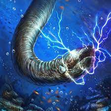
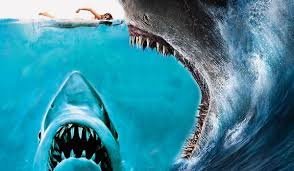
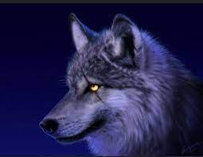

3 of the dangous animals
-
- eels

- snakes
 nakes are elongated, limbless, carnivorous reptiles of the suborder Serpentes (/sɜːrˈpɛntiːz/).[2] Like all other squamates, snakes are ectothermic, amniote vertebrates covered in overlapping scales. Many species of snakes have skulls with several more joints than their lizard ancestors, enabling them to swallow prey much larger than their heads (cranial kinesis). To accommodate their narrow bodies, snakes' paired organs (such as kidneys) appear one in front of the other instead of side by side, and most have only one functional lung. Some species retain a pelvic girdle with a pair of vestigial claws on either side of the cloaca. Lizards have independently evolved elongate bodies without limbs or with greatly reduced limbs at least twenty-five times via convergent evolution, leading to many lineages of legless lizards.[3] These resemble snakes, but several common groups of legless lizards have eyelids and external ears, which snakes lack, although this rule is not universal (see Amphisbaenia, Dibamidae, and Pygopodidae).
Living snakes are found on every continent except Antarctica, and on most smaller land masses; exceptions include some large islands, such as Ireland, Iceland, Greenland, the Hawaiian archipelago, and the islands of New Zealand, as well as many small islands of the Atlantic and central Pacific oceans.[4] Additionally, sea snakes are widespread throughout the Indian and Pacific oceans. Around thirty families are currently recognized, comprising about 520 genera and about 3,900 species.[5] They range in size from the tiny, 10.4 cm-long (4.1 in) Barbados threadsnake[6] to the reticulated python of 6.95 meters (22.8 ft) in length.[7] The fossil species Titanoboa cerrejonensis was 12.8 meters (42 ft) long.[8] Snakes are thought to have evolved from either burrowing or aquatic lizards, perhaps during the Jurassic period, with the earliest known fossils dating to between 143 and 167 Ma ago.[9][10] The diversity of modern snakes appeared during the Paleocene epoch (c. 66 to 56 Ma ago, after the Cretaceous–Paleogene extinction event). The oldest preserved descriptions of snakes can be found in the Brooklyn Papyrus.
Most species of snake are nonvenomous and those that have venom use it primarily to kill and subdue prey rather than for self-defense. Some possess venom that is potent enough to cause painful injury or death to humans. Nonvenomous snakes either swallow prey alive or kill by constriction.
Etymology
The English word snake comes from Old English snaca, itself from Proto-Germanic *snak-an- (cf. Germanic Schnake 'ring snake', Swedish snok 'grass snake'), from Proto-Indo-European root *(s)nēg-o- 'to crawl to creep', which also gave sneak as well as Sanskrit nāgá 'snake'.[11] The word ousted adder, as adder went on to narrow in meaning, though in Old English næddre was the general word for snake.[12] The other term, serpent, is from French, ultimately from Indo-European *serp- 'to creep',[13] which also gave Ancient Greek ἕρπω (hérpō) 'I crawl'.
Evolution
A phylogenetic overview of modern snakes.
Scolecophidia
Leptotyphlopidae
Anomalepididae
Typhlopidae
Alethinophidia
Amerophidia
Anilius
Tropidophiidae
Afrophidia
Uropeltoidea
Uropeltidae
Anomochilus
Cylindrophis
Macrostomata
Pythonoidea
Pythonidae
Xenopeltis
Loxocemus
Caenophidia
Acrochordidae
Xenodermidae
Pareidae
Viperidae
Homalopsidae
Colubridae
Cyclocoridae
Buhoma
Elapidae
Pseudaspididae
Prosymnidae
Psammophiidae
Atractaspididae
Pseudoxyrhophiidae
Lamprophiidae
Booidea
Boidae
Erycinae
Calabaria
Ungaliophiinae
Sanzinia
Candoia
Note: the tree only indicates relationships, not evolutionary branching times.[14]
The fossil record of snakes is relatively poor because snake skeletons are typically small and fragile making fossilization uncommon. Fossils readily identifiable as snakes (though often retaining hind limbs) first appear in the fossil record during the Cretaceous period.[15] The earliest known true snake fossils (members of the crown group Serpentes) come from the marine simoliophiids, the oldest of which is the Late Cretaceous (Cenomanian age) Haasiophis terrasanctus,[1] dated to between 112 and 94 million years old.[16]
Based on comparative anatomy, there is consensus that snakes descended from lizards.[17]: 11 [18] Pythons and boas—primitive groups among modern snakes—have vestigial hind limbs: tiny, clawed digits known as anal spurs, which are used to grasp during mating.[17]: 11 [19] The families Leptotyphlopidae and Typhlopidae also possess remnants of the pelvic girdle, appearing as horny projections when visible.
Front limbs are nonexistent in all known snakes. This is caused by the evolution of their Hox genes, controlling limb morphogenesis. The axial skeleton of the snakes' common ancestor, like most other tetrapods, had regional specializations consisting of cervical (neck), thoracic (chest), lumbar (lower back), sacral (pelvic), and caudal (tail) vertebrae. Early in snake evolution, the Hox gene expression in the axial skeleton responsible for the development of the thorax became dominant. As a result, the vertebrae anterior to the hindlimb buds (when present) all have the same thoracic-like identity (except from the atlas, axis, and 1–3 neck vertebrae). In other words, most of a snake's skeleton is an extremely extended thorax. Ribs are found exclusively on the thoracic vertebrae. Neck, lumbar and pelvic vertebrae are very reduced in number (only 2–10 lumbar and pelvic vertebrae are present), while only a short tail remains of the caudal vertebrae. However, the tail is still long enough to be of important use in many species, and is modified in some aquatic and tree-dwelling species.
Many modern snake groups originated during the Paleocene, alongside the adaptive radiation of mammals following the extinction of (non-avian) dinosaurs. The expansion of grasslands in North America also led to an explosive radiation among snakes.[20] Previously, snakes were a minor component of the North American fauna, but during the Miocene, the number of species and their prevalence increased dramatically with the first appearances of vipers and elapids in North America and the significant diversification of Colubridae (including the origin of many modern genera such as Nerodia, Lampropeltis, Pituophis, and Pantherophis).[20]
Fossils
There is fossil evidence to suggest that snakes may have evolved from burrowing lizards,[21] during the Cretaceous Period.[22] An early fossil snake relative, Najash rionegrina, was a two-legged burrowing animal with a sacrum, and was fully terrestrial.[23] One extant analog of these putative ancestors is the earless monitor Lanthanotus of Borneo (though it also is semiaquatic).[24] Subterranean species evolved bodies streamlined for burrowing, and eventually lost their limbs.[24] According to this hypothesis, features such as the transparent, fused eyelids (brille) and loss of external ears evolved to cope with fossorial difficulties, such as scratched corneas and dirt in the ears.[22][24] Some primitive snakes are known to have possessed hindlimbs, but their pelvic bones lacked a direct connection to the vertebrae. These include fossil species like Haasiophis, Pachyrhachis and Eupodophis, which are slightly older than Najash.[19]
This hypothesis was strengthened in 2015 by the discovery of a 113-million-year-old fossil of a four-legged snake in Brazil that has been named Tetrapodophis amplectus. It has many snake-like features, is adapted for burrowing and its stomach indicates that it was preying on other animals.[25] It is currently uncertain if Tetrapodophis is a snake or another species, in the squamate order, as a snake-like body has independently evolved at least 26 times. Tetrapodophis does not have distinctive snake features in its spine and skull.[26][27] A study in 2021 places the animal in a group of extinct marine lizards from the Cretaceous period known as dolichosaurs and not directly related to snakes.[28]
An alternative hypothesis, based on morphology, suggests the ancestors of snakes were related to mosasaurs—extinct aquatic reptiles from the Cretaceous—forming the clade Pythonomorpha.[18] According to this hypothesis, the fused, transparent eyelids of snakes are thought to have evolved to combat marine conditions (corneal water loss through osmosis), and the external ears were lost through disuse in an aquatic environment. This ultimately led to an animal similar to today's sea snakes. In the Late Cretaceous, snakes recolonized land, and continued to diversify into today's snakes. Fossilized snake remains are known from early Late Cretaceous marine sediments, which is consistent with this hypothesis; particularly so, as they are older than the terrestrial Najash rionegrina. Similar skull structure, reduced or absent limbs, and other anatomical features found in both mosasaurs and snakes lead to a positive cladistical correlation, although some of these features are shared with varanids.[citation needed]
Genetic studies in recent years have indicated snakes are not as closely related to monitor lizards as was once believed—and therefore not to mosasaurs, the proposed ancestor in the aquatic scenario of their evolution. However, more evidence links mosasaurs to snakes than to varanids. Fragmented remains found from the Jurassic and Early Cretaceous indicate deeper fossil records for these groups, which may potentially refute either hypothesis.[29][30]
Tetrapodophis
Tetrapodophis
Eupodophis descouensi
Eupodophis descouensi
Eupodophis descouensi
Eupodophis descouensi
Eupodophis descouensi hind leg
Eupodophis descouensi hind leg
Genetic basis of snake evolution
Main article: Limb development
Both fossils and phylogenetic studies demonstrate that snakes evolved from lizards, hence the question became which genetic changes led to limb loss in the snake ancestor. Limb loss is actually very common in extant reptiles and has happened dozens of times within skinks, anguids, and other lizards.[31]
In 2016, two studies reported that limb loss in snakes is associated with DNA mutations in the Zone of Polarizing Activity Regulatory Sequence (ZRS), a regulatory region of the sonic hedgehog gene which is critically required for limb development. More advanced snakes have no remnants of limbs, but basal snakes such as pythons and boas do have traces of highly reduced, vestigial hind limbs. Python embryos even have fully developed hind limb buds, but their later development is stopped by the DNA mutations in the ZRS.[32][33][34][35]
Distribution
Approximate world distribution of snakes
There are about 3,900 species of snakes,[36] ranging as far northward as the Arctic Circle in Scandinavia and southward through Australia.[18] Snakes can be found on every continent except Antarctica, as well as in the sea, and as high as 16,000 feet (4,900 m) in the Himalayan Mountains of Asia.[18][37]: 143 There are numerous islands from which snakes are absent, such as Ireland, Iceland, and New Zealand[4][37] (although New Zealand's northern waters are infrequently visited by the yellow-bellied sea snake and the banded sea krait).[38]
Taxonomy
See also: List of snake genera
All modern snakes are grouped within the suborder Serpentes in Linnean taxonomy, part of the order Squamata, though their precise placement within squamates remains controversial.[39]
The two infraorders of Serpentes are: Alethinophidia and Scolecophidia.[39] This separation is based on morphological characteristics and mitochondrial DNA sequence similarity. Alethinophidia is sometimes split into Henophidia and Caenophidia, with the latter consisting of "colubroid" snakes (colubrids, vipers, elapids, hydrophiids, and atractaspids) and acrochordids, while the other alethinophidian families comprise Henophidia.[40] While not extant today, the Madtsoiidae, a family of giant, primitive, python-like snakes, was around until 50,000 years ago in Australia, represented by genera such as Wonambi.
There are numerous debates in the systematics within the group. For instance, many sources classify Boidae and Pythonidae as one family, while some keep the Elapidae and Hydrophiidae (sea snakes) separate for practical reasons despite their extremely close relation.
Recent molecular studies support the monophyly of the clades of modern snakes, scolecophidians, typhlopids + anomalepidids, alethinophidians, core alethinophidians, uropeltids (Cylindrophis, Anomochilus, uropeltines), macrostomatans, booids, boids, pythonids and caenophidians.[14]
Families
Infraorder Alethinophidia 25 families
Family[5] Taxon author[5] Genera[5] Species[5] Common name Geographic range[41]
Acrochordidae Bonaparte, 1831 1 3 Wart snakes Western India and Sri Lanka through tropical Southeast Asia to the Philippines, south through the Indonesian/Malaysian island group to Timor, east through New Guinea to the northern coast of Australia to Mussau Island, the Bismarck Archipelago and Guadalcanal Island in the Solomon Islands.
Aniliidae Stejneger, 1907 1 1 False coral snake Tropical South America.
Anomochilidae Cundall, Wallach, 1993 1 3 Dwarf pipe snakes West Malaysia and on the Indonesian island of Sumatra.
Atractaspididae Günther, 1858 12 72 Burrowing asps Africa and the Middle East
Boidae Gray, 1825 14 61 Boas Northern, Central and South America, the Caribbean, southeastern Europe and Asia Minor, Northern, Central and East Africa, Madagascar and Reunion Island, the Arabian Peninsula, Central and southwestern Asia, India and Sri Lanka, the Moluccas and New Guinea through to Melanesia and Samoa.
Bolyeriidae Hoffstetter, 1946 2 2 Splitjaw snakes Mauritius.
Colubridae Oppel, 1811 258[5] 2055[5] Typical snakes Widespread on all continents, except Antarctica.[42]
Cyclocoridae Weinell & Brown, 2017 5 8 Cyclocorids The Philippines
Cylindrophiidae Fitzinger, 1843 1 14 Asian pipe snakes Sri Lanka east through Myanmar, Thailand, Cambodia, Vietnam and the Malay Archipelago to as far east as Aru Islands off the southwestern coast of New Guinea. Also found in southern China (Fujian, Hong Kong and on Hainan Island) and in Laos.
Elapidae Boie, 1827 55 389 Elapids On land, worldwide in tropical and subtropical regions, except in Europe. Sea snakes occur in the Indian Ocean and the Pacific.[43]
Homalopsidae Bonaparte, 1845 28 53 Homalopsids Southeastern Asia and northern Australia.
Lamprophiidae Fitzinger, 1843 16 89 Lamprophiids (formerly included Atracaspididae, Psammophiidae, and several other families) Africa (including the Seychelles)
Loxocemidae Cope, 1861 1 1 Mexican burrowing snake Along the Pacific versant from Mexico south to Costa Rica.
Pareidae Romer, 1956 3 20 Snail-eating snakes Southeast Asia and islands on the Sunda Shelf (Sumatra, Borneo, Java, and their surrounding smaller islands).
Prosymnidae Kelly, Barker, Villet & Broadley, 2009 1 16 Shovel-snout snakes Subsaharan Africa
Psammophiidae Bourgeois, 1968 8 55 Psammophiids Africa (including Madagascar), Asia and southern Europe
Pseudaspididae Cope, 1893 3 4 Pseudaspidids Mostly Subsaharan Africa; two species in Southeast Asia
Pseudoxyrhophiidae Dowling, 1975 22 89 Pseudoxyrhophiids Mostly Madagascar and the Comoros; 5 species in subsaharan Africa, 1 in Socotra
Pythonidae Fitzinger, 1826 8 40 Pythons Subsaharan Africa, India, Myanmar, southern China, Southeast Asia and from the Philippines southeast through Indonesia to New Guinea and Australia.
Tropidophiidae Brongersma, 1951 2 34 Dwarf boas West Indies; also Panama and northwestern South America, as well as in northwestern and southeastern Brazil.
Uropeltidae Müller, 1832 8 55 Shield-tailed snakes Southern India and Sri Lanka.
Viperidae Oppel, 1811 35 341 Vipers The Americas, Africa, and Eurasia east to Wallace's Line.
Xenodermidae Cope, 1900 6 18 Dragon & odd-scaled snakes Southern and southeastern Asia, and islands on the Sunda Shelf (Sumatra, Borneo, Java, and their surrounding smaller islands).
Xenopeltidae Bonaparte, 1845 1 2 Sunbeam snakes Southeast Asia from the Andaman and Nicobar Islands, east through Myanmar to southern China, Thailand, Laos, Cambodia, Vietnam, the Malay Peninsula and the East Indies to Sulawesi, as well as the Philippines.
Xenophidiidae Wallach & Günther, 1998 1 2 Spine-jawed snakes Borneo & peninsular Malaysia.
Infraorder Scolecophidia 5 families
Family[5] Taxon author[5] Genera[5] Species[5] Common name Geographic range[41]
Anomalepidae Taylor, 1939 4 18 Primitive blind snakes From southern Central America to northwestern South America. Disjunct populations in northeastern and southeastern South America.
Gerrhopilidae Vidal, Wynn, Donnellan and Hedges 2010 2 18 Indo-Malayan blindsnakes Southern & southeastern Asia, including Sri Lanka, the Philippines, and New Guinea.
Leptotyphlopidae Stejneger, 1892 13 139 Slender blind snakes Africa, western Asia from Turkey to northwestern India, on Socotra Island, from the southwestern United States south through Mexico and Central to South America, though not in the high Andes. In Pacific South America they occur as far south as southern coastal Peru, and on the Atlantic side as far as Uruguay and Argentina. In the Caribbean they are found on the Bahamas, Hispaniola and the Lesser Antilles.
Typhlopidae Merrem, 1820 18 266 Typical blind snakes Most tropical and many subtropical regions around the world, particularly in Africa, Madagascar, Asia, islands in the Pacific, tropical America and in southeastern Europe.
Xenotyphlopidae Vidal, Vences, Branch and Hedges 2010 1 1 Round-nosed blindsnake Northern Madagascar.
Legless lizards
Main article: Legless lizard
While snakes are limbless reptiles, evolved from (and grouped with) lizards, there are many other species of lizards that have lost their limbs independently but which superficially look similar to snakes. These include the slowworm and glass snake.
Other serpentine tetrapods that are unrelated to snakes include caecilians (amphibians), amphisbaenians (near-lizard squamates), and the extinct aistopods (amphibians).
Biology
An adult Barbados threadsnake, Leptotyphlops carlae, on an American quarter dollar
Size
The now extinct Titanoboa cerrejonensis was 12.8 m (42 ft) in length.[8] By comparison, the largest extant snakes are the reticulated python, measuring about 6.95 m (22.8 ft) long,[7] and the green anaconda, which measures about 5.21 m (17.1 ft) long and is considered the heaviest snake on Earth at 97.5 kg (215 lb).[44]
At the other end of the scale, the smallest extant snake is Leptotyphlops carlae, with a length of about 10.4 cm (4.1 in).[6] Most snakes are fairly small animals, approximately 1 m (3.3 ft) in length.[45]
Perception
Thermographic image of a snake eating a mouse
Pit vipers, pythons, and some boas have infrared-sensitive receptors in deep grooves on the snout, allowing them to "see" the radiated heat of warm-blooded prey. In pit vipers, the grooves are located between the nostril and the eye in a large "pit" on each side of the head. Other infrared-sensitive snakes have multiple, smaller labial pits lining the upper lip, just below the nostrils.[46]
A snake tracks its prey using smell, collecting airborne particles with its forked tongue, then passing them to the vomeronasal organ or Jacobson's organ in the mouth for examination.[46] The fork in the tongue provides a sort of directional sense of smell and taste simultaneously.[46] The snake's tongue is constantly in motion, sampling particles from the air, ground, and water, analyzing the chemicals found, and determining the presence of prey or predators in the local environment. In water-dwelling snakes, such as the anaconda, the tongue functions efficiently underwater.[46]
A line diagram from The Fauna of British India by G. A. Boulenger (1890), illustrating the terminology of shields on the head of a snake
The underside of a snake is very sensitive to vibration, allowing the snake to detect approaching animals by sensing faint vibrations in the ground.[46] Despite the lack of outer ears, they are also able to detect airborne sounds.[47]
Snake vision varies greatly between species. Some have keen eyesight and others are only able to distinguish light from dark, but the important trend is that a snake's visual perception is adequate enough to track movements.[48] Generally, vision is best in tree-dwelling snakes and weakest in burrowing snakes. Some have binocular vision, where both eyes are capable of focusing on the same point, an example of this being the Asian vine snake. Most snakes focus by moving the lens back and forth in relation to the retina. Diurnal snakes have round pupils and many nocturnal snakes have slit pupils. Most species possess three visual pigments and are probably able to see two primary colors in daylight. It has been concluded that the last common ancestors of all snakes had UV-sensitive vision, but most snakes that depend on their eyesight to hunt in daylight have evolved lenses that act like sunglasses for filtering out the UV-light, which probably also sharpens their vision by improving the contrast.[49][50]
Skin
Main article: Snake scale
The skin of a snake is covered in scales. Contrary to the popular notion of snakes being slimy (because of possible confusion of snakes with worms), snakeskin has a smooth, dry texture. Most snakes use specialized belly scales to travel, allowing them to grip surfaces. The body scales may be smooth, keeled, or granular. The eyelids of a snake are transparent "spectacle" scales, also known as brille, which remain permanently closed.
The shedding of scales is called ecdysis (or in normal usage, molting or sloughing). Snakes shed the complete outer layer of skin in one piece.[51] Snake scales are not discrete, but extensions of the epidermis—hence they are not shed separately but as a complete outer layer during each molt, akin to a sock being turned inside out.[52]
Snakes have a wide diversity of skin coloration patterns which are often related to behavior, such as the tendency to have to flee from predators. Snakes that are at a high risk of predation tend to be plain, or have longitudinal stripes, providing few reference points to predators, thus allowing the snake to escape without being noticed. Plain snakes usually adopt active hunting strategies, as their pattern allows them to send little information to prey about motion. Blotched snakes usually use ambush-based strategies, likely because it helps them blend into an environment with irregularly shaped objects, like sticks or rocks. Spotted patterning can similarly help snakes to blend into their environment.[53]
The shape and number of scales on the head, back, and belly are often characteristic and used for taxonomic purposes. Scales are named mainly according to their positions on the body. In "advanced" (Caenophidian) snakes, the broad belly scales and rows of dorsal scales correspond to the vertebrae, allowing these to be counted without the need for dissection.
Molting
A common watersnake shedding its skin
Molting (or "ecdysis") serves a number of purposes. It allows old, worn skin to be replaced and it can remove parasites such as mites and ticks that live in the skin. It's also been observed in snakes that molting can be synced to mating cycles. Shedding skin can release pheromones and revitalize color and patterns of the skin to increase attraction of mates.[54] Renewal of the skin by molting supposedly allows growth in some animals such as insects, but this has been disputed in the case of snakes.[52][55]
Molting occurs periodically throughout the life of a snake. Before each molt, the snake stops eating and often hides or moves to a safe place. Just before shedding, the skin becomes dull and dry looking and the snake's eyes turn cloudy or blue-colored. The inner surface of the old skin liquefies, causing it to separate from the new skin beneath it. After a few days, the eyes become clear and the snake "crawls" out of its old skin, which splits close to the snake's mouth. The snake rubs its body against rough surfaces to aid in the shedding of its old skin. In many cases, the cast skin peels backward over the body from head to tail in one piece, like pulling a sock off inside-out, revealing a new, larger, brighter layer of skin which has formed underneath.[52][56]
A young snake that is still growing may shed its skin up to four times a year, but an older snake may shed only once or twice a year.[56] The discarded skin carries a perfect imprint of the scale pattern, so it is usually possible to identify the snake from the cast skin if it is reasonably intact.[52] This periodic renewal has led to the snake being a symbol of healing and medicine, as pictured in the Rod of Asclepius.[57]
Scale counts can sometimes be used to identify the sex of a snake when the species is not distinctly sexually dimorphic. A probe is fully inserted into the cloaca, marked at the point where it stops, then removed and measured against the subcaudal scales.[58] The scalation count determines whether the snake is a male or female, as the hemipenes of a male will probe to a different depth (usually longer) than the cloaca of a female.[58][clarification needed]
Skeleton
The skeletons of snakes are radically different from those of most other reptiles (as compared with the turtle here, for example), consisting almost entirely of an extended ribcage.
The skeleton of most snakes consists solely of the skull, hyoid, vertebral column, and ribs, though henophidian snakes retain vestiges of the pelvis and rear limbs.
The skull consists of a solid and complete neurocranium, to which many of the other bones are only loosely attached, particularly the highly mobile jaw bones, which facilitate manipulation and ingestion of large prey items. The left and right sides of the lower jaw are joined only by a flexible ligament at the anterior tips, allowing them to separate widely, and the posterior end of the lower jaw bones articulate with a quadrate bone, allowing further mobility. The mandible and quadrate bones can pick up ground-borne vibrations;[59] because the sides of the lower jaw can move independently of one another, a snake resting its jaw on a surface has sensitive stereo auditory perception, used for detecting the position of prey. The jaw–quadrate–stapes pathway is capable of detecting vibrations on the angstrom scale, despite the absence of an outer ear and the lack of an impedance matching mechanism—provided by the ossicles in other vertebrates—for receiving vibrations from the air.[60][61]
The hyoid is a small bone located posterior and ventral to the skull, in the 'neck' region, which serves as an attachment for the muscles of the snake's tongue, as it does in all other tetrapods.
The vertebral column consists of between 200 and 400 vertebrae, or sometimes more. The body vertebrae each have two ribs articulating with them. The tail vertebrae are comparatively few in number (often less than 20% of the total) and lack ribs. The vertebrae have projections that allow for strong muscle attachment, enabling locomotion without limbs.
Caudal autotomy (self-amputation of the tail), a feature found in some lizards, is absent in most snakes.[62] In the rare cases where it does exist in snakes, caudal autotomy is intervertebral (meaning the separation of adjacent vertebrae), unlike that in lizards, which is intravertebral, i.e. the break happens along a predefined fracture plane present on a vertebra.[63][64]
In some snakes, most notably boas and pythons, there are vestiges of the hindlimbs in the form of a pair of pelvic spurs. These small, claw-like protrusions on each side of the cloaca are the external portion of the vestigial hindlimb skeleton, which includes the remains of an ilium and femur.
Snakes are polyphyodonts with teeth that are continuously replaced.[65]
Internal organs
Anatomy of a snake.file info
esophagus
trachea
tracheal lungs
rudimentary left lung
right lung
heart
liver
stomach
air sac
gallbladder
pancreas
spleen
intestine
testicles
kidneys
Snakes and other non-archosaur (crocodilians, dinosaurs + birds and allies) reptiles have a three-chambered heart that controls the circulatory system via the left and right atrium, and one ventricle.[66] Internally, the ventricle is divided into three interconnected cavities: the cavum arteriosum, the cavum pulmonale, and the cavum venosum.[67] The cavum venosum receives deoxygenated blood from the right atrium and the cavum arteriosum receives oxygenated blood from the left atrium. Located beneath the cavum venosum is the cavum pulmonale, which pumps blood to the pulmonary trunk.[68]
The snake's heart is encased in a sac, called the pericardium, located at the bifurcation of the bronchi. The heart is able to move around, owing to the lack of a diaphragm; this adjustment protects the heart from potential damage when large ingested prey is passed through the esophagus. The spleen is attached to the gall bladder and pancreas and filters the blood. The thymus, located in fatty tissue above the heart, is responsible for the generation of immune cells in the blood. The cardiovascular system of snakes is unique for the presence of a renal portal system in which the blood from the snake's tail passes through the kidneys before returning to the heart.[69]
The vestigial left lung is often small or sometimes even absent, as snakes' tubular bodies require all of their organs to be long and thin.[69] In the majority of species, only one lung is functional. This lung contains a vascularized anterior portion and a posterior portion that does not function in gas exchange.[69] This 'saccular lung' is used for hydrostatic purposes to adjust buoyancy in some aquatic snakes and its function remains unknown in terrestrial species.[69] Many organs that are paired, such as kidneys or reproductive organs, are staggered within the body, one located ahead of the other.[69]
Snakes have no lymph nodes.[69]
Venom
See also: Snake venom, Venomous snake, and § Bite
Innocuous milk snakes are often mistaken for coral snakes whose venom is deadly to humans.
Cobras, vipers, and closely related species use venom to immobilize, injure, or kill their prey. The venom is modified saliva, delivered through fangs.[17][70]: 243 The fangs of 'advanced' venomous snakes like viperids and elapids are hollow, allowing venom to be injected more effectively, and the fangs of rear-fanged snakes such as the boomslang simply have a groove on the posterior edge to channel venom into the wound. Snake venoms are often prey-specific, and their role in self-defense is secondary.[17][70]: 243
Venom, like all salivary secretions, is a predigestant that initiates the breakdown of food into soluble compounds, facilitating proper digestion. Even nonvenomous snakebites (like any animal bite) cause tissue damage.[17][70]: 209
Certain birds, mammals, and other snakes (such as kingsnakes) that prey on venomous snakes have developed resistance and even immunity to certain venoms.[17]: 243 Venomous snakes include three families of snakes, and do not constitute a formal taxonomic classification group.
The colloquial term "poisonous snake" is generally an incorrect label for snakes. A poison is inhaled or ingested, whereas venom produced by snakes is injected into its victim via fangs.[71] There are, however, two exceptions: Rhabdophis sequesters toxins from the toads it eats, then secretes them from nuchal glands to ward off predators; and a small unusual population of garter snakes in the US state of Oregon retains enough toxins in their livers from ingested newts to be effectively poisonous to small local predators (such as crows and foxes).[72]
Snake venoms are complex mixtures of proteins,[70] and are stored in venom glands at the back of the head.[72] In all venomous snakes, these glands open through ducts into grooved or hollow teeth in the upper jaw.[17]: 243 [71] The proteins can potentially be a mix of neurotoxins (which attack the nervous system), hemotoxins (which attack the circulatory system), cytotoxins (which attack the cells directly), bungarotoxins (related to neurotoxins, but also directly affect muscle tissue), and many other toxins that affect the body in different ways.[71][70] Almost all snake venom contains hyaluronidase, an enzyme that ensures rapid diffusion of the venom.[17]: 243
Venomous snakes that use hemotoxins usually have fangs in the front of their mouths, making it easier for them to inject the venom into their victims.[70][71] Some snakes that use neurotoxins (such as the mangrove snake) have fangs in the back of their mouths, with the fangs curled backwards.[73] This makes it difficult both for the snake to use its venom and for scientists to milk them.[71] Elapids, however, such as cobras and kraits are proteroglyphous—they possess hollow fangs that cannot be erected toward the front of their mouths, and cannot "stab" like a viper. They must actually bite the victim.[17]: 242
It has been suggested that all snakes may be venomous to a certain degree, with harmless snakes having weak venom and no fangs.[74] According to this theory, most snakes that are labelled "nonvenomous" would be considered harmless because they either lack a venom delivery method or are incapable of delivering enough to endanger a human. The theory postulates that snakes may have evolved from a common lizard ancestor that was venomous, and also that venomous lizards like the gila monster, beaded lizard, monitor lizards, and the now-extinct mosasaurs, may have derived from this same common ancestor. They share this "venom clade" with various other saurian species.
Venomous snakes are classified in two taxonomic families:
Elapids – cobras including king cobras, kraits, mambas, Australian copperheads, sea snakes, and coral snakes.[73]
Viperids – vipers, rattlesnakes, copperheads/cottonmouths, and bushmasters.[73]
There is a third family containing the opistoglyphous (rear-fanged) snakes (as well as the majority of other snake species):
Colubrids – boomslangs, tree snakes, vine snakes, cat snakes, although not all colubrids are venomous.[17]: 209 [73]
Reproduction
See also: Sexual selection in scaled reptiles
Although a wide range of reproductive modes are used by snakes, all employ internal fertilization. This is accomplished by means of paired, forked hemipenes, which are stored, inverted, in the male's tail.[75] The hemipenes are often grooved, hooked, or spined—designed to grip the walls of the female's cloaca.[76][75] The clitoris of the female snake consists of two structures located between the cloaca and the scent glands.[77]
Most species of snakes lay eggs which they abandon shortly after laying. However, a few species (such as the king cobra) construct nests and stay in the vicinity of the hatchlings after incubation.[75] Most pythons coil around their egg-clutches and remain with them until they hatch.[78] A female python will not leave the eggs, except to occasionally bask in the sun or drink water. She will even "shiver" to generate heat to incubate the eggs.[78]
Some species of snake are ovoviviparous and retain the eggs within their bodies until they are almost ready to hatch.[79][80] Several species of snake, such as the boa constrictor and green anaconda, are fully viviparous, nourishing their young through a placenta as well as a yolk sac; this is highly unusual among reptiles, and normally found in requiem sharks or placental mammals.[79][80] Retention of eggs and live birth are most often associated with colder environments.[75][80]
The garter snake has been studied for sexual selection.
Sexual selection in snakes is demonstrated by the 3,000 species that each use different tactics in acquiring mates.[81] Ritual combat between males for the females they want to mate with includes topping, a behavior exhibited by most viperids in which one male will twist around the vertically elevated fore body of its opponent and force it downward. It is common for neck-biting to occur while the snakes are entwined.[82]
Facultative parthenogenesis
Parthenogenesis is a natural form of reproduction in which growth and development of embryos occur without fertilization. Agkistrodon contortrix (copperhead) and Agkistrodon piscivorus (cottonmouth) can reproduce by facultative parthenogenesis, meaning that they are capable of switching from a sexual mode of reproduction to an asexual mode.[83] The most likely type of parthenogenesis to occur is automixis with terminal fusion, a process in which two terminal products from the same meiosis fuse to form a diploid zygote. This process leads to genome-wide homozygosity, expression of deleterious recessive alleles, and often to developmental abnormalities. Both captive-born and wild-born copperheads and cottonmouths appear to be capable of this form of parthenogenesis.[83]
Reproduction in squamate reptiles is almost exclusively sexual. Males ordinarily have a ZZ pair of sex-determining chromosomes, and females a ZW pair. However, the Colombian Rainbow boa (Epicrates maurus) can also reproduce by facultative parthenogenesis, resulting in production of WW female progeny.[84] The WW females are likely produced by terminal automixis.
Embryonic Development
Mouse embryo 12 day post fertilization side by side with Corn Snake embryo 2 days post ovo-positioning.[85]
Snake embryonic development initially follows similar steps as any vertebrate embryo. The snake embryo begins as a zygote, undergoes rapid cell division, forms a germinal disc, also called a blastodisc, then undergoes gastrulation, neurulation, and organogenesis.[86] Cell division and proliferation continues until an early snake embryo develops and the typical body shape of a snake can be observed.[86] Multiple features differentiate the embryologic development of snakes from other vertebrates, two significant factors being the elongation of the body and the lack of limb development.
Diagram illustrating differential somite size due to difference in somitogenesis clock oscillation.[85]
The elongation in snake body is accompanied by a significant increase in vertebra count (mice have 60 vertebrae, whereas snakes may have over 300).[85] This increase in vertebrae is due to an increase in somites during embryogenesis, leading to an increased number of vertebrae which develop.[85] Somites are formed at the presomitic mesoderm due to a set of oscillatory genes that direct the somitogenesis clock. The snake somitogenesis clock operates at a frequency 4 times that of a mouse (after correction for developmental time), creating more somites, and therefore creating more vertebrae.[85] This difference in clock speed is believed to be caused by differences in Lunatic fringe gene expression, a gene involved in the somitogenesis clock.[87]
There is ample literature focusing on the limb development/lack of development in snake embryos and the gene expression associated with the different stages. In basal snakes, such as the python, embryos in early development exhibit a hind limb bud that develops with some cartilage and a cartilaginous pelvic element, however this degenerates before hatching.[88] This presence of vestigial development suggests that some snakes are still undergoing hind limb reduction before they are eliminated.[89] There is no evidence in basal snakes of forelimb rudiments and no examples of snake forelimb bud initiation in embryo, so little is known regarding the loss of this trait.[89] Recent studies suggests that hind limb reduction could be due to mutations in enhancers for the SSH gene,[89] however other studies suggested that mutations within the Hox Genes or their enhancers could contribute to snake limblessness.[85] Since multiple studies have found evidence suggesting different genes played a role in the loss of limbs in snakes, it is likely that multiple gene mutations had an additive effect leading to limb loss in snakes[90]
Behavior
Winter dormancy
Snake coiled on a stick in Oklahoma. It was brumating in a large pile of wood chips, found by this landscaper after he bulldozed the pile in late autumn 2018.
In regions where winters are too cold for snakes to tolerate while remaining active, local species will enter a period of brumation. Unlike hibernation, in which the dormant mammals are actually asleep, brumating reptiles are awake but inactive. Individual snakes may brumate in burrows, under rock piles, or inside fallen trees, or large numbers of snakes may clump together in hibernacula.
Feeding and diet
African egg-eating snake eating an egg
All snakes are strictly carnivorous, preying on small animals including lizards, frogs, other snakes, small mammals, birds, eggs, fish, snails, worms, and insects.[17]: 81 [18][91] Snakes cannot bite or tear their food to pieces so must swallow their prey whole. The eating habits of a snake are largely influenced by body size; smaller snakes eat smaller prey. Juvenile pythons might start out feeding on lizards or mice and graduate to small deer or antelope as an adult, for example.
The snake's jaw is a complex structure. Contrary to the popular belief that snakes can dislocate their jaws, they have an extremely flexible lower jaw, the two halves of which are not rigidly attached, and numerous other joints in the skull, which allow the snake to open its mouth wide enough to swallow prey whole, even if it is larger in diameter than the snake itself.[91] For example, the African egg-eating snake has flexible jaws adapted for eating eggs much larger than the diameter of its head.[17]: 81 This snake has no teeth, but does have bony protrusions on the inside edge of its spine, which it uses to break the shell when eating eggs.[17]: 81
Carpet python constricting and consuming a chicken
The majority of snakes eat a variety of prey animals, but there is some specialization in certain species. King cobras and the Australian bandy-bandy consume other snakes. Species of the family Pareidae have more teeth on the right side of their mouths than on the left, as they mostly prey on snails and the shells usually spiral clockwise.[17]: 184 [92][93]
Some snakes have a venomous bite, which they use to kill their prey before eating it.[91][94] Other snakes kill their prey by constriction,[91] while some swallow their prey when it is still alive.[17]: 81 [91]
Dolichophis jugularis preying on a sheltopusik
After eating, snakes become dormant to allow the process of digestion to take place;[58] this is an intense activity, especially after consumption of large prey. In species that feed only sporadically, the entire intestine enters a reduced state between meals to conserve energy. The digestive system is then 'up-regulated' to full capacity within 48 hours of prey consumption. Being ectothermic ("cold-blooded"), the surrounding temperature plays an important role in the digestion process. The ideal temperature for snakes to digest food is 30 °C (86 °F). There is a huge amount of metabolic energy involved in a snake's digestion, for example the surface body temperature of the South American rattlesnake (Crotalus durissus) increases by as much as 1.2 °C (2.2 °F) during the digestive process.[95] If a snake is disturbed after having eaten recently, it will often regurgitate its prey to be able to escape the perceived threat. When undisturbed, the digestive process is highly efficient; the snake's digestive enzymes dissolve and absorb everything but the prey's hair (or feathers) and claws, which are excreted along with waste.
Hooding and spitting
Hooding (expansion of the neck area) is a visual deterrent, mostly seen in cobras (elapids), and is primarily controlled by rib muscles.[96] Hooding can be accompanied by spitting venom towards the threatening object,[97] and producing a specialized sound; hissing. Studies on captive cobras showed that 13 to 22% of the body length is raised during hooding.[98]
Locomotion
The lack of limbs does not impede the movement of snakes. They have developed several different modes of locomotion to deal with particular environments. Unlike the gaits of limbed animals, which form a continuum, each mode of snake locomotion is discrete and distinct from the others; transitions between modes are abrupt.[99][100]
Lateral undulation
Main article: Undulatory locomotion
Crawling prints of a snake
Lateral undulation is the sole mode of aquatic locomotion, and the most common mode of terrestrial locomotion.[100] In this mode, the body of the snake alternately flexes to the left and right, resulting in a series of rearward-moving "waves".[99] While this movement appears rapid, snakes have rarely been documented moving faster than two body-lengths per second, often much less.[101] This mode of movement has the same net cost of transport (calories burned per meter moved) as running in lizards of the same mass.[102]
Terrestrial lateral undulation is the most common mode of terrestrial locomotion for most snake species.[99] In this mode, the posteriorly moving waves push against contact points in the environment, such as rocks, twigs, irregularities in the soil, etc.[99] Each of these environmental objects, in turn, generates a reaction force directed forward and towards the midline of the snake, resulting in forward thrust while the lateral components cancel out.[103] The speed of this movement depends upon the density of push-points in the environment, with a medium density of about 8[clarification needed] along the snake's length being ideal.[101] The wave speed is precisely the same as the snake speed, and as a result, every point on the snake's body follows the path of the point ahead of it, allowing snakes to move through very dense vegetation and small openings.[103]
When swimming, the waves become larger as they move down the snake's body, and the wave travels backwards faster than the snake moves forwards.[104] Thrust is generated by pushing their body against the water, resulting in the observed slip. In spite of overall similarities, studies show that the pattern of muscle activation is different in aquatic versus terrestrial lateral undulation, which justifies calling them separate modes.[105] All snakes can laterally undulate forward (with backward-moving waves), but only sea snakes have been observed reversing the motion (moving backwards with forward-moving waves).[99]
Sidewinding
Main article: Sidewinding
A neonate sidewinder rattlesnake (Crotalus cerastes) sidewinding
Most often employed by colubroid snakes (colubrids, elapids, and vipers) when the snake must move in an environment that lacks irregularities to push against (rendering lateral undulation impossible), such as a slick mud flat, or a sand dune, sidewinding is a modified form of lateral undulation in which all of the body segments oriented in one direction remain in contact with the ground, while the other segments are lifted up, resulting in a peculiar "rolling" motion.[106][107] This mode of locomotion overcomes the slippery nature of sand or mud by pushing off with only static portions on the body, thereby minimizing slipping.[106] The static nature of the contact points can be shown from the tracks of a sidewinding snake, which show each belly scale imprint, without any smearing. This mode of locomotion has very low caloric cost, less than 1⁄3 of the cost for a lizard to move the same distance.[102] Contrary to popular belief, there is no evidence that sidewinding is associated with the sand being hot.[106]
Concertina
Main article: Concertina movement
When push-points are absent, but there is not enough space to use sidewinding because of lateral constraints, such as in tunnels, snakes rely on concertina locomotion.[99][107] In this mode, the snake braces the posterior portion of its body against the tunnel wall while the front of the snake extends and straightens.[106] The front portion then flexes and forms an anchor point, and the posterior is straightened and pulled forwards. This mode of locomotion is slow and very demanding, up to seven times the cost of laterally undulating over the same distance.[102] This high cost is due to the repeated stops and starts of portions of the body as well as the necessity of using active muscular effort to brace against the tunnel walls.
Arboreal
Golden tree snake climbing a flower
The movement of snakes in arboreal habitats has only recently been studied.[108] While on tree branches, snakes use several modes of locomotion depending on species and bark texture.[108] In general, snakes will use a modified form of concertina locomotion on smooth branches, but will laterally undulate if contact points are available.[108] Snakes move faster on small branches and when contact points are present, in contrast to limbed animals, which do better on large branches with little 'clutter'.[108]
Gliding snakes (Chrysopelea) of Southeast Asia launch themselves from branch tips, spreading their ribs and laterally undulating as they glide between trees.[106][109][110] These snakes can perform a controlled glide for hundreds of feet depending upon launch altitude and can even turn in midair.[106][109]
Rectilinear
Main article: Rectilinear locomotion
The slowest mode of snake locomotion is rectilinear locomotion, which is also the only one where the snake does not need to bend its body laterally, though it may do so when turning.[111] In this mode, the belly scales are lifted and pulled forward before being placed down and the body pulled over them. Waves of movement and stasis pass posteriorly, resulting in a series of ripples in the skin.[111] The ribs of the snake do not move in this mode of locomotion and this method is most often used by large pythons, boas, and vipers when stalking prey across open ground as the snake's movements are subtle and harder to detect by their prey in this manner.[106]
Interactions with humans
Most common symptoms of any kind of snake bite envenomation.[112][113] Furthermore, there is vast variation in symptoms between bites from different types of snakes.[112]
Bite
Main article: Snakebite
Vipera berus, one fang in glove with a small venom stain, the other still in place
Snakes do not ordinarily prey on humans. Unless startled or injured, most snakes prefer to avoid contact and will not attack humans. With the exception of large constrictors, nonvenomous snakes are not a threat to humans. The bite of a nonvenomous snake is usually harmless; their teeth are not adapted for tearing or inflicting a deep puncture wound, but rather grabbing and holding. Although the possibility of infection and tissue damage is present in the bite of a nonvenomous snake, venomous snakes present far greater hazard to humans.[17]: 209 The World Health Organization (WHO) lists snakebite under the "other neglected conditions" category.[114]
Documented deaths resulting from snake bites are uncommon. Nonfatal bites from venomous snakes may result in the need for amputation of a limb or part thereof. Of the roughly 725 species of venomous snakes worldwide, only 250 are able to kill a human with one bite. Australia averages only one fatal snake bite per year. In India, 250,000 snakebites are recorded in a single year, with as many as 50,000 recorded initial deaths.[115] The WHO estimates that on the order of 100,000 people die each year as a result of snake bites, and around three times as many amputations and other permanent disabilities are caused by snakebites annually.[116]
The treatment for a snakebite is as variable as the bite itself. The most common and effective method is through antivenom (or antivenin), a serum made from the venom of the snake. Some antivenom is species-specific (monovalent) while some is made for use with multiple species in mind (polyvalent). In the United States for example, all species of venomous snakes are pit vipers, with the exception of the coral snake. To produce antivenom, a mixture of the venoms of the different species of rattlesnakes, copperheads, and cottonmouths is injected into the body of a horse in ever-increasing dosages until the horse is immunized. Blood is then extracted from the immunized horse. The serum is separated and further purified and freeze-dried. It is reconstituted with sterile water and becomes antivenom. For this reason, people who are allergic to horses are more likely to have an allergic reaction to antivenom.[117] Antivenom for the more dangerous species (such as mambas, taipans, and cobras) is made in a similar manner in South Africa, Australia , and India, although these antivenoms are species-specific.
Snake charmers
Main article: Snake charming
The Indian cobra is the most common subject of snake charmings.
In some parts of the world, especially in India, snake charming is a roadside show performed by a charmer. In such a show, the snake charmer carries a basket containing a snake that he seemingly charms by playing tunes with his flutelike musical instrument, to which the snake responds.[118] The snake is in fact responding to the movement of the flute, not the sound it makes, as snakes lack external ears (though they do have internal ears).[118]
The Wildlife Protection Act of 1972 in India technically prohibits snake charming on the grounds of reducing animal cruelty. Other types of snake charmers use a snake and mongoose show, where the two animals have a mock fight; however, this is not very common, as the animals may be seriously injured or killed. Snake charming as a profession is dying out in India because of competition from modern forms of entertainment and environment laws proscribing the practice. Many Indians have never seen snake charming and it is becoming a folktale of the past.[118][119][120][121]
Trapping
The Irulas tribe of Andhra Pradesh and Tamil Nadu in India have been hunter-gatherers in the hot, dry plains forests, and have practiced the art of snake catching for generations. They have a vast knowledge of snakes in the field. They generally catch the snakes with the help of a simple stick. Earlier, the Irulas caught thousands of snakes for the snake-skin industry. After the complete ban of the snake-skin industry in India and protection of all snakes under the Indian Wildlife (Protection) Act 1972, they formed the Irula Snake Catcher's Cooperative and switched to catching snakes for removal of venom, releasing them in the wild after four extractions. The venom so collected is used for producing life-saving antivenom, biomedical research and for other medicinal products.[122] The Irulas are also known to eat some of the snakes they catch and are very useful in rat extermination in the villages.
Despite the existence of snake charmers, there have also been professional snake catchers or wranglers. Modern-day snake trapping involves a herpetologist using a long stick with a V- shaped end. Some television show hosts, like Bill Haast, Austin Stevens, Steve Irwin, and Jeff Corwin, prefer to catch them using bare hands.
Consumption
A "海豹蛇" ("sea-leopard snake", supposedly Enhydris bocourti) occupies a place of honor among the live delicacies on display outside a Guangzhou restaurant.
Although snakes are not commonly thought of as food, their consumption is acceptable in some cultures and may even be considered a delicacy. Snake soup is popular in Cantonese cuisine, consumed by locals in the autumn to warm their bodies. Western cultures document the consumption of snakes only under extreme circumstances of hunger,[123] with the exception of cooked rattlesnake meat, which is commonly consumed in Texas[124] and parts of the Midwestern United States.
Snake meat, in a Taipei restaurant
In Asian countries such as China, Taiwan, Thailand, Indonesia, Vietnam, and Cambodia, drinking the blood of a snake—particularly the cobra—is believed to increase sexual virility.[125] When possible, the blood is drained while the cobra is still alive, and it is usually mixed with some form of liquor to improve the taste.[125]
The use of snakes in alcohol is accepted in some Asian countries. In such cases, one or more snakes are left to steep in a jar or container of liquor, as this is claimed to make the liquor stronger (as well as more expensive). One example of this is the Habu snake, which is sometimes placed in the Okinawan liqueur Habushu (ハブ酒), also known as "Habu Sake".[126]
Snake wine (蛇酒) is an alcoholic beverage produced by infusing whole snakes in rice wine or grain alcohol. First recorded as being consumed in China during the Western Zhou dynasty, this drink is considered an important curative and is believed to reinvigorate a person according to traditional Chinese medicine.[127]
Pets
In the Western world, some snakes are kept as pets, especially docile species such as the ball python and corn snake. To meet the demand, a captive breeding industry has developed. Snakes bred in captivity are considered preferable to specimens caught in the wild and tend to make better pets.[128] Compared with more traditional types of companion animal, snakes can be very low-maintenance pets; they require minimal space, as most common species do not exceed 5 feet (1.5 m) in length, and can be fed relatively infrequently—usually once every five to 14 days. Certain snakes have a lifespan of more than 40 years if given proper care.
Symbolism
Main article: Serpent (symbolism)
The reverse side of the throne of Pharaoh Tutankhamun with four golden uraeus cobra figures. Gold with lapis lazuli; Valley of the Kings, Thebes (1347–37 BCE).
Snakes composing a bronze kerykeion from the mythical Longanus river in Sicily
Imperial Japan depicted as an evil snake in a WWII propaganda poster
"The Smoking Snake", insignia of the Brazilian Expeditionary Force in WWII
A common adder in the coat of arms of the Kyyjärvi municipality
In ancient Mesopotamia, Nirah, the messenger god of Ištaran, was represented as a serpent on kudurrus, or boundary stones.[129] Representations of two intertwined serpents are common in Sumerian art and Neo-Sumerian artwork[129] and still appear sporadically on cylinder seals and amulets until as late as the thirteenth century BC.[129] The horned viper (Cerastes cerastes) appears in Kassite and Neo-Assyrian kudurrus[129] and is invoked in Assyrian texts as a magical protective entity.[129] A dragon-like creature with horns, the body and neck of a snake, the forelegs of a lion, and the hind-legs of a bird appears in Mesopotamian art from the Akkadian Period until the Hellenistic Period (323 BC–31 BC).[129] This creature, known in Akkadian as the mušḫuššu, meaning "furious serpent", was used as a symbol for particular deities and also as a general protective emblem.[129] It seems to have originally been the attendant of the Underworld god Ninazu,[129] but later became the attendant to the Hurrian storm-god Tishpak, as well as, later, Ninazu's son Ningishzida, the Babylonian national god Marduk, the scribal god Nabu, and the Assyrian national god Ashur.[129]
In Egyptian history, the snake occupies a primary role with the Nile cobra adorning the crown of the pharaoh in ancient times. It was worshipped as one of the gods and was also used for sinister purposes: murder of an adversary and ritual suicide (Cleopatra).[citation needed] The ouroboros was a well-known ancient Egyptian symbol of a serpent swallowing its own tail.[130] The precursor to the ouroboros was the "Many-Faced",[130] a serpent with five heads, who, according to the Amduat, the oldest surviving Book of the Afterlife, was said to coil around the corpse of the sun god Ra protectively.[130] The earliest surviving depiction of a "true" ouroboros comes from the gilded shrines in the tomb of Tutankhamun.[130] In the early centuries AD, the ouroboros was adopted as a symbol by Gnostic Christians[130] and chapter 136 of the Pistis Sophia, an early Gnostic text, describes "a great dragon whose tail is in its mouth".[130] In medieval alchemy, the ouroboros became a typical western dragon with wings, legs, and a tail.[130]
In the Bible, King Nahash of Ammon, whose name means "Snake", is depicted very negatively, as a particularly cruel and despicable enemy of the ancient Hebrews.
Medusa (1597) by the Italian artist Caravaggio
The ancient Greeks used the Gorgoneion, a depiction of a hideous face with serpents for hair, as an apotropaic symbol to ward off evil.[131] In a Greek myth described by Pseudo-Apollodorus in his Bibliotheca, Medusa was a Gorgon with serpents for hair whose gaze turned all those who looked at her to stone and was slain by the hero Perseus.[132][133][134] In the Roman poet Ovid's Metamorphoses, Medusa is said to have once been a beautiful priestess of Athena, whom Athena turned into a serpent-haired monster after she was raped by the god Poseidon in Athena's temple.[135] In another myth referenced by the Boeotian poet Hesiod and described in detail by Pseudo-Apollodorus, the hero Heracles is said to have slain the Lernaean Hydra,[136][137] a multiple-headed serpent which dwelt in the swamps of Lerna.[136][137]
The legendary account of the foundation of Thebes mentioned a monster snake guarding the spring from which the new settlement was to draw its water. In fighting and killing the snake, the companions of the founder Cadmus all perished – leading to the term "Cadmean victory" (i.e. a victory involving one's own ruin).[citation needed]
Rod of Asclepius, in which the snake, through ecdysis, symbolizes healing
Three medical symbols involving snakes that are still used today are Bowl of Hygieia, symbolizing pharmacy, and the Caduceus and Rod of Asclepius, which are symbols denoting medicine in general.[57]
One of the etymologies proposed for the common female first name Linda is that it might derive from Old German Lindi or Linda, meaning a serpent.
India is often called the land of snakes and is steeped in tradition regarding snakes.[138] Snakes are worshipped as gods even today with many women pouring milk on snake pits (despite snakes' aversion for milk).[138] The cobra is seen on the neck of Shiva and Vishnu is depicted often as sleeping on a seven-headed snake or within the coils of a serpent.[139] There are also several temples in India solely for cobras sometimes called Nagraj (King of Snakes) and it is believed that snakes are symbols of fertility. There is a Hindu festival called Nag Panchami each year on which day snakes are venerated and prayed to. See also Nāga.[citation needed]
In India there is another mythology about snakes. Commonly known in Hindi as "Ichchhadhari" snakes. Such snakes can take the form of any living creature, but prefer human form. These mythical snakes possess a valuable gem called "Mani", which is more brilliant than diamond. There are many stories in India about greedy people trying to possess this gem and ending up getting killed.[citation needed]
The snake is one of the 12 celestial animals of Chinese zodiac, in the Chinese calendar.[140]
Many ancient Peruvian cultures worshipped nature.[141] They emphasized animals and often depicted snakes in their art.[142]
Religion
Main article: Snake worship
Snakes are used in Hinduism as a part of ritual worship.[143] In the annual Nag Panchami festival, participants worship either live cobras or images of Nāgas. Lord Shiva is depicted in most images with a snake coiled around his neck.[144] Puranic literature includes various stories associated with snakes, for example Shesha is said to hold all the planets of the Universe on his hoods and to constantly sing the glories of Vishnu from all his mouths. Other notable snakes in Hinduism are Vasuki, Takshaka, Karkotaka, and Pingala. The term Nāga is used to refer to entities that take the form of large snakes in Hinduism and Buddhism.[145]
Snakes have been widely revered in many cultures, such as in ancient Greece where the serpent was seen as a healer.[146] Asclepius carried a serpent wound around his wand, a symbol seen today on many ambulances.[147] In Judaism, the snake of brass is also a symbol of healing, of one's life being saved from imminent death.[148]
In religious terms, the snake and jaguar were arguably the most important animals in ancient Mesoamerica.[149] "In states of ecstasy, lords dance a serpent dance; great descending snakes adorn and support buildings from Chichen Itza to Tenochtitlan, and the Nahuatl word coatl meaning serpent or twin, forms part of primary deities such as Mixcoatl, Quetzalcoatl, and Coatlicue."[150] In the Maya and Aztec calendars, the fifth day of the week was known as Snake Day.
In some parts of Christianity, the redemptive work of Jesus Christ is compared to saving one's life through beholding the Nehushtan (serpent of brass).[151] Snake handlers use snakes as an integral part of church worship, to demonstrate their faith in divine protection. However, more commonly in Christianity, the serpent has been depicted as a representative of evil and sly plotting, as seen in the description in Genesis of a snake tempting Eve in the Garden of Eden.[152] Saint Patrick is purported to have expelled all snakes from Ireland while converting the country to Christianity in the 5th century, thus explaining the absence of snakes there.[153]
In Christianity and Judaism, the snake makes its infamous appearance in the first book of the Bible when a serpent appears before Adam and Eve and tempts them with the forbidden fruit from the Tree of Knowledge.[152] The snake returns in the Book of Exodus when Moses turns his staff into a snake as a sign of God's power, and later when he makes the Nehushtan, a bronze snake on a pole that when looked at cured the people of bites from the snakes that plagued them in the desert. The serpent makes its final appearance symbolizing Satan in the Book of Revelation: "And he laid hold on the dragon the old serpent, which is the devil and Satan, and bound him for a thousand years."[154]
In Neo-Paganism and Wicca, the snake is seen as a symbol of wisdom and knowledge.[155] Additionally, snakes are sometimes associated with Hecate, the Greek goddess of witchcraft.[156]
Ballcourt marker from the Postclassic site of Mixco Viejo in Guatemala. This sculpture depicts Kukulkan, jaws agape, with the head of a human warrior emerging from his maw.[157]
Medicine
Several compounds from snake venoms are being researched as potential treatments or preventatives for pain, cancers, arthritis, stroke, heart disease, hemophilia, and hypertension, and to control bleeding (e.g. during surgery).[158][159][160]
See also
Limbless vertebrates
List of Serpentes families
List of snakes
Ophiology
Snakebot
Snake detection theory
Snake skeleton
Spinal osteoarthropathy (reptile disease)
The New Encyclopedia of Snakes
The Snakes of Europe and Snakes of Europe Wikibooks:Snakes of Europe, a wikibook
Venomous snake
Portals:
Snakes
Reptiles
icon Animals
References
Hsiang AY, Field DJ, Webster TH, Behlke AD, Davis MB, Racicot RA, Gauthier JA (May 2015). "The origin of snakes: revealing the ecology, behavior, and evolutionary history of early snakes using genomics, phenomics, and the fossil record". BMC Evolutionary Biology. 15: 87. doi:10.1186/s12862-015-0358-5. PMC 4438441. PMID 25989795.
Reeder TW, Townsend TM, Mulcahy DG, Noonan BP, Wood PL, Sites JW, Wiens JJ (2015). "Integrated analyses resolve conflicts over squamate reptile phylogeny and reveal unexpected placements for fossil taxa". PLOS ONE. 10 (3): e0118199. Bibcode:2015PLoSO..1018199R. doi:10.1371/journal.pone.0118199. PMC 4372529. PMID 25803280.
Wiens JJ, Brandley MC, Reeder TW (January 2006). "Why does a trait evolve multiple times within a clade? Repeated evolution of snakelike body form in squamate reptiles" (PDF). Evolution; International Journal of Organic Evolution. 60 (1): 123–41. doi:10.1554/05-328.1. PMID 16568638. S2CID 17688691.
Bauchot, Roland, ed. (1994). Snakes: A Natural History. New York: Sterling Publishing Co., Inc. p. 220. ISBN 978-1-4027-3181-5.
"Search results for Higher taxa: snake". reptile-database.org. Retrieved 7 March 2021.
Hedges SB (4 August 2008). "At the lower size limit in snakes: two new species of threadsnakes (Squamata: Leptotyphlopidae: Leptotyphlops) from the Lesser Antilles" (PDF). Zootaxa. 1841: 1–30. doi:10.11646/zootaxa.1841.1.1. Archived (PDF) from the original on 13 August 2008. Retrieved 4 August 2008.
Fredriksson, G. M. (2005). "Predation on Sun Bears by Reticulated Python in East Kalimantan, Indonesian Borneo". Raffles Bulletin of Zoology. 53 (1): 165–168. Archived from the original on 9 July 2014.
Head JJ, Bloch JI, Hastings AK, Bourque JR, Cadena EA, Herrera FA, et al. (February 2009). "Giant boid snake from the Palaeocene neotropics reveals hotter past equatorial temperatures". Nature. 457 (7230): 715–7. Bibcode:2009Natur.457..715H. doi:10.1038/nature07671. PMID 19194448. S2CID 4381423.
Perkins S (27 January 2015). "Fossils of oldest known snakes unearthed". news.sciencemag.org. Archived from the original on 30 January 2015. Retrieved 29 January 2015.
Caldwell MW, Nydam RL, Palci A, Apesteguía S (January 2015). "The oldest known snakes from the Middle Jurassic-Lower Cretaceous provide insights on snake evolution". Nature Communications. 6 (5996): 5996. Bibcode:2015NatCo...6.5996C. doi:10.1038/ncomms6996. PMID 25625704.
Proto-IE: *(s)nēg-o-, Meaning: snake, Old Indian: nāgá- m. 'snake', Germanic: *snēk-a- m., *snak-an- m., *snak-ō f.; *snak-a- vb., Russ. meaning: жаба (змея), References: WP (Vergleichendes Wörterbuch der indogermanischen Sprachen) II 697 f.
"snake (n.)". etymonline.com. Archived from the original on 19 July 2010. Retrieved 22 September 2009.
"Definition of serpent". Merriam-Webster Online Dictionary. Archived from the original on 17 October 2007. Retrieved 12 October 2006.
Lee MS, Hugall AF, Lawson R, Scanlon JD (2007). "Phylogeny of snakes (Serpentes): combining morphological and molecular data in likelihood, Bayesian and parsimony analyses". Systematics and Biodiversity. 5 (4): 371–389. doi:10.1017/S1477200007002290. hdl:2440/44258. S2CID 85912034.
Durand, J.F. (2004). The origin of snakes. Geoscience Africa. Vol. Abstract. Johannesburg, South Africa: University of the Witwatersrand. p. 187.
Vidal, N.; Rage, J.-C.; Couloux, A.; Hedges, S.B. (2009). "Snakes (Serpentes)". In Hedges, S. B.; Kumar, S. (eds.). The Timetree of Life. Oxford University Press. pp. 390–397.
Mehrtens, J. M. (1987). Living Snakes of the World in Color. New York: Sterling Publishers. ISBN 0-8069-6460-X.
Sanchez A. "Diapsids III: Snakes". Father Sanchez's Web Site of West Indian Natural History. Archived from the original on 27 November 2007. Retrieved 26 November 2007.
"New Fossil Snake With Legs". UNEP WCMC Database. Washington, D.C.: American Association for the Advancement of Science. Archived from the original on 25 December 2007. Retrieved 29 November 2007.
Holman JA (2000). Fossil Snakes of North America (First ed.). Bloomington, IN: Indiana University Press. pp. 284–323. ISBN 978-0253337214.
Yi, Hongyu; Norell, Mark A. (2015). "The burrowing origin of modern snakes". Science Advances. 1 (10): e1500743. Bibcode:2015SciA....1E0743Y. doi:10.1126/sciadv.1500743. PMC 4681343. PMID 26702436. S2CID 8912706.
Mc Dowell S (1972). The evolution of the tongue of snakes and its bearing on snake origins. pp. 191–273. doi:10.1007/978-1-4684-9063-3_8. ISBN 978-1-4684-9065-7. {{cite book}}: |journal= ignored (help)
Apesteguía S, Zaher H (April 2006). "A Cretaceous terrestrial snake with robust hindlimbs and a sacrum". Nature. 440 (7087): 1037–40. Bibcode:2006Natur.440.1037A. doi:10.1038/nature04413. PMID 16625194. S2CID 4417196. Archived from the original on 18 December 2007.
Mertens R (1961). "Lanthanotus: an important lizard in evolution". Sarawak Museum Journal. 10: 320–322.
Jonathan W (24 July 2014). "Four-legged snake ancestor 'dug burrows'". BBC Science & Environment. Archived from the original on 26 July 2015. Retrieved 24 July 2015.
Yong E (23 July 2015). "A Fossil Snake With Four Legs". National Geographic. Archived from the original on 23 July 2015. Retrieved 24 July 2015.
Martill DM, Tischlinger H, Longrich NR (July 2015). "EVOLUTION. A four-legged snake from the Early Cretaceous of Gondwana". Science. 349 (6246): 416–9. Bibcode:2015Sci...349..416M. doi:10.1126/science.aaa9208. PMID 26206932. S2CID 25822461.
"Famous Discovery of Four-Legged Snake Fossil Turns Out to Have a Twist in The Tale". www.msn.com. Retrieved 18 November 2021.
Vidal N, Hedges SB (May 2004). "Molecular evidence for a terrestrial origin of snakes". Proceedings. Biological Sciences. 271 (Suppl 4): S226-9. doi:10.1098/rsbl.2003.0151. PMC 1810015. PMID 15252991.
Caldwell MW, Nydam RL, Palci A, Apesteguía S (January 2015). "The oldest known snakes from the Middle Jurassic-Lower Cretaceous provide insights on snake evolution". Nature Communications. 6 (1): 5996. Bibcode:2015NatCo...6.5996C. doi:10.1038/ncomms6996. PMID 25625704.
Bergmann, Philip J.; Morinaga, Gen (March 2019). "The convergent evolution of snake‐like forms by divergent evolutionary pathways in squamate reptiles*". Evolution. 73 (3): 481–496. doi:10.1111/evo.13651. ISSN 0014-3820. PMID 30460998. S2CID 53944173.
"What a Legless Mouse Tells Us About Snake Evolution". The Atlantic. Archived from the original on 24 October 2016. Retrieved 25 October 2016.
"Snakes Used to Have Legs and Arms … Until These Mutations Happened". Live Science. Archived from the original on 22 October 2016. Retrieved 22 October 2016.
Leal F, Cohn MJ (November 2016). "Loss and Re-emergence of Legs in Snakes by Modular Evolution of Sonic hedgehog and HOXD Enhancers". Current Biology. 26 (21): 2966–2973. doi:10.1016/j.cub.2016.09.020. PMID 27773569.
Kvon EZ, Kamneva OK, Melo US, Barozzi I, Osterwalder M, Mannion BJ, et al. (October 2016). "Progressive Loss of Function in a Limb Enhancer during Snake Evolution". Cell. 167 (3): 633–642.e11. doi:10.1016/j.cell.2016.09.028. PMC 5484524. PMID 27768887.
"The Reptile Database". www.reptile-database.org. Retrieved 6 March 2021.
Conant R, Collins J (1991). A Field Guide to Reptiles and Amphibians Eastern/Central North America. Boston: Houghton Mifflin Company. ISBN 978-0-395-58389-0.
Natural History Information Centre; Auckland War Memorial Museum. "Natural History Questions". Auckland War Memorial Museum | Tamaki Paenga Hira. Auckland, New Zealand: Auckland War Memorial Museum. Q. Are there any snakes in New Zealand?. Archived from the original on 12 July 2012. Retrieved 26 April 2012.
"Serpentes". Integrated Taxonomic Information System. Retrieved 4 April 2017.
Pough FH (2002) [1992]. Herpetology: Third Edition. Pearson Prentice Hall. ISBN 978-0-13-100849-6.
McDiarmid RW, Campbell JA, Touré T. 1999. Snake Species of the World: A Taxonomic and Geographic Reference, vol. 1. Herpetologists' League. 511 pp. ISBN 1-893777-00-6 (series). ISBN 1-893777-01-4 (volume).
Spawls, S.; Howell, K.; Drewes, R.; Ashe, J. (2004). A Field Guide To The Reptiles Of East Africa. London: A & C Black Publishers Ltd. ISBN 0-7136-6817-2.
Elapidae at the Reptarium.cz Reptile Database. Accessed 3 December 2008.
Rivas JA (2000). The life history of the green anaconda (Eunectes murinus), with emphasis on its reproductive Biology (PDF) (Ph.D. thesis). University of Tennessee. Archived from the original (PDF) on 3 March 2016. Retrieved 12 December 2014.
Boback SM, Guyer C (February 2003). "Empirical evidence for an optimal body size in snakes". Evolution; International Journal of Organic Evolution. 57 (2): 345–51. doi:10.1554/0014-3820(2003)057[0345:EEFAOB]2.0.CO;2. PMID 12683530. S2CID 198156987.
Cogger & Zweifel 1992, p. 180.
Sound garden: How snakes respond to airborne and groundborne sounds
"Reptile Senses: Understanding Their World". Petplace.com. 18 May 2015. Archived from the original on 19 February 2015. Retrieved 9 January 2016.
"Snake eyes: New insights into visual adaptations". ScienceDaily. 16 August 2016.
Simões, Bruno F.; et al. (October 2016). "Visual Pigments, Ocular Filters and the Evolution of Snake Vision". Molecular Biology and Evolution. Oxford University Press. 33 (10): 2483–2495. doi:10.1093/molbev/msw148. PMID 27535583.
Smith, Malcolm A. The Fauna of British India, Including Ceylon and Burma. Vol I, Loricata and Testudines. p. 30.
"Are Snakes Slimy?". szgdocent.org. Archived from the original on 5 August 2006.
Allen WL, Baddeley R, Scott-Samuel NE, Cuthill IC (2013). "The evolution and function of pattern diversity in snakes". Behavioral Ecology. 24 (5): 1237–1250. doi:10.1093/beheco/art058. ISSN 1465-7279.
Bauwens, Dirk; Van Damme, Raoul; Verheyen, Rudolf F. (1989). "Synchronization of Spring Molting with the Onset of Mating Behavior in Male Lizards, Lacerta vivipara". Journal of Herpetology. 23 (1): 89–91. doi:10.2307/1564326. ISSN 0022-1511. JSTOR 1564326.
"ZooPax: A Matter of Scale: Part III". Whozoo.org. Archived from the original on 16 January 2016. Retrieved 9 January 2016.
"General Snake Information". sdgfp.info. Archived from the original on 25 November 2007.
Wilcox RA, Whitham EM (April 2003). "The symbol of modern medicine: why one snake is more than two". Annals of Internal Medicine. 138 (8): 673–7. CiteSeerX 10.1.1.731.8485. doi:10.7326/0003-4819-138-8-200304150-00016. PMID 12693891. S2CID 19125435.
Rosenfeld (1989), p. 11.
Hartline PH (April 1971). "Physiological basis for detection of sound and vibration in snakes" (PDF). The Journal of Experimental Biology. 54 (2): 349–71. doi:10.1242/jeb.54.2.349. PMID 5553415. Archived (PDF) from the original on 17 December 2008.
Friedel P, Young BA, van Hemmen JL (February 2008). "Auditory localization of ground-borne vibrations in snakes". Physical Review Letters. 100 (4): 048701. Bibcode:2008PhRvL.100d8701F. doi:10.1103/physrevlett.100.048701. PMID 18352341.
Zyga L (13 February 2008). "Desert Snake Hears Mouse Footsteps with its Jaw". Phys.org. Archived from the original on 10 October 2011.
Cogger, H 1993 Fauna of Australia. Vol. 2A Amphibia and Reptilia. Australian Biological Resources Studies, Canberra.
Arnold EN (1984). "Evolutionary aspects of tail shedding in lizards and their relatives". Journal of Natural History. 18 (1): 127–169. doi:10.1080/00222938400770131.
Ananjeva NB, Orlov NL (1994). "Caudal autotomy in Colubrid snake Xenochrophis piscator from Vietnam". Russian Journal of Herpetology. 1 (2).
Gaete M, Tucker AS (2013). "Organized emergence of multiple-generations of teeth in snakes is dysregulated by activation of Wnt/beta-catenin signalling". PLOS ONE. 8 (9): e74484. Bibcode:2013PLoSO...874484G. doi:10.1371/journal.pone.0074484. PMC 3760860. PMID 24019968.
Jensen B, Moorman AF, Wang T (May 2014). "Structure and function of the hearts of lizards and snakes". Biological Reviews of the Cambridge Philosophical Society. 89 (2): 302–36. doi:10.1111/brv.12056. PMID 23998743. S2CID 20035062.
Burggren WW (1 February 1987). "Form and Function in Reptilian Circulations". Integrative and Comparative Biology. 27 (1): 5–19. doi:10.1093/icb/27.1.5. ISSN 1540-7063.
Mathur P (1944). "The anatomy of the reptilian heart. Part I. Varanus monitor (Linn.)". Proc. Ind. Acad. Sci. Sect. B 20: 1–29. Retrieved 10 May 2019.
Mader D (June 1995). "Reptilian Anatomy". Reptiles. 3 (2): 84–93.
Oliveira, Ana L.; Viegas, Matilde F.; da Silva, Saulo L.; Soares, Andreimar M.; Ramos, Maria J.; Fernandes, Pedro A. (July 2022). "The chemistry of snake venom and its medicinal potential". Nature Reviews Chemistry. 6 (7): 451–469. doi:10.1038/s41570-022-00393-7. ISSN 2397-3358. PMC 9185726. PMID 35702592.
Freiberg & Walls 1984, p. 125.
Freiberg & Walls 1984, p. 123.
Freiberg & Walls 1984, p. 126.
Fry BG, Vidal N, Norman JA, Vonk FJ, Scheib H, Ramjan SF, et al. (February 2006). "Early evolution of the venom system in lizards and snakes". Nature. 439 (7076): 584–8. Bibcode:2006Natur.439..584F. doi:10.1038/nature04328. PMID 16292255. S2CID 4386245.
Capula (1989), p. 117.
Aldridge RD, Sever DM (19 April 2016). Reproductive Biology and Phylogeny of Snakes. CRC Press. ISBN 978-1-4398-5833-2 – via Google Books.
Fowell, Megan J.; Sanders, Kate L.; Brennan, Patricia L. R.; Crowe-Riddell, Jenna M. (21 December 2022). "First evidence of hemiclitores in snakes". Proceedings of the Royal Society B. 289 (1989). doi:10.1098/rspb.2022.1702. PMC 9748774. PMID 36515117.
Cogger & Zweifel 1992, p. 186.
Capula (1989), p. 118.
Cogger & Zweifel 1992, p. 182.
Shine R, Langkilde T, Mason RT (2004). "Courtship tactics in garter snakes: How do a male's morphology and behaviour influence his mating success?". Animal Behaviour. 67 (3): 477–83. doi:10.1016/j.anbehav.2003.05.007. S2CID 4830666.
Blouin-Demers G, Gibbs HL, Weatherhead PJ (2005). "Genetic evidence for sexual selection in black ratsnakes, Elaphe obsoleta". Animal Behaviour. 69 (1): 225–34. doi:10.1016/j.anbehav.2004.03.012. S2CID 3907523.
Booth W, Smith CF, Eskridge PH, Hoss SK, Mendelson JR, Schuett GW (December 2012). "Facultative parthenogenesis discovered in wild vertebrates". Biology Letters. 8 (6): 983–5. doi:10.1098/rsbl.2012.0666. PMC 3497136. PMID 22977071.
Booth W, Million L, Reynolds RG, Burghardt GM, Vargo EL, Schal C, et al. (2011). "Consecutive virgin births in the new world boid snake, the Colombian rainbow Boa, Epicrates maurus". The Journal of Heredity. 102 (6): 759–63. doi:10.1093/jhered/esr080. PMID 21868391.
Woltering, Joost M. (2012). "From Lizard to Snake; Behind the Evolution of an Extreme Body Plan". Current Genomics. 13 (4): 289–299. doi:10.2174/138920212800793302. PMC 3394116. PMID 23204918.
Zehr, David R. (20 July 1962). "Stages in the Normal Development of the Common Garter Snake, Thamnophis sirtalis sirtalis". Copeia. 1962 (2): 322–329. doi:10.2307/1440898. JSTOR 1440898.
Gomez, Céline; Özbudak, Ertuğrul M.; Wunderlich, Joshua; Baumann, Diana; Lewis, Julian; Pourquié, Olivier (17 July 2008). "Control of segment number in vertebrate embryos". Nature. 454 (7202): 335–339. Bibcode:2008Natur.454..335G. doi:10.1038/nature07020. ISSN 0028-0836. PMID 18563087. S2CID 4373389.
Boughner, Julia C.; Buchtová, Marcela; Fu, Katherine; Diewert, Virginia; Hallgrímsson, Benedikt; Richman, Joy M. (June 2007). "Embryonic development of Python sebae – I: Staging criteria and macroscopic skeletal morphogenesis of the head and limbs". Zoology. 110 (3): 212–230. doi:10.1016/j.zool.2007.01.005. ISSN 0944-2006. PMID 17499493.
Leal, Francisca; Cohn, Martin J. (January 2018). "Developmental, genetic, and genomic insights into the evolutionary loss of limbs in snakes". Genesis. 56 (1): e23077. doi:10.1002/dvg.23077. PMID 29095557. S2CID 4510082.
Kvon, Evgeny Z.; Kamneva, Olga K.; Melo, Uirá S.; Barozzi, Iros; Osterwalder, Marco; Mannion, Brandon J.; Tissières, Virginie; Pickle, Catherine S.; Plajzer-Frick, Ingrid; Lee, Elizabeth A.; Kato, Momoe (October 2016). "Progressive Loss of Function in a Limb Enhancer during Snake Evolution". Cell. 167 (3): 633–642.e11. doi:10.1016/j.cell.2016.09.028. PMC 5484524. PMID 27768887.
Behler & King 1979, p. 581.
Hoso M, Asami T, Hori M (April 2007). "Right-handed snakes: convergent evolution of asymmetry for functional specialization". Biology Letters. 3 (2): 169–72. doi:10.1098/rsbl.2006.0600. PMC 2375934. PMID 17307721.
Pyron RA, Burbrink FT, Wiens JJ (April 2013). "A phylogeny and revised classification of Squamata, including 4161 species of lizards and snakes". BMC Evolutionary Biology. 13: 93. doi:10.1186/1471-2148-13-93. PMC 3682911. PMID 23627680.
Freiberg & Walls 1984, pp. 125–127.
Tattersall GJ, Milsom WK, Abe AS, Brito SP, Andrade DV (February 2004). "The thermogenesis of digestion in rattlesnakes". The Journal of Experimental Biology. 207 (Pt 4): 579–85. doi:10.1242/jeb.00790. PMID 14718501.
Young, B. A. (2010). "The functional morphology of hooding in cobras". Journal of Experimental Biology. 213 (9): 1521–1528. doi:10.1242/jeb.034447. PMID 20400637.
Young, B. A. (2004). "The buccal buckle: the functional morphology of venom spitting in cobras". Journal of Experimental Biology. 207 (20): 3483–3494. doi:10.1242/jeb.01170. PMID 15339944.
Nasoori, Alireza; Shahbazzadeh, Delavar; Tsubota, Toshio; Young, Bruce A. (Winter 2016). "The defensive behaviour of Naja oxiana, with comments on the visual displays of cobras". The Herpetological Bulletin (138).
Cogger & Zweifel 1992, p. 175.
Gray J (December 1946). "The mechanism of locomotion in snakes". The Journal of Experimental Biology. 23 (2): 101–20. doi:10.1242/jeb.23.2.101. PMID 20281580.
Hekrotte C (1967). "Relations of Body Temperature, Size, and Crawling Speed of the Common Garter Snake, Thamnophis s. sirtalis". Copeia. 23 (4): 759–763. doi:10.2307/1441886. JSTOR 1441886.
Walton M, Jayne BC, Bennet AF (August 1990). "The energetic cost of limbless locomotion". Science. 249 (4968): 524–7. Bibcode:1990Sci...249..524W. doi:10.1126/science.249.4968.524. PMID 17735283. S2CID 17065200.
Gray J, Lissmann HW (1950). "Kinetics of locomotion of the grass snake". Journal of Experimental Biology. 26 (4): 354–367. doi:10.1242/jeb.26.4.354. Archived from the original on 9 July 2008.
Gray J (1953). "Undulatory propulsion". Quarterly Journal of Microscopical Science. 94: 551–578.
Jayne BC (August 1988). "Muscular mechanisms of snake locomotion: an electromyographic study of lateral undulation of the Florida banded water snake (Nerodia fasciata) and the yellow rat snake (Elaphe obsoleta)". Journal of Morphology. 197 (2): 159–81. doi:10.1002/jmor.1051970204. PMID 3184194. S2CID 25729192.
Cogger & Zweifel 1992, p. 177.
Jayne BC (1986). "Kinematics of terrestrial snake locomotion". Copeia. 1986 (4): 915–927. doi:10.2307/1445288. JSTOR 1445288.
Astley HC, Jayne BC (November 2007). "Effects of perch diameter and incline on the kinematics, performance and modes of arboreal locomotion of corn snakes (Elaphe guttata)". The Journal of Experimental Biology. 210 (Pt 21): 3862–72. doi:10.1242/jeb.009050. PMID 17951427.
Freiberg & Walls 1984, p. 135.
Socha JJ (August 2002). "Gliding flight in the paradise tree snake". Nature. 418 (6898): 603–4. Bibcode:2002Natur.418..603S. doi:10.1038/418603a. PMID 12167849. S2CID 4424131.
Cogger & Zweifel 1992, p. 176.
"Snake bites". MedlinePlus.gov. Archived from the original on 4 December 2010. Retrieved 9 March 2010. from Tintinalli JE, Kelen GD, Stapcynski JS, eds. Emergency Medicine: A Comprehensive Study Guide. 6th ed. New York, NY: McGraw Hill; 2004. Update Date: 2/27/2008. Updated by: Stephen C. Acosta, MD, Department of Emergency Medicine, Portland VA Medical Center, Portland, OR. Review provided by VeriMed Healthcare Network. Also reviewed by David Zieve, MD, MHA, Medical Director, A.D.A.M., Inc.
"Snake Bite First Aid – Snakebite". Health-care-clinic.org. Archived from the original on 16 January 2016. Retrieved 9 January 2016.
WHO. "The 17 neglected tropical diseases". WHO. World Health Organization. Archived from the original on 22 February 2014. Retrieved 24 October 2014.
Sinha K (25 July 2006). "No more the land of snake charmers..." The Times of India. Archived from the original on 11 August 2011.
"Snakebite envenoming". World Health Organization. Archived from the original on 18 April 2017. Retrieved 27 October 2017.
Dubinsky I (November 1996). "Rattlesnake bite in a patient with horse allergy and von Willebrand's disease: case report". Canadian Family Physician. 42: 2207–11. PMC 2146932. PMID 8939322.
Bagla P (23 April 2002). "India's Snake Charmers Fade, Blaming Eco-Laws, TV". National Geographic News. Archived from the original on 18 December 2007. Retrieved 26 November 2007.
Harding L (2 April 2002). "Snake tricks lose their charm". The Guardian. Retrieved 16 April 2020.
Chandra S (12 November 2013). "India's snake-charmers sway on the edge of extinction". India Today. Retrieved 16 April 2020.
Burton, Maurice; Burton, Robert (2002). "Snake charmer's bluff". International Wildlife Encyclopedia. Vol. 4 (3rd ed.). p. 482. ISBN 9780761472704. Archived from the original on 18 August 2016 – via Google Books.
Whitaker, Romulus; Captain, Ashok (2004). Snakes of India: The Field Guide. pp. 11–13.
Irvine FR (1954). "Snakes as food for man". British Journal of Herpetology. 1 (10): 183–189.
Shepherd K (19 March 2020). "John Cornyn criticized Chinese for eating snakes. He forgot about the rattlesnake roundups back in Texas". The Washington Post. Retrieved 19 March 2020.
Flynn E (23 April 2002). "Flynn of the Orient Meets the Cobra". Fabulous Travel. Archived from the original on 17 November 2007. Retrieved 26 November 2007.
Allen, David (22 July 2001). "Okinawa's potent habu sake packs healthy punch, poisonous snake". Stars and Stripes. Archived from the original on 28 November 2007. Retrieved 26 November 2007.
"Shé jiǔ de pào zhì yǔ yào yòng" 蛇酒的泡制与药用 [The production and medicinal qualities of snake wine]. CN939.com (in Chinese). 9 April 2007. Archived from the original on 6 July 2011.
Ernest C, Zug GR, Griffin MD (1996). Snakes in Question: The Smithsonian Answer Book. Washington, D.C.: Smithsonian Books. p. 203. ISBN 978-1-56098-648-5.
Black J, Green A (1992). Gods, Demons and Symbols of Ancient Mesopotamia: An Illustrated Dictionary. Austin, Texas: University of Texas Press. pp. 166–168. ISBN 978-0714117058.
Hornung, Erik (2001). The Secret Lore of Egypt: Its Impact on the West. Ithaca, New York and London, England: Cornell University Press. pp. 13, 44. ISBN 978-0-8014-3847-9 – via Google Books.
Phinney, Edward Jr. (1971). "Perseus' Battle with the Gorgons". Transactions and Proceedings of the American Philological Association. 102: 445–463. doi:10.2307/2935950. JSTOR 2935950.
Kinsley, David (1989). The Goddesses' Mirror: Visions of the Divine from East and West. Albany, New York: New York State University Press. p. 151. ISBN 978-0-88706-836-2 – via Google Books.
Deacy, Susan (2008). Athena. New York City, New York and London, England: Routledge. ISBN 978-0-415-30066-7 – via Google Books.
Pseudo-Apollodorus, Bibliotheca 2.37, 38, 39
Seelig, Beth J. (August 2002). "The Rape of Medusa in the Temple of Athena: Aspects of Triangulation in the Girl". The International Journal of Psychoanalysis. 83 (4): 895–911. doi:10.1516/3NLL-UG13-TP2J-927M. PMID 12204171. S2CID 28961886.
West, Martin Litchfield (2007). Indo-European Poetry and Myth. Oxford, England: Oxford University Press. p. 258. ISBN 978-0-19-928075-9.
Ogden, Daniel (2013). Drakon: Dragon Myth and Serpent Cult in the Ancient Greek and Roman Worlds. Oxford, England: Oxford University Press. pp. 28–29. ISBN 978-0-19-955732-5 – via Google Books.
Deane 1833, p. 61.
Deane 1833, pp. 62–64.
"The Chinese Calendar". timeanddate.com. Archived from the original on 15 August 2017. Retrieved 1 June 2017.
Benson, Elizabeth (1972). The Mochica: A Culture of Peru. London: Thames & Hudson. ISBN 978-0-500-72001-1.
Berrin K, Larco Museum (1997). The Spirit of Ancient Peru: Treasures from the Museo Arqueológico Rafael Larco Herrera. New York: Thames & Hudson. ISBN 978-0-500-01802-6.
Kerkar, Rajendra P. (4 August 2011). "Hindus unite to worship the snake god today". The Times of India. Retrieved 3 March 2021.
Iyer, Gayathri (22 August 2019). "What is the significance of the snake around Lord Shiva's neck?". TimesNowNews.com. Retrieved 2 March 2021.
"naga | Hindu mythology | Britannica". www.britannica.com. Retrieved 1 July 2022.
Tsoucalas, Gregory; Androutsos, George (2019). "Chapter 17 – Asclepius and the Snake as Toxicological Symbols in Ancient Greece and Rome". In Wexler, Philip (ed.). History of Toxicology and Environmental Health Series: Toxicology in Antiquity (Second ed.). Elsevier Inc. pp. 257–265. ISBN 978-0-12-815339-0. Retrieved 3 March 2021 – via ScienceDirect.
"The Origin of the Medical Emergency Symbol". Mediband.com. 26 February 2019. Retrieved 26 February 2021.
Numbers 21:6–21:9
Vickery, Kirby (1 August 2019). "The Mesoamerican Serpent". Manzanillo Sun. Retrieved 3 March 2021.
Miller, Mary (1993). The Gods and Symbols of Ancient Mexico and the Maya. London: Thames & Hudson. ISBN 978-0-500-27928-1.
John 3:14
Genesis 3:1
Drew, April (24 February 2019). "Did St. Patrick really banish all the snakes from Ireland?". IrishCentral.com. Retrieved 2 March 2021.
Revelation 20:2
"DISCUSSION ON WITCHCRAFT, WICCA NEO-PAGANISM AND AFRICAN TRADITIONS". people.ucalgary.ca. Retrieved 1 July 2022.
Seyffert, Oskar (1901). A Dictionary of Classical Antiquities: Mythology, Religion, Literature and Art (6 ed.). Swan Sonnenschein and Co. p. 271. Retrieved 2 January 2022.
Sharer RJ, Traxler LP (2006). The Ancient Maya (6th (fully revised) ed.). Stanford, California: Stanford University Press. p. 619. ISBN 978-0-8047-4817-9. OCLC 57577446.
Vyas VK, Brahmbhatt K, Bhatt H, Parmar U (February 2013). "Therapeutic potential of snake venom in cancer therapy: current perspectives". Asian Pacific Journal of Tropical Biomedicine. 3 (2): 156–62. doi:10.1016/S2221-1691(13)60042-8. PMC 3627178. PMID 23593597.
Holland JS (February 2013). "The Bite That Heals". National Geographic.
Wilcox C (2016). Venomous. Scientific American. ISBN 978-0374283377.
Further reading
Behler JL, King FW (1979). The Audubon Society Field Guide to Reptiles and Amphibians of North America. New York: Alfred A. Knopf. p. 581. ISBN 978-0-394-50824-5.
Bullfinch T (2000). Bullfinch's Complete Mythology. London: Chancellor Press. p. 679. ISBN 978-0-7537-0381-6. Archived from the original on 9 February 2009.
Capula M, Behler JL (1989). Simon & Schuster's Guide to Reptiles and Amphibians of the World. New York: Simon & Schuster. ISBN 978-0-671-69098-4.
Coborn J (1991). The Atlas of Snakes of the World. New Jersey: TFH Publications. ISBN 978-0-86622-749-0.
Cogger H, Zweifel R (1992). Reptiles & Amphibians. Sydney: Weldon Owen. ISBN 978-0-8317-2786-4.
Conant R, Collins J (1991). A Field Guide to Reptiles and Amphibians Eastern/Central North America. Boston: Houghton Mifflin Company. ISBN 978-0-395-58389-0.
Deane, John (1833). The Worship of the Serpent. Whitefish, Montana: Kessinger Publishing. p. 412. ISBN 978-1-56459-898-1.
Ditmars, Raymond L (1906). Poisonous Snakes of the United States: How to Distinguish Them. New York: E. R. Sanborn. p. 11.
Ditmars, Raymond L (1931). Snakes of the World. New York: Macmillan. p. 11. ISBN 978-0-02-531730-7.
Ditmars RL (1933). Reptiles of the World: The Crocodilians, Lizards, Snakes, Turtles and Tortoises of the Eastern and Western Hemispheres. New York: Macmillan. p. 321.
Ditmars RL, Bridges W (1935). Snake-Hunters' Holiday. New York: D. Appleton and Company. p. 309.
Ditmars RL (1939). A Field Book of North American Snakes. Garden City, New York: Doubleday, Doran & Co. p. 305.
Freiberg M, Walls J (1984). The World of Venomous Animals. New Jersey: TFH Publications. ISBN 978-0-87666-567-1.
Gibbons JW, Gibbons W (1983). Their Blood Runs Cold: Adventures With Reptiles and Amphibians. Alabama: University of Alabama Press. p. 164. ISBN 978-0-8173-0135-4.
Mattison C (2007). The New Encyclopedia of Snakes. New Jersey: Princeton University Press. p. 272. ISBN 978-0-691-13295-2.
McDiarmid RW, Campbell JA, Touré T (1999). Snake Species of the World: A Taxonomic and Geographic Reference. Vol. 1. Herpetologists' League. p. 511. ISBN 978-1-893777-00-2.
Mehrtens J (1987). Living Snakes of the World in Color. New York: Sterling. ISBN 978-0-8069-6461-4.
Nóbrega Alves RR, Silva Vieira WL, Santana GG (2008). "Reptiles used in traditional folk medicine: conservation implications". Biodiversity and Conservation. 17 (8): 2037–2049. doi:10.1007/s10531-007-9305-0. S2CID 42500066.
Whitaker R (1996). நம்மை சுட்ரியுள்ள பாம்புகள் (Snakes around us, Tamil). National Book Trust. ISBN 978-81-237-1905-4.
Rosenfeld A (1989). Exotic Pets. New York: Simon & Schuster. p. 293. ISBN 978-0-671-47654-0.
Spawls S, Branch B (1995). The Dangerous Snakes of Africa. Sanibel Island, Florida: Ralph Curtis Publishing. p. 192. ISBN 978-0-88359-029-4.
External links
Look up snake in Wiktionary, the free dictionary.
Wikiquote has quotations related to Snake.
Wikimedia Commons has media related to:
Serpentes (category)
Wikisource has the text of the 1920 Encyclopedia Americana article Serpents.
"Bibliography for "Serpentes"". Biodiversity Heritage Library.
"Serpentes". Integrated Taxonomic Information System.
"US Snakes". eNature. Archived from the original on 15 March 2008.
"Snakes of the Indian Subcontinent". Naturemagics Kerala Photo Gallery.
"Herpetology Database". Swedish Museum of Natural History.
BBC Nature: Snake news, and video clips from BBC programmes past and present.
Basics of snake taxonomy at Life is Short but Snakes are Long
vte
Snake families
vte
Reptiles in culture
Taxon identifiers
Wikidata: Q25537662Wikispecies: SerpentesAFD: SerpentesEoL: 46559499Fauna Europaea: 15563Fauna Europaea (new): 4cf824f4-dda8-401a-8742-389c38ecce14Fossilworks: 164090ITIS: 174118NBN: NHMSYS0000375563NCBI: 8570NZOR: 202065d2-dd4b-4a3c-9743-3b59cbdfd05aWoRMS: 196112
Authority control Edit this at Wikidata
Categories: SnakesCenomanian first appearancesTaxa named by Carl LinnaeusExtant Cenomanian first appearances
This page was last edited on 11 August 2023, at 23:31 (UTC).
Text is available under the Creative Commons Attribution-ShareAlike License 4.0; additional terms may apply. By using this site, you agree to the Terms of Use and Privacy Policy. Wikipedia® is a registered trademark of the Wikimedia Foundation, Inc., a non-profit organization.
nakes are elongated, limbless, carnivorous reptiles of the suborder Serpentes (/sɜːrˈpɛntiːz/).[2] Like all other squamates, snakes are ectothermic, amniote vertebrates covered in overlapping scales. Many species of snakes have skulls with several more joints than their lizard ancestors, enabling them to swallow prey much larger than their heads (cranial kinesis). To accommodate their narrow bodies, snakes' paired organs (such as kidneys) appear one in front of the other instead of side by side, and most have only one functional lung. Some species retain a pelvic girdle with a pair of vestigial claws on either side of the cloaca. Lizards have independently evolved elongate bodies without limbs or with greatly reduced limbs at least twenty-five times via convergent evolution, leading to many lineages of legless lizards.[3] These resemble snakes, but several common groups of legless lizards have eyelids and external ears, which snakes lack, although this rule is not universal (see Amphisbaenia, Dibamidae, and Pygopodidae).
Living snakes are found on every continent except Antarctica, and on most smaller land masses; exceptions include some large islands, such as Ireland, Iceland, Greenland, the Hawaiian archipelago, and the islands of New Zealand, as well as many small islands of the Atlantic and central Pacific oceans.[4] Additionally, sea snakes are widespread throughout the Indian and Pacific oceans. Around thirty families are currently recognized, comprising about 520 genera and about 3,900 species.[5] They range in size from the tiny, 10.4 cm-long (4.1 in) Barbados threadsnake[6] to the reticulated python of 6.95 meters (22.8 ft) in length.[7] The fossil species Titanoboa cerrejonensis was 12.8 meters (42 ft) long.[8] Snakes are thought to have evolved from either burrowing or aquatic lizards, perhaps during the Jurassic period, with the earliest known fossils dating to between 143 and 167 Ma ago.[9][10] The diversity of modern snakes appeared during the Paleocene epoch (c. 66 to 56 Ma ago, after the Cretaceous–Paleogene extinction event). The oldest preserved descriptions of snakes can be found in the Brooklyn Papyrus.
Most species of snake are nonvenomous and those that have venom use it primarily to kill and subdue prey rather than for self-defense. Some possess venom that is potent enough to cause painful injury or death to humans. Nonvenomous snakes either swallow prey alive or kill by constriction.
Etymology
The English word snake comes from Old English snaca, itself from Proto-Germanic *snak-an- (cf. Germanic Schnake 'ring snake', Swedish snok 'grass snake'), from Proto-Indo-European root *(s)nēg-o- 'to crawl to creep', which also gave sneak as well as Sanskrit nāgá 'snake'.[11] The word ousted adder, as adder went on to narrow in meaning, though in Old English næddre was the general word for snake.[12] The other term, serpent, is from French, ultimately from Indo-European *serp- 'to creep',[13] which also gave Ancient Greek ἕρπω (hérpō) 'I crawl'.
Evolution
A phylogenetic overview of modern snakes.
Scolecophidia
Leptotyphlopidae
Anomalepididae
Typhlopidae
Alethinophidia
Amerophidia
Anilius
Tropidophiidae
Afrophidia
Uropeltoidea
Uropeltidae
Anomochilus
Cylindrophis
Macrostomata
Pythonoidea
Pythonidae
Xenopeltis
Loxocemus
Caenophidia
Acrochordidae
Xenodermidae
Pareidae
Viperidae
Homalopsidae
Colubridae
Cyclocoridae
Buhoma
Elapidae
Pseudaspididae
Prosymnidae
Psammophiidae
Atractaspididae
Pseudoxyrhophiidae
Lamprophiidae
Booidea
Boidae
Erycinae
Calabaria
Ungaliophiinae
Sanzinia
Candoia
Note: the tree only indicates relationships, not evolutionary branching times.[14]
The fossil record of snakes is relatively poor because snake skeletons are typically small and fragile making fossilization uncommon. Fossils readily identifiable as snakes (though often retaining hind limbs) first appear in the fossil record during the Cretaceous period.[15] The earliest known true snake fossils (members of the crown group Serpentes) come from the marine simoliophiids, the oldest of which is the Late Cretaceous (Cenomanian age) Haasiophis terrasanctus,[1] dated to between 112 and 94 million years old.[16]
Based on comparative anatomy, there is consensus that snakes descended from lizards.[17]: 11 [18] Pythons and boas—primitive groups among modern snakes—have vestigial hind limbs: tiny, clawed digits known as anal spurs, which are used to grasp during mating.[17]: 11 [19] The families Leptotyphlopidae and Typhlopidae also possess remnants of the pelvic girdle, appearing as horny projections when visible.
Front limbs are nonexistent in all known snakes. This is caused by the evolution of their Hox genes, controlling limb morphogenesis. The axial skeleton of the snakes' common ancestor, like most other tetrapods, had regional specializations consisting of cervical (neck), thoracic (chest), lumbar (lower back), sacral (pelvic), and caudal (tail) vertebrae. Early in snake evolution, the Hox gene expression in the axial skeleton responsible for the development of the thorax became dominant. As a result, the vertebrae anterior to the hindlimb buds (when present) all have the same thoracic-like identity (except from the atlas, axis, and 1–3 neck vertebrae). In other words, most of a snake's skeleton is an extremely extended thorax. Ribs are found exclusively on the thoracic vertebrae. Neck, lumbar and pelvic vertebrae are very reduced in number (only 2–10 lumbar and pelvic vertebrae are present), while only a short tail remains of the caudal vertebrae. However, the tail is still long enough to be of important use in many species, and is modified in some aquatic and tree-dwelling species.
Many modern snake groups originated during the Paleocene, alongside the adaptive radiation of mammals following the extinction of (non-avian) dinosaurs. The expansion of grasslands in North America also led to an explosive radiation among snakes.[20] Previously, snakes were a minor component of the North American fauna, but during the Miocene, the number of species and their prevalence increased dramatically with the first appearances of vipers and elapids in North America and the significant diversification of Colubridae (including the origin of many modern genera such as Nerodia, Lampropeltis, Pituophis, and Pantherophis).[20]
Fossils
There is fossil evidence to suggest that snakes may have evolved from burrowing lizards,[21] during the Cretaceous Period.[22] An early fossil snake relative, Najash rionegrina, was a two-legged burrowing animal with a sacrum, and was fully terrestrial.[23] One extant analog of these putative ancestors is the earless monitor Lanthanotus of Borneo (though it also is semiaquatic).[24] Subterranean species evolved bodies streamlined for burrowing, and eventually lost their limbs.[24] According to this hypothesis, features such as the transparent, fused eyelids (brille) and loss of external ears evolved to cope with fossorial difficulties, such as scratched corneas and dirt in the ears.[22][24] Some primitive snakes are known to have possessed hindlimbs, but their pelvic bones lacked a direct connection to the vertebrae. These include fossil species like Haasiophis, Pachyrhachis and Eupodophis, which are slightly older than Najash.[19]
This hypothesis was strengthened in 2015 by the discovery of a 113-million-year-old fossil of a four-legged snake in Brazil that has been named Tetrapodophis amplectus. It has many snake-like features, is adapted for burrowing and its stomach indicates that it was preying on other animals.[25] It is currently uncertain if Tetrapodophis is a snake or another species, in the squamate order, as a snake-like body has independently evolved at least 26 times. Tetrapodophis does not have distinctive snake features in its spine and skull.[26][27] A study in 2021 places the animal in a group of extinct marine lizards from the Cretaceous period known as dolichosaurs and not directly related to snakes.[28]
An alternative hypothesis, based on morphology, suggests the ancestors of snakes were related to mosasaurs—extinct aquatic reptiles from the Cretaceous—forming the clade Pythonomorpha.[18] According to this hypothesis, the fused, transparent eyelids of snakes are thought to have evolved to combat marine conditions (corneal water loss through osmosis), and the external ears were lost through disuse in an aquatic environment. This ultimately led to an animal similar to today's sea snakes. In the Late Cretaceous, snakes recolonized land, and continued to diversify into today's snakes. Fossilized snake remains are known from early Late Cretaceous marine sediments, which is consistent with this hypothesis; particularly so, as they are older than the terrestrial Najash rionegrina. Similar skull structure, reduced or absent limbs, and other anatomical features found in both mosasaurs and snakes lead to a positive cladistical correlation, although some of these features are shared with varanids.[citation needed]
Genetic studies in recent years have indicated snakes are not as closely related to monitor lizards as was once believed—and therefore not to mosasaurs, the proposed ancestor in the aquatic scenario of their evolution. However, more evidence links mosasaurs to snakes than to varanids. Fragmented remains found from the Jurassic and Early Cretaceous indicate deeper fossil records for these groups, which may potentially refute either hypothesis.[29][30]
Tetrapodophis
Tetrapodophis
Eupodophis descouensi
Eupodophis descouensi
Eupodophis descouensi
Eupodophis descouensi
Eupodophis descouensi hind leg
Eupodophis descouensi hind leg
Genetic basis of snake evolution
Main article: Limb development
Both fossils and phylogenetic studies demonstrate that snakes evolved from lizards, hence the question became which genetic changes led to limb loss in the snake ancestor. Limb loss is actually very common in extant reptiles and has happened dozens of times within skinks, anguids, and other lizards.[31]
In 2016, two studies reported that limb loss in snakes is associated with DNA mutations in the Zone of Polarizing Activity Regulatory Sequence (ZRS), a regulatory region of the sonic hedgehog gene which is critically required for limb development. More advanced snakes have no remnants of limbs, but basal snakes such as pythons and boas do have traces of highly reduced, vestigial hind limbs. Python embryos even have fully developed hind limb buds, but their later development is stopped by the DNA mutations in the ZRS.[32][33][34][35]
Distribution
Approximate world distribution of snakes
There are about 3,900 species of snakes,[36] ranging as far northward as the Arctic Circle in Scandinavia and southward through Australia.[18] Snakes can be found on every continent except Antarctica, as well as in the sea, and as high as 16,000 feet (4,900 m) in the Himalayan Mountains of Asia.[18][37]: 143 There are numerous islands from which snakes are absent, such as Ireland, Iceland, and New Zealand[4][37] (although New Zealand's northern waters are infrequently visited by the yellow-bellied sea snake and the banded sea krait).[38]
Taxonomy
See also: List of snake genera
All modern snakes are grouped within the suborder Serpentes in Linnean taxonomy, part of the order Squamata, though their precise placement within squamates remains controversial.[39]
The two infraorders of Serpentes are: Alethinophidia and Scolecophidia.[39] This separation is based on morphological characteristics and mitochondrial DNA sequence similarity. Alethinophidia is sometimes split into Henophidia and Caenophidia, with the latter consisting of "colubroid" snakes (colubrids, vipers, elapids, hydrophiids, and atractaspids) and acrochordids, while the other alethinophidian families comprise Henophidia.[40] While not extant today, the Madtsoiidae, a family of giant, primitive, python-like snakes, was around until 50,000 years ago in Australia, represented by genera such as Wonambi.
There are numerous debates in the systematics within the group. For instance, many sources classify Boidae and Pythonidae as one family, while some keep the Elapidae and Hydrophiidae (sea snakes) separate for practical reasons despite their extremely close relation.
Recent molecular studies support the monophyly of the clades of modern snakes, scolecophidians, typhlopids + anomalepidids, alethinophidians, core alethinophidians, uropeltids (Cylindrophis, Anomochilus, uropeltines), macrostomatans, booids, boids, pythonids and caenophidians.[14]
Families
Infraorder Alethinophidia 25 families
Family[5] Taxon author[5] Genera[5] Species[5] Common name Geographic range[41]
Acrochordidae Bonaparte, 1831 1 3 Wart snakes Western India and Sri Lanka through tropical Southeast Asia to the Philippines, south through the Indonesian/Malaysian island group to Timor, east through New Guinea to the northern coast of Australia to Mussau Island, the Bismarck Archipelago and Guadalcanal Island in the Solomon Islands.
Aniliidae Stejneger, 1907 1 1 False coral snake Tropical South America.
Anomochilidae Cundall, Wallach, 1993 1 3 Dwarf pipe snakes West Malaysia and on the Indonesian island of Sumatra.
Atractaspididae Günther, 1858 12 72 Burrowing asps Africa and the Middle East
Boidae Gray, 1825 14 61 Boas Northern, Central and South America, the Caribbean, southeastern Europe and Asia Minor, Northern, Central and East Africa, Madagascar and Reunion Island, the Arabian Peninsula, Central and southwestern Asia, India and Sri Lanka, the Moluccas and New Guinea through to Melanesia and Samoa.
Bolyeriidae Hoffstetter, 1946 2 2 Splitjaw snakes Mauritius.
Colubridae Oppel, 1811 258[5] 2055[5] Typical snakes Widespread on all continents, except Antarctica.[42]
Cyclocoridae Weinell & Brown, 2017 5 8 Cyclocorids The Philippines
Cylindrophiidae Fitzinger, 1843 1 14 Asian pipe snakes Sri Lanka east through Myanmar, Thailand, Cambodia, Vietnam and the Malay Archipelago to as far east as Aru Islands off the southwestern coast of New Guinea. Also found in southern China (Fujian, Hong Kong and on Hainan Island) and in Laos.
Elapidae Boie, 1827 55 389 Elapids On land, worldwide in tropical and subtropical regions, except in Europe. Sea snakes occur in the Indian Ocean and the Pacific.[43]
Homalopsidae Bonaparte, 1845 28 53 Homalopsids Southeastern Asia and northern Australia.
Lamprophiidae Fitzinger, 1843 16 89 Lamprophiids (formerly included Atracaspididae, Psammophiidae, and several other families) Africa (including the Seychelles)
Loxocemidae Cope, 1861 1 1 Mexican burrowing snake Along the Pacific versant from Mexico south to Costa Rica.
Pareidae Romer, 1956 3 20 Snail-eating snakes Southeast Asia and islands on the Sunda Shelf (Sumatra, Borneo, Java, and their surrounding smaller islands).
Prosymnidae Kelly, Barker, Villet & Broadley, 2009 1 16 Shovel-snout snakes Subsaharan Africa
Psammophiidae Bourgeois, 1968 8 55 Psammophiids Africa (including Madagascar), Asia and southern Europe
Pseudaspididae Cope, 1893 3 4 Pseudaspidids Mostly Subsaharan Africa; two species in Southeast Asia
Pseudoxyrhophiidae Dowling, 1975 22 89 Pseudoxyrhophiids Mostly Madagascar and the Comoros; 5 species in subsaharan Africa, 1 in Socotra
Pythonidae Fitzinger, 1826 8 40 Pythons Subsaharan Africa, India, Myanmar, southern China, Southeast Asia and from the Philippines southeast through Indonesia to New Guinea and Australia.
Tropidophiidae Brongersma, 1951 2 34 Dwarf boas West Indies; also Panama and northwestern South America, as well as in northwestern and southeastern Brazil.
Uropeltidae Müller, 1832 8 55 Shield-tailed snakes Southern India and Sri Lanka.
Viperidae Oppel, 1811 35 341 Vipers The Americas, Africa, and Eurasia east to Wallace's Line.
Xenodermidae Cope, 1900 6 18 Dragon & odd-scaled snakes Southern and southeastern Asia, and islands on the Sunda Shelf (Sumatra, Borneo, Java, and their surrounding smaller islands).
Xenopeltidae Bonaparte, 1845 1 2 Sunbeam snakes Southeast Asia from the Andaman and Nicobar Islands, east through Myanmar to southern China, Thailand, Laos, Cambodia, Vietnam, the Malay Peninsula and the East Indies to Sulawesi, as well as the Philippines.
Xenophidiidae Wallach & Günther, 1998 1 2 Spine-jawed snakes Borneo & peninsular Malaysia.
Infraorder Scolecophidia 5 families
Family[5] Taxon author[5] Genera[5] Species[5] Common name Geographic range[41]
Anomalepidae Taylor, 1939 4 18 Primitive blind snakes From southern Central America to northwestern South America. Disjunct populations in northeastern and southeastern South America.
Gerrhopilidae Vidal, Wynn, Donnellan and Hedges 2010 2 18 Indo-Malayan blindsnakes Southern & southeastern Asia, including Sri Lanka, the Philippines, and New Guinea.
Leptotyphlopidae Stejneger, 1892 13 139 Slender blind snakes Africa, western Asia from Turkey to northwestern India, on Socotra Island, from the southwestern United States south through Mexico and Central to South America, though not in the high Andes. In Pacific South America they occur as far south as southern coastal Peru, and on the Atlantic side as far as Uruguay and Argentina. In the Caribbean they are found on the Bahamas, Hispaniola and the Lesser Antilles.
Typhlopidae Merrem, 1820 18 266 Typical blind snakes Most tropical and many subtropical regions around the world, particularly in Africa, Madagascar, Asia, islands in the Pacific, tropical America and in southeastern Europe.
Xenotyphlopidae Vidal, Vences, Branch and Hedges 2010 1 1 Round-nosed blindsnake Northern Madagascar.
Legless lizards
Main article: Legless lizard
While snakes are limbless reptiles, evolved from (and grouped with) lizards, there are many other species of lizards that have lost their limbs independently but which superficially look similar to snakes. These include the slowworm and glass snake.
Other serpentine tetrapods that are unrelated to snakes include caecilians (amphibians), amphisbaenians (near-lizard squamates), and the extinct aistopods (amphibians).
Biology
An adult Barbados threadsnake, Leptotyphlops carlae, on an American quarter dollar
Size
The now extinct Titanoboa cerrejonensis was 12.8 m (42 ft) in length.[8] By comparison, the largest extant snakes are the reticulated python, measuring about 6.95 m (22.8 ft) long,[7] and the green anaconda, which measures about 5.21 m (17.1 ft) long and is considered the heaviest snake on Earth at 97.5 kg (215 lb).[44]
At the other end of the scale, the smallest extant snake is Leptotyphlops carlae, with a length of about 10.4 cm (4.1 in).[6] Most snakes are fairly small animals, approximately 1 m (3.3 ft) in length.[45]
Perception
Thermographic image of a snake eating a mouse
Pit vipers, pythons, and some boas have infrared-sensitive receptors in deep grooves on the snout, allowing them to "see" the radiated heat of warm-blooded prey. In pit vipers, the grooves are located between the nostril and the eye in a large "pit" on each side of the head. Other infrared-sensitive snakes have multiple, smaller labial pits lining the upper lip, just below the nostrils.[46]
A snake tracks its prey using smell, collecting airborne particles with its forked tongue, then passing them to the vomeronasal organ or Jacobson's organ in the mouth for examination.[46] The fork in the tongue provides a sort of directional sense of smell and taste simultaneously.[46] The snake's tongue is constantly in motion, sampling particles from the air, ground, and water, analyzing the chemicals found, and determining the presence of prey or predators in the local environment. In water-dwelling snakes, such as the anaconda, the tongue functions efficiently underwater.[46]
A line diagram from The Fauna of British India by G. A. Boulenger (1890), illustrating the terminology of shields on the head of a snake
The underside of a snake is very sensitive to vibration, allowing the snake to detect approaching animals by sensing faint vibrations in the ground.[46] Despite the lack of outer ears, they are also able to detect airborne sounds.[47]
Snake vision varies greatly between species. Some have keen eyesight and others are only able to distinguish light from dark, but the important trend is that a snake's visual perception is adequate enough to track movements.[48] Generally, vision is best in tree-dwelling snakes and weakest in burrowing snakes. Some have binocular vision, where both eyes are capable of focusing on the same point, an example of this being the Asian vine snake. Most snakes focus by moving the lens back and forth in relation to the retina. Diurnal snakes have round pupils and many nocturnal snakes have slit pupils. Most species possess three visual pigments and are probably able to see two primary colors in daylight. It has been concluded that the last common ancestors of all snakes had UV-sensitive vision, but most snakes that depend on their eyesight to hunt in daylight have evolved lenses that act like sunglasses for filtering out the UV-light, which probably also sharpens their vision by improving the contrast.[49][50]
Skin
Main article: Snake scale
The skin of a snake is covered in scales. Contrary to the popular notion of snakes being slimy (because of possible confusion of snakes with worms), snakeskin has a smooth, dry texture. Most snakes use specialized belly scales to travel, allowing them to grip surfaces. The body scales may be smooth, keeled, or granular. The eyelids of a snake are transparent "spectacle" scales, also known as brille, which remain permanently closed.
The shedding of scales is called ecdysis (or in normal usage, molting or sloughing). Snakes shed the complete outer layer of skin in one piece.[51] Snake scales are not discrete, but extensions of the epidermis—hence they are not shed separately but as a complete outer layer during each molt, akin to a sock being turned inside out.[52]
Snakes have a wide diversity of skin coloration patterns which are often related to behavior, such as the tendency to have to flee from predators. Snakes that are at a high risk of predation tend to be plain, or have longitudinal stripes, providing few reference points to predators, thus allowing the snake to escape without being noticed. Plain snakes usually adopt active hunting strategies, as their pattern allows them to send little information to prey about motion. Blotched snakes usually use ambush-based strategies, likely because it helps them blend into an environment with irregularly shaped objects, like sticks or rocks. Spotted patterning can similarly help snakes to blend into their environment.[53]
The shape and number of scales on the head, back, and belly are often characteristic and used for taxonomic purposes. Scales are named mainly according to their positions on the body. In "advanced" (Caenophidian) snakes, the broad belly scales and rows of dorsal scales correspond to the vertebrae, allowing these to be counted without the need for dissection.
Molting
A common watersnake shedding its skin
Molting (or "ecdysis") serves a number of purposes. It allows old, worn skin to be replaced and it can remove parasites such as mites and ticks that live in the skin. It's also been observed in snakes that molting can be synced to mating cycles. Shedding skin can release pheromones and revitalize color and patterns of the skin to increase attraction of mates.[54] Renewal of the skin by molting supposedly allows growth in some animals such as insects, but this has been disputed in the case of snakes.[52][55]
Molting occurs periodically throughout the life of a snake. Before each molt, the snake stops eating and often hides or moves to a safe place. Just before shedding, the skin becomes dull and dry looking and the snake's eyes turn cloudy or blue-colored. The inner surface of the old skin liquefies, causing it to separate from the new skin beneath it. After a few days, the eyes become clear and the snake "crawls" out of its old skin, which splits close to the snake's mouth. The snake rubs its body against rough surfaces to aid in the shedding of its old skin. In many cases, the cast skin peels backward over the body from head to tail in one piece, like pulling a sock off inside-out, revealing a new, larger, brighter layer of skin which has formed underneath.[52][56]
A young snake that is still growing may shed its skin up to four times a year, but an older snake may shed only once or twice a year.[56] The discarded skin carries a perfect imprint of the scale pattern, so it is usually possible to identify the snake from the cast skin if it is reasonably intact.[52] This periodic renewal has led to the snake being a symbol of healing and medicine, as pictured in the Rod of Asclepius.[57]
Scale counts can sometimes be used to identify the sex of a snake when the species is not distinctly sexually dimorphic. A probe is fully inserted into the cloaca, marked at the point where it stops, then removed and measured against the subcaudal scales.[58] The scalation count determines whether the snake is a male or female, as the hemipenes of a male will probe to a different depth (usually longer) than the cloaca of a female.[58][clarification needed]
Skeleton
The skeletons of snakes are radically different from those of most other reptiles (as compared with the turtle here, for example), consisting almost entirely of an extended ribcage.
The skeleton of most snakes consists solely of the skull, hyoid, vertebral column, and ribs, though henophidian snakes retain vestiges of the pelvis and rear limbs.
The skull consists of a solid and complete neurocranium, to which many of the other bones are only loosely attached, particularly the highly mobile jaw bones, which facilitate manipulation and ingestion of large prey items. The left and right sides of the lower jaw are joined only by a flexible ligament at the anterior tips, allowing them to separate widely, and the posterior end of the lower jaw bones articulate with a quadrate bone, allowing further mobility. The mandible and quadrate bones can pick up ground-borne vibrations;[59] because the sides of the lower jaw can move independently of one another, a snake resting its jaw on a surface has sensitive stereo auditory perception, used for detecting the position of prey. The jaw–quadrate–stapes pathway is capable of detecting vibrations on the angstrom scale, despite the absence of an outer ear and the lack of an impedance matching mechanism—provided by the ossicles in other vertebrates—for receiving vibrations from the air.[60][61]
The hyoid is a small bone located posterior and ventral to the skull, in the 'neck' region, which serves as an attachment for the muscles of the snake's tongue, as it does in all other tetrapods.
The vertebral column consists of between 200 and 400 vertebrae, or sometimes more. The body vertebrae each have two ribs articulating with them. The tail vertebrae are comparatively few in number (often less than 20% of the total) and lack ribs. The vertebrae have projections that allow for strong muscle attachment, enabling locomotion without limbs.
Caudal autotomy (self-amputation of the tail), a feature found in some lizards, is absent in most snakes.[62] In the rare cases where it does exist in snakes, caudal autotomy is intervertebral (meaning the separation of adjacent vertebrae), unlike that in lizards, which is intravertebral, i.e. the break happens along a predefined fracture plane present on a vertebra.[63][64]
In some snakes, most notably boas and pythons, there are vestiges of the hindlimbs in the form of a pair of pelvic spurs. These small, claw-like protrusions on each side of the cloaca are the external portion of the vestigial hindlimb skeleton, which includes the remains of an ilium and femur.
Snakes are polyphyodonts with teeth that are continuously replaced.[65]
Internal organs
Anatomy of a snake.file info
esophagus
trachea
tracheal lungs
rudimentary left lung
right lung
heart
liver
stomach
air sac
gallbladder
pancreas
spleen
intestine
testicles
kidneys
Snakes and other non-archosaur (crocodilians, dinosaurs + birds and allies) reptiles have a three-chambered heart that controls the circulatory system via the left and right atrium, and one ventricle.[66] Internally, the ventricle is divided into three interconnected cavities: the cavum arteriosum, the cavum pulmonale, and the cavum venosum.[67] The cavum venosum receives deoxygenated blood from the right atrium and the cavum arteriosum receives oxygenated blood from the left atrium. Located beneath the cavum venosum is the cavum pulmonale, which pumps blood to the pulmonary trunk.[68]
The snake's heart is encased in a sac, called the pericardium, located at the bifurcation of the bronchi. The heart is able to move around, owing to the lack of a diaphragm; this adjustment protects the heart from potential damage when large ingested prey is passed through the esophagus. The spleen is attached to the gall bladder and pancreas and filters the blood. The thymus, located in fatty tissue above the heart, is responsible for the generation of immune cells in the blood. The cardiovascular system of snakes is unique for the presence of a renal portal system in which the blood from the snake's tail passes through the kidneys before returning to the heart.[69]
The vestigial left lung is often small or sometimes even absent, as snakes' tubular bodies require all of their organs to be long and thin.[69] In the majority of species, only one lung is functional. This lung contains a vascularized anterior portion and a posterior portion that does not function in gas exchange.[69] This 'saccular lung' is used for hydrostatic purposes to adjust buoyancy in some aquatic snakes and its function remains unknown in terrestrial species.[69] Many organs that are paired, such as kidneys or reproductive organs, are staggered within the body, one located ahead of the other.[69]
Snakes have no lymph nodes.[69]
Venom
See also: Snake venom, Venomous snake, and § Bite
Innocuous milk snakes are often mistaken for coral snakes whose venom is deadly to humans.
Cobras, vipers, and closely related species use venom to immobilize, injure, or kill their prey. The venom is modified saliva, delivered through fangs.[17][70]: 243 The fangs of 'advanced' venomous snakes like viperids and elapids are hollow, allowing venom to be injected more effectively, and the fangs of rear-fanged snakes such as the boomslang simply have a groove on the posterior edge to channel venom into the wound. Snake venoms are often prey-specific, and their role in self-defense is secondary.[17][70]: 243
Venom, like all salivary secretions, is a predigestant that initiates the breakdown of food into soluble compounds, facilitating proper digestion. Even nonvenomous snakebites (like any animal bite) cause tissue damage.[17][70]: 209
Certain birds, mammals, and other snakes (such as kingsnakes) that prey on venomous snakes have developed resistance and even immunity to certain venoms.[17]: 243 Venomous snakes include three families of snakes, and do not constitute a formal taxonomic classification group.
The colloquial term "poisonous snake" is generally an incorrect label for snakes. A poison is inhaled or ingested, whereas venom produced by snakes is injected into its victim via fangs.[71] There are, however, two exceptions: Rhabdophis sequesters toxins from the toads it eats, then secretes them from nuchal glands to ward off predators; and a small unusual population of garter snakes in the US state of Oregon retains enough toxins in their livers from ingested newts to be effectively poisonous to small local predators (such as crows and foxes).[72]
Snake venoms are complex mixtures of proteins,[70] and are stored in venom glands at the back of the head.[72] In all venomous snakes, these glands open through ducts into grooved or hollow teeth in the upper jaw.[17]: 243 [71] The proteins can potentially be a mix of neurotoxins (which attack the nervous system), hemotoxins (which attack the circulatory system), cytotoxins (which attack the cells directly), bungarotoxins (related to neurotoxins, but also directly affect muscle tissue), and many other toxins that affect the body in different ways.[71][70] Almost all snake venom contains hyaluronidase, an enzyme that ensures rapid diffusion of the venom.[17]: 243
Venomous snakes that use hemotoxins usually have fangs in the front of their mouths, making it easier for them to inject the venom into their victims.[70][71] Some snakes that use neurotoxins (such as the mangrove snake) have fangs in the back of their mouths, with the fangs curled backwards.[73] This makes it difficult both for the snake to use its venom and for scientists to milk them.[71] Elapids, however, such as cobras and kraits are proteroglyphous—they possess hollow fangs that cannot be erected toward the front of their mouths, and cannot "stab" like a viper. They must actually bite the victim.[17]: 242
It has been suggested that all snakes may be venomous to a certain degree, with harmless snakes having weak venom and no fangs.[74] According to this theory, most snakes that are labelled "nonvenomous" would be considered harmless because they either lack a venom delivery method or are incapable of delivering enough to endanger a human. The theory postulates that snakes may have evolved from a common lizard ancestor that was venomous, and also that venomous lizards like the gila monster, beaded lizard, monitor lizards, and the now-extinct mosasaurs, may have derived from this same common ancestor. They share this "venom clade" with various other saurian species.
Venomous snakes are classified in two taxonomic families:
Elapids – cobras including king cobras, kraits, mambas, Australian copperheads, sea snakes, and coral snakes.[73]
Viperids – vipers, rattlesnakes, copperheads/cottonmouths, and bushmasters.[73]
There is a third family containing the opistoglyphous (rear-fanged) snakes (as well as the majority of other snake species):
Colubrids – boomslangs, tree snakes, vine snakes, cat snakes, although not all colubrids are venomous.[17]: 209 [73]
Reproduction
See also: Sexual selection in scaled reptiles
Although a wide range of reproductive modes are used by snakes, all employ internal fertilization. This is accomplished by means of paired, forked hemipenes, which are stored, inverted, in the male's tail.[75] The hemipenes are often grooved, hooked, or spined—designed to grip the walls of the female's cloaca.[76][75] The clitoris of the female snake consists of two structures located between the cloaca and the scent glands.[77]
Most species of snakes lay eggs which they abandon shortly after laying. However, a few species (such as the king cobra) construct nests and stay in the vicinity of the hatchlings after incubation.[75] Most pythons coil around their egg-clutches and remain with them until they hatch.[78] A female python will not leave the eggs, except to occasionally bask in the sun or drink water. She will even "shiver" to generate heat to incubate the eggs.[78]
Some species of snake are ovoviviparous and retain the eggs within their bodies until they are almost ready to hatch.[79][80] Several species of snake, such as the boa constrictor and green anaconda, are fully viviparous, nourishing their young through a placenta as well as a yolk sac; this is highly unusual among reptiles, and normally found in requiem sharks or placental mammals.[79][80] Retention of eggs and live birth are most often associated with colder environments.[75][80]
The garter snake has been studied for sexual selection.
Sexual selection in snakes is demonstrated by the 3,000 species that each use different tactics in acquiring mates.[81] Ritual combat between males for the females they want to mate with includes topping, a behavior exhibited by most viperids in which one male will twist around the vertically elevated fore body of its opponent and force it downward. It is common for neck-biting to occur while the snakes are entwined.[82]
Facultative parthenogenesis
Parthenogenesis is a natural form of reproduction in which growth and development of embryos occur without fertilization. Agkistrodon contortrix (copperhead) and Agkistrodon piscivorus (cottonmouth) can reproduce by facultative parthenogenesis, meaning that they are capable of switching from a sexual mode of reproduction to an asexual mode.[83] The most likely type of parthenogenesis to occur is automixis with terminal fusion, a process in which two terminal products from the same meiosis fuse to form a diploid zygote. This process leads to genome-wide homozygosity, expression of deleterious recessive alleles, and often to developmental abnormalities. Both captive-born and wild-born copperheads and cottonmouths appear to be capable of this form of parthenogenesis.[83]
Reproduction in squamate reptiles is almost exclusively sexual. Males ordinarily have a ZZ pair of sex-determining chromosomes, and females a ZW pair. However, the Colombian Rainbow boa (Epicrates maurus) can also reproduce by facultative parthenogenesis, resulting in production of WW female progeny.[84] The WW females are likely produced by terminal automixis.
Embryonic Development
Mouse embryo 12 day post fertilization side by side with Corn Snake embryo 2 days post ovo-positioning.[85]
Snake embryonic development initially follows similar steps as any vertebrate embryo. The snake embryo begins as a zygote, undergoes rapid cell division, forms a germinal disc, also called a blastodisc, then undergoes gastrulation, neurulation, and organogenesis.[86] Cell division and proliferation continues until an early snake embryo develops and the typical body shape of a snake can be observed.[86] Multiple features differentiate the embryologic development of snakes from other vertebrates, two significant factors being the elongation of the body and the lack of limb development.
Diagram illustrating differential somite size due to difference in somitogenesis clock oscillation.[85]
The elongation in snake body is accompanied by a significant increase in vertebra count (mice have 60 vertebrae, whereas snakes may have over 300).[85] This increase in vertebrae is due to an increase in somites during embryogenesis, leading to an increased number of vertebrae which develop.[85] Somites are formed at the presomitic mesoderm due to a set of oscillatory genes that direct the somitogenesis clock. The snake somitogenesis clock operates at a frequency 4 times that of a mouse (after correction for developmental time), creating more somites, and therefore creating more vertebrae.[85] This difference in clock speed is believed to be caused by differences in Lunatic fringe gene expression, a gene involved in the somitogenesis clock.[87]
There is ample literature focusing on the limb development/lack of development in snake embryos and the gene expression associated with the different stages. In basal snakes, such as the python, embryos in early development exhibit a hind limb bud that develops with some cartilage and a cartilaginous pelvic element, however this degenerates before hatching.[88] This presence of vestigial development suggests that some snakes are still undergoing hind limb reduction before they are eliminated.[89] There is no evidence in basal snakes of forelimb rudiments and no examples of snake forelimb bud initiation in embryo, so little is known regarding the loss of this trait.[89] Recent studies suggests that hind limb reduction could be due to mutations in enhancers for the SSH gene,[89] however other studies suggested that mutations within the Hox Genes or their enhancers could contribute to snake limblessness.[85] Since multiple studies have found evidence suggesting different genes played a role in the loss of limbs in snakes, it is likely that multiple gene mutations had an additive effect leading to limb loss in snakes[90]
Behavior
Winter dormancy
Snake coiled on a stick in Oklahoma. It was brumating in a large pile of wood chips, found by this landscaper after he bulldozed the pile in late autumn 2018.
In regions where winters are too cold for snakes to tolerate while remaining active, local species will enter a period of brumation. Unlike hibernation, in which the dormant mammals are actually asleep, brumating reptiles are awake but inactive. Individual snakes may brumate in burrows, under rock piles, or inside fallen trees, or large numbers of snakes may clump together in hibernacula.
Feeding and diet
African egg-eating snake eating an egg
All snakes are strictly carnivorous, preying on small animals including lizards, frogs, other snakes, small mammals, birds, eggs, fish, snails, worms, and insects.[17]: 81 [18][91] Snakes cannot bite or tear their food to pieces so must swallow their prey whole. The eating habits of a snake are largely influenced by body size; smaller snakes eat smaller prey. Juvenile pythons might start out feeding on lizards or mice and graduate to small deer or antelope as an adult, for example.
The snake's jaw is a complex structure. Contrary to the popular belief that snakes can dislocate their jaws, they have an extremely flexible lower jaw, the two halves of which are not rigidly attached, and numerous other joints in the skull, which allow the snake to open its mouth wide enough to swallow prey whole, even if it is larger in diameter than the snake itself.[91] For example, the African egg-eating snake has flexible jaws adapted for eating eggs much larger than the diameter of its head.[17]: 81 This snake has no teeth, but does have bony protrusions on the inside edge of its spine, which it uses to break the shell when eating eggs.[17]: 81
Carpet python constricting and consuming a chicken
The majority of snakes eat a variety of prey animals, but there is some specialization in certain species. King cobras and the Australian bandy-bandy consume other snakes. Species of the family Pareidae have more teeth on the right side of their mouths than on the left, as they mostly prey on snails and the shells usually spiral clockwise.[17]: 184 [92][93]
Some snakes have a venomous bite, which they use to kill their prey before eating it.[91][94] Other snakes kill their prey by constriction,[91] while some swallow their prey when it is still alive.[17]: 81 [91]
Dolichophis jugularis preying on a sheltopusik
After eating, snakes become dormant to allow the process of digestion to take place;[58] this is an intense activity, especially after consumption of large prey. In species that feed only sporadically, the entire intestine enters a reduced state between meals to conserve energy. The digestive system is then 'up-regulated' to full capacity within 48 hours of prey consumption. Being ectothermic ("cold-blooded"), the surrounding temperature plays an important role in the digestion process. The ideal temperature for snakes to digest food is 30 °C (86 °F). There is a huge amount of metabolic energy involved in a snake's digestion, for example the surface body temperature of the South American rattlesnake (Crotalus durissus) increases by as much as 1.2 °C (2.2 °F) during the digestive process.[95] If a snake is disturbed after having eaten recently, it will often regurgitate its prey to be able to escape the perceived threat. When undisturbed, the digestive process is highly efficient; the snake's digestive enzymes dissolve and absorb everything but the prey's hair (or feathers) and claws, which are excreted along with waste.
Hooding and spitting
Hooding (expansion of the neck area) is a visual deterrent, mostly seen in cobras (elapids), and is primarily controlled by rib muscles.[96] Hooding can be accompanied by spitting venom towards the threatening object,[97] and producing a specialized sound; hissing. Studies on captive cobras showed that 13 to 22% of the body length is raised during hooding.[98]
Locomotion
The lack of limbs does not impede the movement of snakes. They have developed several different modes of locomotion to deal with particular environments. Unlike the gaits of limbed animals, which form a continuum, each mode of snake locomotion is discrete and distinct from the others; transitions between modes are abrupt.[99][100]
Lateral undulation
Main article: Undulatory locomotion
Crawling prints of a snake
Lateral undulation is the sole mode of aquatic locomotion, and the most common mode of terrestrial locomotion.[100] In this mode, the body of the snake alternately flexes to the left and right, resulting in a series of rearward-moving "waves".[99] While this movement appears rapid, snakes have rarely been documented moving faster than two body-lengths per second, often much less.[101] This mode of movement has the same net cost of transport (calories burned per meter moved) as running in lizards of the same mass.[102]
Terrestrial lateral undulation is the most common mode of terrestrial locomotion for most snake species.[99] In this mode, the posteriorly moving waves push against contact points in the environment, such as rocks, twigs, irregularities in the soil, etc.[99] Each of these environmental objects, in turn, generates a reaction force directed forward and towards the midline of the snake, resulting in forward thrust while the lateral components cancel out.[103] The speed of this movement depends upon the density of push-points in the environment, with a medium density of about 8[clarification needed] along the snake's length being ideal.[101] The wave speed is precisely the same as the snake speed, and as a result, every point on the snake's body follows the path of the point ahead of it, allowing snakes to move through very dense vegetation and small openings.[103]
When swimming, the waves become larger as they move down the snake's body, and the wave travels backwards faster than the snake moves forwards.[104] Thrust is generated by pushing their body against the water, resulting in the observed slip. In spite of overall similarities, studies show that the pattern of muscle activation is different in aquatic versus terrestrial lateral undulation, which justifies calling them separate modes.[105] All snakes can laterally undulate forward (with backward-moving waves), but only sea snakes have been observed reversing the motion (moving backwards with forward-moving waves).[99]
Sidewinding
Main article: Sidewinding
A neonate sidewinder rattlesnake (Crotalus cerastes) sidewinding
Most often employed by colubroid snakes (colubrids, elapids, and vipers) when the snake must move in an environment that lacks irregularities to push against (rendering lateral undulation impossible), such as a slick mud flat, or a sand dune, sidewinding is a modified form of lateral undulation in which all of the body segments oriented in one direction remain in contact with the ground, while the other segments are lifted up, resulting in a peculiar "rolling" motion.[106][107] This mode of locomotion overcomes the slippery nature of sand or mud by pushing off with only static portions on the body, thereby minimizing slipping.[106] The static nature of the contact points can be shown from the tracks of a sidewinding snake, which show each belly scale imprint, without any smearing. This mode of locomotion has very low caloric cost, less than 1⁄3 of the cost for a lizard to move the same distance.[102] Contrary to popular belief, there is no evidence that sidewinding is associated with the sand being hot.[106]
Concertina
Main article: Concertina movement
When push-points are absent, but there is not enough space to use sidewinding because of lateral constraints, such as in tunnels, snakes rely on concertina locomotion.[99][107] In this mode, the snake braces the posterior portion of its body against the tunnel wall while the front of the snake extends and straightens.[106] The front portion then flexes and forms an anchor point, and the posterior is straightened and pulled forwards. This mode of locomotion is slow and very demanding, up to seven times the cost of laterally undulating over the same distance.[102] This high cost is due to the repeated stops and starts of portions of the body as well as the necessity of using active muscular effort to brace against the tunnel walls.
Arboreal
Golden tree snake climbing a flower
The movement of snakes in arboreal habitats has only recently been studied.[108] While on tree branches, snakes use several modes of locomotion depending on species and bark texture.[108] In general, snakes will use a modified form of concertina locomotion on smooth branches, but will laterally undulate if contact points are available.[108] Snakes move faster on small branches and when contact points are present, in contrast to limbed animals, which do better on large branches with little 'clutter'.[108]
Gliding snakes (Chrysopelea) of Southeast Asia launch themselves from branch tips, spreading their ribs and laterally undulating as they glide between trees.[106][109][110] These snakes can perform a controlled glide for hundreds of feet depending upon launch altitude and can even turn in midair.[106][109]
Rectilinear
Main article: Rectilinear locomotion
The slowest mode of snake locomotion is rectilinear locomotion, which is also the only one where the snake does not need to bend its body laterally, though it may do so when turning.[111] In this mode, the belly scales are lifted and pulled forward before being placed down and the body pulled over them. Waves of movement and stasis pass posteriorly, resulting in a series of ripples in the skin.[111] The ribs of the snake do not move in this mode of locomotion and this method is most often used by large pythons, boas, and vipers when stalking prey across open ground as the snake's movements are subtle and harder to detect by their prey in this manner.[106]
Interactions with humans
Most common symptoms of any kind of snake bite envenomation.[112][113] Furthermore, there is vast variation in symptoms between bites from different types of snakes.[112]
Bite
Main article: Snakebite
Vipera berus, one fang in glove with a small venom stain, the other still in place
Snakes do not ordinarily prey on humans. Unless startled or injured, most snakes prefer to avoid contact and will not attack humans. With the exception of large constrictors, nonvenomous snakes are not a threat to humans. The bite of a nonvenomous snake is usually harmless; their teeth are not adapted for tearing or inflicting a deep puncture wound, but rather grabbing and holding. Although the possibility of infection and tissue damage is present in the bite of a nonvenomous snake, venomous snakes present far greater hazard to humans.[17]: 209 The World Health Organization (WHO) lists snakebite under the "other neglected conditions" category.[114]
Documented deaths resulting from snake bites are uncommon. Nonfatal bites from venomous snakes may result in the need for amputation of a limb or part thereof. Of the roughly 725 species of venomous snakes worldwide, only 250 are able to kill a human with one bite. Australia averages only one fatal snake bite per year. In India, 250,000 snakebites are recorded in a single year, with as many as 50,000 recorded initial deaths.[115] The WHO estimates that on the order of 100,000 people die each year as a result of snake bites, and around three times as many amputations and other permanent disabilities are caused by snakebites annually.[116]
The treatment for a snakebite is as variable as the bite itself. The most common and effective method is through antivenom (or antivenin), a serum made from the venom of the snake. Some antivenom is species-specific (monovalent) while some is made for use with multiple species in mind (polyvalent). In the United States for example, all species of venomous snakes are pit vipers, with the exception of the coral snake. To produce antivenom, a mixture of the venoms of the different species of rattlesnakes, copperheads, and cottonmouths is injected into the body of a horse in ever-increasing dosages until the horse is immunized. Blood is then extracted from the immunized horse. The serum is separated and further purified and freeze-dried. It is reconstituted with sterile water and becomes antivenom. For this reason, people who are allergic to horses are more likely to have an allergic reaction to antivenom.[117] Antivenom for the more dangerous species (such as mambas, taipans, and cobras) is made in a similar manner in South Africa, Australia , and India, although these antivenoms are species-specific.
Snake charmers
Main article: Snake charming
The Indian cobra is the most common subject of snake charmings.
In some parts of the world, especially in India, snake charming is a roadside show performed by a charmer. In such a show, the snake charmer carries a basket containing a snake that he seemingly charms by playing tunes with his flutelike musical instrument, to which the snake responds.[118] The snake is in fact responding to the movement of the flute, not the sound it makes, as snakes lack external ears (though they do have internal ears).[118]
The Wildlife Protection Act of 1972 in India technically prohibits snake charming on the grounds of reducing animal cruelty. Other types of snake charmers use a snake and mongoose show, where the two animals have a mock fight; however, this is not very common, as the animals may be seriously injured or killed. Snake charming as a profession is dying out in India because of competition from modern forms of entertainment and environment laws proscribing the practice. Many Indians have never seen snake charming and it is becoming a folktale of the past.[118][119][120][121]
Trapping
The Irulas tribe of Andhra Pradesh and Tamil Nadu in India have been hunter-gatherers in the hot, dry plains forests, and have practiced the art of snake catching for generations. They have a vast knowledge of snakes in the field. They generally catch the snakes with the help of a simple stick. Earlier, the Irulas caught thousands of snakes for the snake-skin industry. After the complete ban of the snake-skin industry in India and protection of all snakes under the Indian Wildlife (Protection) Act 1972, they formed the Irula Snake Catcher's Cooperative and switched to catching snakes for removal of venom, releasing them in the wild after four extractions. The venom so collected is used for producing life-saving antivenom, biomedical research and for other medicinal products.[122] The Irulas are also known to eat some of the snakes they catch and are very useful in rat extermination in the villages.
Despite the existence of snake charmers, there have also been professional snake catchers or wranglers. Modern-day snake trapping involves a herpetologist using a long stick with a V- shaped end. Some television show hosts, like Bill Haast, Austin Stevens, Steve Irwin, and Jeff Corwin, prefer to catch them using bare hands.
Consumption
A "海豹蛇" ("sea-leopard snake", supposedly Enhydris bocourti) occupies a place of honor among the live delicacies on display outside a Guangzhou restaurant.
Although snakes are not commonly thought of as food, their consumption is acceptable in some cultures and may even be considered a delicacy. Snake soup is popular in Cantonese cuisine, consumed by locals in the autumn to warm their bodies. Western cultures document the consumption of snakes only under extreme circumstances of hunger,[123] with the exception of cooked rattlesnake meat, which is commonly consumed in Texas[124] and parts of the Midwestern United States.
Snake meat, in a Taipei restaurant
In Asian countries such as China, Taiwan, Thailand, Indonesia, Vietnam, and Cambodia, drinking the blood of a snake—particularly the cobra—is believed to increase sexual virility.[125] When possible, the blood is drained while the cobra is still alive, and it is usually mixed with some form of liquor to improve the taste.[125]
The use of snakes in alcohol is accepted in some Asian countries. In such cases, one or more snakes are left to steep in a jar or container of liquor, as this is claimed to make the liquor stronger (as well as more expensive). One example of this is the Habu snake, which is sometimes placed in the Okinawan liqueur Habushu (ハブ酒), also known as "Habu Sake".[126]
Snake wine (蛇酒) is an alcoholic beverage produced by infusing whole snakes in rice wine or grain alcohol. First recorded as being consumed in China during the Western Zhou dynasty, this drink is considered an important curative and is believed to reinvigorate a person according to traditional Chinese medicine.[127]
Pets
In the Western world, some snakes are kept as pets, especially docile species such as the ball python and corn snake. To meet the demand, a captive breeding industry has developed. Snakes bred in captivity are considered preferable to specimens caught in the wild and tend to make better pets.[128] Compared with more traditional types of companion animal, snakes can be very low-maintenance pets; they require minimal space, as most common species do not exceed 5 feet (1.5 m) in length, and can be fed relatively infrequently—usually once every five to 14 days. Certain snakes have a lifespan of more than 40 years if given proper care.
Symbolism
Main article: Serpent (symbolism)
The reverse side of the throne of Pharaoh Tutankhamun with four golden uraeus cobra figures. Gold with lapis lazuli; Valley of the Kings, Thebes (1347–37 BCE).
Snakes composing a bronze kerykeion from the mythical Longanus river in Sicily
Imperial Japan depicted as an evil snake in a WWII propaganda poster
"The Smoking Snake", insignia of the Brazilian Expeditionary Force in WWII
A common adder in the coat of arms of the Kyyjärvi municipality
In ancient Mesopotamia, Nirah, the messenger god of Ištaran, was represented as a serpent on kudurrus, or boundary stones.[129] Representations of two intertwined serpents are common in Sumerian art and Neo-Sumerian artwork[129] and still appear sporadically on cylinder seals and amulets until as late as the thirteenth century BC.[129] The horned viper (Cerastes cerastes) appears in Kassite and Neo-Assyrian kudurrus[129] and is invoked in Assyrian texts as a magical protective entity.[129] A dragon-like creature with horns, the body and neck of a snake, the forelegs of a lion, and the hind-legs of a bird appears in Mesopotamian art from the Akkadian Period until the Hellenistic Period (323 BC–31 BC).[129] This creature, known in Akkadian as the mušḫuššu, meaning "furious serpent", was used as a symbol for particular deities and also as a general protective emblem.[129] It seems to have originally been the attendant of the Underworld god Ninazu,[129] but later became the attendant to the Hurrian storm-god Tishpak, as well as, later, Ninazu's son Ningishzida, the Babylonian national god Marduk, the scribal god Nabu, and the Assyrian national god Ashur.[129]
In Egyptian history, the snake occupies a primary role with the Nile cobra adorning the crown of the pharaoh in ancient times. It was worshipped as one of the gods and was also used for sinister purposes: murder of an adversary and ritual suicide (Cleopatra).[citation needed] The ouroboros was a well-known ancient Egyptian symbol of a serpent swallowing its own tail.[130] The precursor to the ouroboros was the "Many-Faced",[130] a serpent with five heads, who, according to the Amduat, the oldest surviving Book of the Afterlife, was said to coil around the corpse of the sun god Ra protectively.[130] The earliest surviving depiction of a "true" ouroboros comes from the gilded shrines in the tomb of Tutankhamun.[130] In the early centuries AD, the ouroboros was adopted as a symbol by Gnostic Christians[130] and chapter 136 of the Pistis Sophia, an early Gnostic text, describes "a great dragon whose tail is in its mouth".[130] In medieval alchemy, the ouroboros became a typical western dragon with wings, legs, and a tail.[130]
In the Bible, King Nahash of Ammon, whose name means "Snake", is depicted very negatively, as a particularly cruel and despicable enemy of the ancient Hebrews.
Medusa (1597) by the Italian artist Caravaggio
The ancient Greeks used the Gorgoneion, a depiction of a hideous face with serpents for hair, as an apotropaic symbol to ward off evil.[131] In a Greek myth described by Pseudo-Apollodorus in his Bibliotheca, Medusa was a Gorgon with serpents for hair whose gaze turned all those who looked at her to stone and was slain by the hero Perseus.[132][133][134] In the Roman poet Ovid's Metamorphoses, Medusa is said to have once been a beautiful priestess of Athena, whom Athena turned into a serpent-haired monster after she was raped by the god Poseidon in Athena's temple.[135] In another myth referenced by the Boeotian poet Hesiod and described in detail by Pseudo-Apollodorus, the hero Heracles is said to have slain the Lernaean Hydra,[136][137] a multiple-headed serpent which dwelt in the swamps of Lerna.[136][137]
The legendary account of the foundation of Thebes mentioned a monster snake guarding the spring from which the new settlement was to draw its water. In fighting and killing the snake, the companions of the founder Cadmus all perished – leading to the term "Cadmean victory" (i.e. a victory involving one's own ruin).[citation needed]
Rod of Asclepius, in which the snake, through ecdysis, symbolizes healing
Three medical symbols involving snakes that are still used today are Bowl of Hygieia, symbolizing pharmacy, and the Caduceus and Rod of Asclepius, which are symbols denoting medicine in general.[57]
One of the etymologies proposed for the common female first name Linda is that it might derive from Old German Lindi or Linda, meaning a serpent.
India is often called the land of snakes and is steeped in tradition regarding snakes.[138] Snakes are worshipped as gods even today with many women pouring milk on snake pits (despite snakes' aversion for milk).[138] The cobra is seen on the neck of Shiva and Vishnu is depicted often as sleeping on a seven-headed snake or within the coils of a serpent.[139] There are also several temples in India solely for cobras sometimes called Nagraj (King of Snakes) and it is believed that snakes are symbols of fertility. There is a Hindu festival called Nag Panchami each year on which day snakes are venerated and prayed to. See also Nāga.[citation needed]
In India there is another mythology about snakes. Commonly known in Hindi as "Ichchhadhari" snakes. Such snakes can take the form of any living creature, but prefer human form. These mythical snakes possess a valuable gem called "Mani", which is more brilliant than diamond. There are many stories in India about greedy people trying to possess this gem and ending up getting killed.[citation needed]
The snake is one of the 12 celestial animals of Chinese zodiac, in the Chinese calendar.[140]
Many ancient Peruvian cultures worshipped nature.[141] They emphasized animals and often depicted snakes in their art.[142]
Religion
Main article: Snake worship
Snakes are used in Hinduism as a part of ritual worship.[143] In the annual Nag Panchami festival, participants worship either live cobras or images of Nāgas. Lord Shiva is depicted in most images with a snake coiled around his neck.[144] Puranic literature includes various stories associated with snakes, for example Shesha is said to hold all the planets of the Universe on his hoods and to constantly sing the glories of Vishnu from all his mouths. Other notable snakes in Hinduism are Vasuki, Takshaka, Karkotaka, and Pingala. The term Nāga is used to refer to entities that take the form of large snakes in Hinduism and Buddhism.[145]
Snakes have been widely revered in many cultures, such as in ancient Greece where the serpent was seen as a healer.[146] Asclepius carried a serpent wound around his wand, a symbol seen today on many ambulances.[147] In Judaism, the snake of brass is also a symbol of healing, of one's life being saved from imminent death.[148]
In religious terms, the snake and jaguar were arguably the most important animals in ancient Mesoamerica.[149] "In states of ecstasy, lords dance a serpent dance; great descending snakes adorn and support buildings from Chichen Itza to Tenochtitlan, and the Nahuatl word coatl meaning serpent or twin, forms part of primary deities such as Mixcoatl, Quetzalcoatl, and Coatlicue."[150] In the Maya and Aztec calendars, the fifth day of the week was known as Snake Day.
In some parts of Christianity, the redemptive work of Jesus Christ is compared to saving one's life through beholding the Nehushtan (serpent of brass).[151] Snake handlers use snakes as an integral part of church worship, to demonstrate their faith in divine protection. However, more commonly in Christianity, the serpent has been depicted as a representative of evil and sly plotting, as seen in the description in Genesis of a snake tempting Eve in the Garden of Eden.[152] Saint Patrick is purported to have expelled all snakes from Ireland while converting the country to Christianity in the 5th century, thus explaining the absence of snakes there.[153]
In Christianity and Judaism, the snake makes its infamous appearance in the first book of the Bible when a serpent appears before Adam and Eve and tempts them with the forbidden fruit from the Tree of Knowledge.[152] The snake returns in the Book of Exodus when Moses turns his staff into a snake as a sign of God's power, and later when he makes the Nehushtan, a bronze snake on a pole that when looked at cured the people of bites from the snakes that plagued them in the desert. The serpent makes its final appearance symbolizing Satan in the Book of Revelation: "And he laid hold on the dragon the old serpent, which is the devil and Satan, and bound him for a thousand years."[154]
In Neo-Paganism and Wicca, the snake is seen as a symbol of wisdom and knowledge.[155] Additionally, snakes are sometimes associated with Hecate, the Greek goddess of witchcraft.[156]
Ballcourt marker from the Postclassic site of Mixco Viejo in Guatemala. This sculpture depicts Kukulkan, jaws agape, with the head of a human warrior emerging from his maw.[157]
Medicine
Several compounds from snake venoms are being researched as potential treatments or preventatives for pain, cancers, arthritis, stroke, heart disease, hemophilia, and hypertension, and to control bleeding (e.g. during surgery).[158][159][160]
See also
Limbless vertebrates
List of Serpentes families
List of snakes
Ophiology
Snakebot
Snake detection theory
Snake skeleton
Spinal osteoarthropathy (reptile disease)
The New Encyclopedia of Snakes
The Snakes of Europe and Snakes of Europe Wikibooks:Snakes of Europe, a wikibook
Venomous snake
Portals:
Snakes
Reptiles
icon Animals
References
Hsiang AY, Field DJ, Webster TH, Behlke AD, Davis MB, Racicot RA, Gauthier JA (May 2015). "The origin of snakes: revealing the ecology, behavior, and evolutionary history of early snakes using genomics, phenomics, and the fossil record". BMC Evolutionary Biology. 15: 87. doi:10.1186/s12862-015-0358-5. PMC 4438441. PMID 25989795.
Reeder TW, Townsend TM, Mulcahy DG, Noonan BP, Wood PL, Sites JW, Wiens JJ (2015). "Integrated analyses resolve conflicts over squamate reptile phylogeny and reveal unexpected placements for fossil taxa". PLOS ONE. 10 (3): e0118199. Bibcode:2015PLoSO..1018199R. doi:10.1371/journal.pone.0118199. PMC 4372529. PMID 25803280.
Wiens JJ, Brandley MC, Reeder TW (January 2006). "Why does a trait evolve multiple times within a clade? Repeated evolution of snakelike body form in squamate reptiles" (PDF). Evolution; International Journal of Organic Evolution. 60 (1): 123–41. doi:10.1554/05-328.1. PMID 16568638. S2CID 17688691.
Bauchot, Roland, ed. (1994). Snakes: A Natural History. New York: Sterling Publishing Co., Inc. p. 220. ISBN 978-1-4027-3181-5.
"Search results for Higher taxa: snake". reptile-database.org. Retrieved 7 March 2021.
Hedges SB (4 August 2008). "At the lower size limit in snakes: two new species of threadsnakes (Squamata: Leptotyphlopidae: Leptotyphlops) from the Lesser Antilles" (PDF). Zootaxa. 1841: 1–30. doi:10.11646/zootaxa.1841.1.1. Archived (PDF) from the original on 13 August 2008. Retrieved 4 August 2008.
Fredriksson, G. M. (2005). "Predation on Sun Bears by Reticulated Python in East Kalimantan, Indonesian Borneo". Raffles Bulletin of Zoology. 53 (1): 165–168. Archived from the original on 9 July 2014.
Head JJ, Bloch JI, Hastings AK, Bourque JR, Cadena EA, Herrera FA, et al. (February 2009). "Giant boid snake from the Palaeocene neotropics reveals hotter past equatorial temperatures". Nature. 457 (7230): 715–7. Bibcode:2009Natur.457..715H. doi:10.1038/nature07671. PMID 19194448. S2CID 4381423.
Perkins S (27 January 2015). "Fossils of oldest known snakes unearthed". news.sciencemag.org. Archived from the original on 30 January 2015. Retrieved 29 January 2015.
Caldwell MW, Nydam RL, Palci A, Apesteguía S (January 2015). "The oldest known snakes from the Middle Jurassic-Lower Cretaceous provide insights on snake evolution". Nature Communications. 6 (5996): 5996. Bibcode:2015NatCo...6.5996C. doi:10.1038/ncomms6996. PMID 25625704.
Proto-IE: *(s)nēg-o-, Meaning: snake, Old Indian: nāgá- m. 'snake', Germanic: *snēk-a- m., *snak-an- m., *snak-ō f.; *snak-a- vb., Russ. meaning: жаба (змея), References: WP (Vergleichendes Wörterbuch der indogermanischen Sprachen) II 697 f.
"snake (n.)". etymonline.com. Archived from the original on 19 July 2010. Retrieved 22 September 2009.
"Definition of serpent". Merriam-Webster Online Dictionary. Archived from the original on 17 October 2007. Retrieved 12 October 2006.
Lee MS, Hugall AF, Lawson R, Scanlon JD (2007). "Phylogeny of snakes (Serpentes): combining morphological and molecular data in likelihood, Bayesian and parsimony analyses". Systematics and Biodiversity. 5 (4): 371–389. doi:10.1017/S1477200007002290. hdl:2440/44258. S2CID 85912034.
Durand, J.F. (2004). The origin of snakes. Geoscience Africa. Vol. Abstract. Johannesburg, South Africa: University of the Witwatersrand. p. 187.
Vidal, N.; Rage, J.-C.; Couloux, A.; Hedges, S.B. (2009). "Snakes (Serpentes)". In Hedges, S. B.; Kumar, S. (eds.). The Timetree of Life. Oxford University Press. pp. 390–397.
Mehrtens, J. M. (1987). Living Snakes of the World in Color. New York: Sterling Publishers. ISBN 0-8069-6460-X.
Sanchez A. "Diapsids III: Snakes". Father Sanchez's Web Site of West Indian Natural History. Archived from the original on 27 November 2007. Retrieved 26 November 2007.
"New Fossil Snake With Legs". UNEP WCMC Database. Washington, D.C.: American Association for the Advancement of Science. Archived from the original on 25 December 2007. Retrieved 29 November 2007.
Holman JA (2000). Fossil Snakes of North America (First ed.). Bloomington, IN: Indiana University Press. pp. 284–323. ISBN 978-0253337214.
Yi, Hongyu; Norell, Mark A. (2015). "The burrowing origin of modern snakes". Science Advances. 1 (10): e1500743. Bibcode:2015SciA....1E0743Y. doi:10.1126/sciadv.1500743. PMC 4681343. PMID 26702436. S2CID 8912706.
Mc Dowell S (1972). The evolution of the tongue of snakes and its bearing on snake origins. pp. 191–273. doi:10.1007/978-1-4684-9063-3_8. ISBN 978-1-4684-9065-7. {{cite book}}: |journal= ignored (help)
Apesteguía S, Zaher H (April 2006). "A Cretaceous terrestrial snake with robust hindlimbs and a sacrum". Nature. 440 (7087): 1037–40. Bibcode:2006Natur.440.1037A. doi:10.1038/nature04413. PMID 16625194. S2CID 4417196. Archived from the original on 18 December 2007.
Mertens R (1961). "Lanthanotus: an important lizard in evolution". Sarawak Museum Journal. 10: 320–322.
Jonathan W (24 July 2014). "Four-legged snake ancestor 'dug burrows'". BBC Science & Environment. Archived from the original on 26 July 2015. Retrieved 24 July 2015.
Yong E (23 July 2015). "A Fossil Snake With Four Legs". National Geographic. Archived from the original on 23 July 2015. Retrieved 24 July 2015.
Martill DM, Tischlinger H, Longrich NR (July 2015). "EVOLUTION. A four-legged snake from the Early Cretaceous of Gondwana". Science. 349 (6246): 416–9. Bibcode:2015Sci...349..416M. doi:10.1126/science.aaa9208. PMID 26206932. S2CID 25822461.
"Famous Discovery of Four-Legged Snake Fossil Turns Out to Have a Twist in The Tale". www.msn.com. Retrieved 18 November 2021.
Vidal N, Hedges SB (May 2004). "Molecular evidence for a terrestrial origin of snakes". Proceedings. Biological Sciences. 271 (Suppl 4): S226-9. doi:10.1098/rsbl.2003.0151. PMC 1810015. PMID 15252991.
Caldwell MW, Nydam RL, Palci A, Apesteguía S (January 2015). "The oldest known snakes from the Middle Jurassic-Lower Cretaceous provide insights on snake evolution". Nature Communications. 6 (1): 5996. Bibcode:2015NatCo...6.5996C. doi:10.1038/ncomms6996. PMID 25625704.
Bergmann, Philip J.; Morinaga, Gen (March 2019). "The convergent evolution of snake‐like forms by divergent evolutionary pathways in squamate reptiles*". Evolution. 73 (3): 481–496. doi:10.1111/evo.13651. ISSN 0014-3820. PMID 30460998. S2CID 53944173.
"What a Legless Mouse Tells Us About Snake Evolution". The Atlantic. Archived from the original on 24 October 2016. Retrieved 25 October 2016.
"Snakes Used to Have Legs and Arms … Until These Mutations Happened". Live Science. Archived from the original on 22 October 2016. Retrieved 22 October 2016.
Leal F, Cohn MJ (November 2016). "Loss and Re-emergence of Legs in Snakes by Modular Evolution of Sonic hedgehog and HOXD Enhancers". Current Biology. 26 (21): 2966–2973. doi:10.1016/j.cub.2016.09.020. PMID 27773569.
Kvon EZ, Kamneva OK, Melo US, Barozzi I, Osterwalder M, Mannion BJ, et al. (October 2016). "Progressive Loss of Function in a Limb Enhancer during Snake Evolution". Cell. 167 (3): 633–642.e11. doi:10.1016/j.cell.2016.09.028. PMC 5484524. PMID 27768887.
"The Reptile Database". www.reptile-database.org. Retrieved 6 March 2021.
Conant R, Collins J (1991). A Field Guide to Reptiles and Amphibians Eastern/Central North America. Boston: Houghton Mifflin Company. ISBN 978-0-395-58389-0.
Natural History Information Centre; Auckland War Memorial Museum. "Natural History Questions". Auckland War Memorial Museum | Tamaki Paenga Hira. Auckland, New Zealand: Auckland War Memorial Museum. Q. Are there any snakes in New Zealand?. Archived from the original on 12 July 2012. Retrieved 26 April 2012.
"Serpentes". Integrated Taxonomic Information System. Retrieved 4 April 2017.
Pough FH (2002) [1992]. Herpetology: Third Edition. Pearson Prentice Hall. ISBN 978-0-13-100849-6.
McDiarmid RW, Campbell JA, Touré T. 1999. Snake Species of the World: A Taxonomic and Geographic Reference, vol. 1. Herpetologists' League. 511 pp. ISBN 1-893777-00-6 (series). ISBN 1-893777-01-4 (volume).
Spawls, S.; Howell, K.; Drewes, R.; Ashe, J. (2004). A Field Guide To The Reptiles Of East Africa. London: A & C Black Publishers Ltd. ISBN 0-7136-6817-2.
Elapidae at the Reptarium.cz Reptile Database. Accessed 3 December 2008.
Rivas JA (2000). The life history of the green anaconda (Eunectes murinus), with emphasis on its reproductive Biology (PDF) (Ph.D. thesis). University of Tennessee. Archived from the original (PDF) on 3 March 2016. Retrieved 12 December 2014.
Boback SM, Guyer C (February 2003). "Empirical evidence for an optimal body size in snakes". Evolution; International Journal of Organic Evolution. 57 (2): 345–51. doi:10.1554/0014-3820(2003)057[0345:EEFAOB]2.0.CO;2. PMID 12683530. S2CID 198156987.
Cogger & Zweifel 1992, p. 180.
Sound garden: How snakes respond to airborne and groundborne sounds
"Reptile Senses: Understanding Their World". Petplace.com. 18 May 2015. Archived from the original on 19 February 2015. Retrieved 9 January 2016.
"Snake eyes: New insights into visual adaptations". ScienceDaily. 16 August 2016.
Simões, Bruno F.; et al. (October 2016). "Visual Pigments, Ocular Filters and the Evolution of Snake Vision". Molecular Biology and Evolution. Oxford University Press. 33 (10): 2483–2495. doi:10.1093/molbev/msw148. PMID 27535583.
Smith, Malcolm A. The Fauna of British India, Including Ceylon and Burma. Vol I, Loricata and Testudines. p. 30.
"Are Snakes Slimy?". szgdocent.org. Archived from the original on 5 August 2006.
Allen WL, Baddeley R, Scott-Samuel NE, Cuthill IC (2013). "The evolution and function of pattern diversity in snakes". Behavioral Ecology. 24 (5): 1237–1250. doi:10.1093/beheco/art058. ISSN 1465-7279.
Bauwens, Dirk; Van Damme, Raoul; Verheyen, Rudolf F. (1989). "Synchronization of Spring Molting with the Onset of Mating Behavior in Male Lizards, Lacerta vivipara". Journal of Herpetology. 23 (1): 89–91. doi:10.2307/1564326. ISSN 0022-1511. JSTOR 1564326.
"ZooPax: A Matter of Scale: Part III". Whozoo.org. Archived from the original on 16 January 2016. Retrieved 9 January 2016.
"General Snake Information". sdgfp.info. Archived from the original on 25 November 2007.
Wilcox RA, Whitham EM (April 2003). "The symbol of modern medicine: why one snake is more than two". Annals of Internal Medicine. 138 (8): 673–7. CiteSeerX 10.1.1.731.8485. doi:10.7326/0003-4819-138-8-200304150-00016. PMID 12693891. S2CID 19125435.
Rosenfeld (1989), p. 11.
Hartline PH (April 1971). "Physiological basis for detection of sound and vibration in snakes" (PDF). The Journal of Experimental Biology. 54 (2): 349–71. doi:10.1242/jeb.54.2.349. PMID 5553415. Archived (PDF) from the original on 17 December 2008.
Friedel P, Young BA, van Hemmen JL (February 2008). "Auditory localization of ground-borne vibrations in snakes". Physical Review Letters. 100 (4): 048701. Bibcode:2008PhRvL.100d8701F. doi:10.1103/physrevlett.100.048701. PMID 18352341.
Zyga L (13 February 2008). "Desert Snake Hears Mouse Footsteps with its Jaw". Phys.org. Archived from the original on 10 October 2011.
Cogger, H 1993 Fauna of Australia. Vol. 2A Amphibia and Reptilia. Australian Biological Resources Studies, Canberra.
Arnold EN (1984). "Evolutionary aspects of tail shedding in lizards and their relatives". Journal of Natural History. 18 (1): 127–169. doi:10.1080/00222938400770131.
Ananjeva NB, Orlov NL (1994). "Caudal autotomy in Colubrid snake Xenochrophis piscator from Vietnam". Russian Journal of Herpetology. 1 (2).
Gaete M, Tucker AS (2013). "Organized emergence of multiple-generations of teeth in snakes is dysregulated by activation of Wnt/beta-catenin signalling". PLOS ONE. 8 (9): e74484. Bibcode:2013PLoSO...874484G. doi:10.1371/journal.pone.0074484. PMC 3760860. PMID 24019968.
Jensen B, Moorman AF, Wang T (May 2014). "Structure and function of the hearts of lizards and snakes". Biological Reviews of the Cambridge Philosophical Society. 89 (2): 302–36. doi:10.1111/brv.12056. PMID 23998743. S2CID 20035062.
Burggren WW (1 February 1987). "Form and Function in Reptilian Circulations". Integrative and Comparative Biology. 27 (1): 5–19. doi:10.1093/icb/27.1.5. ISSN 1540-7063.
Mathur P (1944). "The anatomy of the reptilian heart. Part I. Varanus monitor (Linn.)". Proc. Ind. Acad. Sci. Sect. B 20: 1–29. Retrieved 10 May 2019.
Mader D (June 1995). "Reptilian Anatomy". Reptiles. 3 (2): 84–93.
Oliveira, Ana L.; Viegas, Matilde F.; da Silva, Saulo L.; Soares, Andreimar M.; Ramos, Maria J.; Fernandes, Pedro A. (July 2022). "The chemistry of snake venom and its medicinal potential". Nature Reviews Chemistry. 6 (7): 451–469. doi:10.1038/s41570-022-00393-7. ISSN 2397-3358. PMC 9185726. PMID 35702592.
Freiberg & Walls 1984, p. 125.
Freiberg & Walls 1984, p. 123.
Freiberg & Walls 1984, p. 126.
Fry BG, Vidal N, Norman JA, Vonk FJ, Scheib H, Ramjan SF, et al. (February 2006). "Early evolution of the venom system in lizards and snakes". Nature. 439 (7076): 584–8. Bibcode:2006Natur.439..584F. doi:10.1038/nature04328. PMID 16292255. S2CID 4386245.
Capula (1989), p. 117.
Aldridge RD, Sever DM (19 April 2016). Reproductive Biology and Phylogeny of Snakes. CRC Press. ISBN 978-1-4398-5833-2 – via Google Books.
Fowell, Megan J.; Sanders, Kate L.; Brennan, Patricia L. R.; Crowe-Riddell, Jenna M. (21 December 2022). "First evidence of hemiclitores in snakes". Proceedings of the Royal Society B. 289 (1989). doi:10.1098/rspb.2022.1702. PMC 9748774. PMID 36515117.
Cogger & Zweifel 1992, p. 186.
Capula (1989), p. 118.
Cogger & Zweifel 1992, p. 182.
Shine R, Langkilde T, Mason RT (2004). "Courtship tactics in garter snakes: How do a male's morphology and behaviour influence his mating success?". Animal Behaviour. 67 (3): 477–83. doi:10.1016/j.anbehav.2003.05.007. S2CID 4830666.
Blouin-Demers G, Gibbs HL, Weatherhead PJ (2005). "Genetic evidence for sexual selection in black ratsnakes, Elaphe obsoleta". Animal Behaviour. 69 (1): 225–34. doi:10.1016/j.anbehav.2004.03.012. S2CID 3907523.
Booth W, Smith CF, Eskridge PH, Hoss SK, Mendelson JR, Schuett GW (December 2012). "Facultative parthenogenesis discovered in wild vertebrates". Biology Letters. 8 (6): 983–5. doi:10.1098/rsbl.2012.0666. PMC 3497136. PMID 22977071.
Booth W, Million L, Reynolds RG, Burghardt GM, Vargo EL, Schal C, et al. (2011). "Consecutive virgin births in the new world boid snake, the Colombian rainbow Boa, Epicrates maurus". The Journal of Heredity. 102 (6): 759–63. doi:10.1093/jhered/esr080. PMID 21868391.
Woltering, Joost M. (2012). "From Lizard to Snake; Behind the Evolution of an Extreme Body Plan". Current Genomics. 13 (4): 289–299. doi:10.2174/138920212800793302. PMC 3394116. PMID 23204918.
Zehr, David R. (20 July 1962). "Stages in the Normal Development of the Common Garter Snake, Thamnophis sirtalis sirtalis". Copeia. 1962 (2): 322–329. doi:10.2307/1440898. JSTOR 1440898.
Gomez, Céline; Özbudak, Ertuğrul M.; Wunderlich, Joshua; Baumann, Diana; Lewis, Julian; Pourquié, Olivier (17 July 2008). "Control of segment number in vertebrate embryos". Nature. 454 (7202): 335–339. Bibcode:2008Natur.454..335G. doi:10.1038/nature07020. ISSN 0028-0836. PMID 18563087. S2CID 4373389.
Boughner, Julia C.; Buchtová, Marcela; Fu, Katherine; Diewert, Virginia; Hallgrímsson, Benedikt; Richman, Joy M. (June 2007). "Embryonic development of Python sebae – I: Staging criteria and macroscopic skeletal morphogenesis of the head and limbs". Zoology. 110 (3): 212–230. doi:10.1016/j.zool.2007.01.005. ISSN 0944-2006. PMID 17499493.
Leal, Francisca; Cohn, Martin J. (January 2018). "Developmental, genetic, and genomic insights into the evolutionary loss of limbs in snakes". Genesis. 56 (1): e23077. doi:10.1002/dvg.23077. PMID 29095557. S2CID 4510082.
Kvon, Evgeny Z.; Kamneva, Olga K.; Melo, Uirá S.; Barozzi, Iros; Osterwalder, Marco; Mannion, Brandon J.; Tissières, Virginie; Pickle, Catherine S.; Plajzer-Frick, Ingrid; Lee, Elizabeth A.; Kato, Momoe (October 2016). "Progressive Loss of Function in a Limb Enhancer during Snake Evolution". Cell. 167 (3): 633–642.e11. doi:10.1016/j.cell.2016.09.028. PMC 5484524. PMID 27768887.
Behler & King 1979, p. 581.
Hoso M, Asami T, Hori M (April 2007). "Right-handed snakes: convergent evolution of asymmetry for functional specialization". Biology Letters. 3 (2): 169–72. doi:10.1098/rsbl.2006.0600. PMC 2375934. PMID 17307721.
Pyron RA, Burbrink FT, Wiens JJ (April 2013). "A phylogeny and revised classification of Squamata, including 4161 species of lizards and snakes". BMC Evolutionary Biology. 13: 93. doi:10.1186/1471-2148-13-93. PMC 3682911. PMID 23627680.
Freiberg & Walls 1984, pp. 125–127.
Tattersall GJ, Milsom WK, Abe AS, Brito SP, Andrade DV (February 2004). "The thermogenesis of digestion in rattlesnakes". The Journal of Experimental Biology. 207 (Pt 4): 579–85. doi:10.1242/jeb.00790. PMID 14718501.
Young, B. A. (2010). "The functional morphology of hooding in cobras". Journal of Experimental Biology. 213 (9): 1521–1528. doi:10.1242/jeb.034447. PMID 20400637.
Young, B. A. (2004). "The buccal buckle: the functional morphology of venom spitting in cobras". Journal of Experimental Biology. 207 (20): 3483–3494. doi:10.1242/jeb.01170. PMID 15339944.
Nasoori, Alireza; Shahbazzadeh, Delavar; Tsubota, Toshio; Young, Bruce A. (Winter 2016). "The defensive behaviour of Naja oxiana, with comments on the visual displays of cobras". The Herpetological Bulletin (138).
Cogger & Zweifel 1992, p. 175.
Gray J (December 1946). "The mechanism of locomotion in snakes". The Journal of Experimental Biology. 23 (2): 101–20. doi:10.1242/jeb.23.2.101. PMID 20281580.
Hekrotte C (1967). "Relations of Body Temperature, Size, and Crawling Speed of the Common Garter Snake, Thamnophis s. sirtalis". Copeia. 23 (4): 759–763. doi:10.2307/1441886. JSTOR 1441886.
Walton M, Jayne BC, Bennet AF (August 1990). "The energetic cost of limbless locomotion". Science. 249 (4968): 524–7. Bibcode:1990Sci...249..524W. doi:10.1126/science.249.4968.524. PMID 17735283. S2CID 17065200.
Gray J, Lissmann HW (1950). "Kinetics of locomotion of the grass snake". Journal of Experimental Biology. 26 (4): 354–367. doi:10.1242/jeb.26.4.354. Archived from the original on 9 July 2008.
Gray J (1953). "Undulatory propulsion". Quarterly Journal of Microscopical Science. 94: 551–578.
Jayne BC (August 1988). "Muscular mechanisms of snake locomotion: an electromyographic study of lateral undulation of the Florida banded water snake (Nerodia fasciata) and the yellow rat snake (Elaphe obsoleta)". Journal of Morphology. 197 (2): 159–81. doi:10.1002/jmor.1051970204. PMID 3184194. S2CID 25729192.
Cogger & Zweifel 1992, p. 177.
Jayne BC (1986). "Kinematics of terrestrial snake locomotion". Copeia. 1986 (4): 915–927. doi:10.2307/1445288. JSTOR 1445288.
Astley HC, Jayne BC (November 2007). "Effects of perch diameter and incline on the kinematics, performance and modes of arboreal locomotion of corn snakes (Elaphe guttata)". The Journal of Experimental Biology. 210 (Pt 21): 3862–72. doi:10.1242/jeb.009050. PMID 17951427.
Freiberg & Walls 1984, p. 135.
Socha JJ (August 2002). "Gliding flight in the paradise tree snake". Nature. 418 (6898): 603–4. Bibcode:2002Natur.418..603S. doi:10.1038/418603a. PMID 12167849. S2CID 4424131.
Cogger & Zweifel 1992, p. 176.
"Snake bites". MedlinePlus.gov. Archived from the original on 4 December 2010. Retrieved 9 March 2010. from Tintinalli JE, Kelen GD, Stapcynski JS, eds. Emergency Medicine: A Comprehensive Study Guide. 6th ed. New York, NY: McGraw Hill; 2004. Update Date: 2/27/2008. Updated by: Stephen C. Acosta, MD, Department of Emergency Medicine, Portland VA Medical Center, Portland, OR. Review provided by VeriMed Healthcare Network. Also reviewed by David Zieve, MD, MHA, Medical Director, A.D.A.M., Inc.
"Snake Bite First Aid – Snakebite". Health-care-clinic.org. Archived from the original on 16 January 2016. Retrieved 9 January 2016.
WHO. "The 17 neglected tropical diseases". WHO. World Health Organization. Archived from the original on 22 February 2014. Retrieved 24 October 2014.
Sinha K (25 July 2006). "No more the land of snake charmers..." The Times of India. Archived from the original on 11 August 2011.
"Snakebite envenoming". World Health Organization. Archived from the original on 18 April 2017. Retrieved 27 October 2017.
Dubinsky I (November 1996). "Rattlesnake bite in a patient with horse allergy and von Willebrand's disease: case report". Canadian Family Physician. 42: 2207–11. PMC 2146932. PMID 8939322.
Bagla P (23 April 2002). "India's Snake Charmers Fade, Blaming Eco-Laws, TV". National Geographic News. Archived from the original on 18 December 2007. Retrieved 26 November 2007.
Harding L (2 April 2002). "Snake tricks lose their charm". The Guardian. Retrieved 16 April 2020.
Chandra S (12 November 2013). "India's snake-charmers sway on the edge of extinction". India Today. Retrieved 16 April 2020.
Burton, Maurice; Burton, Robert (2002). "Snake charmer's bluff". International Wildlife Encyclopedia. Vol. 4 (3rd ed.). p. 482. ISBN 9780761472704. Archived from the original on 18 August 2016 – via Google Books.
Whitaker, Romulus; Captain, Ashok (2004). Snakes of India: The Field Guide. pp. 11–13.
Irvine FR (1954). "Snakes as food for man". British Journal of Herpetology. 1 (10): 183–189.
Shepherd K (19 March 2020). "John Cornyn criticized Chinese for eating snakes. He forgot about the rattlesnake roundups back in Texas". The Washington Post. Retrieved 19 March 2020.
Flynn E (23 April 2002). "Flynn of the Orient Meets the Cobra". Fabulous Travel. Archived from the original on 17 November 2007. Retrieved 26 November 2007.
Allen, David (22 July 2001). "Okinawa's potent habu sake packs healthy punch, poisonous snake". Stars and Stripes. Archived from the original on 28 November 2007. Retrieved 26 November 2007.
"Shé jiǔ de pào zhì yǔ yào yòng" 蛇酒的泡制与药用 [The production and medicinal qualities of snake wine]. CN939.com (in Chinese). 9 April 2007. Archived from the original on 6 July 2011.
Ernest C, Zug GR, Griffin MD (1996). Snakes in Question: The Smithsonian Answer Book. Washington, D.C.: Smithsonian Books. p. 203. ISBN 978-1-56098-648-5.
Black J, Green A (1992). Gods, Demons and Symbols of Ancient Mesopotamia: An Illustrated Dictionary. Austin, Texas: University of Texas Press. pp. 166–168. ISBN 978-0714117058.
Hornung, Erik (2001). The Secret Lore of Egypt: Its Impact on the West. Ithaca, New York and London, England: Cornell University Press. pp. 13, 44. ISBN 978-0-8014-3847-9 – via Google Books.
Phinney, Edward Jr. (1971). "Perseus' Battle with the Gorgons". Transactions and Proceedings of the American Philological Association. 102: 445–463. doi:10.2307/2935950. JSTOR 2935950.
Kinsley, David (1989). The Goddesses' Mirror: Visions of the Divine from East and West. Albany, New York: New York State University Press. p. 151. ISBN 978-0-88706-836-2 – via Google Books.
Deacy, Susan (2008). Athena. New York City, New York and London, England: Routledge. ISBN 978-0-415-30066-7 – via Google Books.
Pseudo-Apollodorus, Bibliotheca 2.37, 38, 39
Seelig, Beth J. (August 2002). "The Rape of Medusa in the Temple of Athena: Aspects of Triangulation in the Girl". The International Journal of Psychoanalysis. 83 (4): 895–911. doi:10.1516/3NLL-UG13-TP2J-927M. PMID 12204171. S2CID 28961886.
West, Martin Litchfield (2007). Indo-European Poetry and Myth. Oxford, England: Oxford University Press. p. 258. ISBN 978-0-19-928075-9.
Ogden, Daniel (2013). Drakon: Dragon Myth and Serpent Cult in the Ancient Greek and Roman Worlds. Oxford, England: Oxford University Press. pp. 28–29. ISBN 978-0-19-955732-5 – via Google Books.
Deane 1833, p. 61.
Deane 1833, pp. 62–64.
"The Chinese Calendar". timeanddate.com. Archived from the original on 15 August 2017. Retrieved 1 June 2017.
Benson, Elizabeth (1972). The Mochica: A Culture of Peru. London: Thames & Hudson. ISBN 978-0-500-72001-1.
Berrin K, Larco Museum (1997). The Spirit of Ancient Peru: Treasures from the Museo Arqueológico Rafael Larco Herrera. New York: Thames & Hudson. ISBN 978-0-500-01802-6.
Kerkar, Rajendra P. (4 August 2011). "Hindus unite to worship the snake god today". The Times of India. Retrieved 3 March 2021.
Iyer, Gayathri (22 August 2019). "What is the significance of the snake around Lord Shiva's neck?". TimesNowNews.com. Retrieved 2 March 2021.
"naga | Hindu mythology | Britannica". www.britannica.com. Retrieved 1 July 2022.
Tsoucalas, Gregory; Androutsos, George (2019). "Chapter 17 – Asclepius and the Snake as Toxicological Symbols in Ancient Greece and Rome". In Wexler, Philip (ed.). History of Toxicology and Environmental Health Series: Toxicology in Antiquity (Second ed.). Elsevier Inc. pp. 257–265. ISBN 978-0-12-815339-0. Retrieved 3 March 2021 – via ScienceDirect.
"The Origin of the Medical Emergency Symbol". Mediband.com. 26 February 2019. Retrieved 26 February 2021.
Numbers 21:6–21:9
Vickery, Kirby (1 August 2019). "The Mesoamerican Serpent". Manzanillo Sun. Retrieved 3 March 2021.
Miller, Mary (1993). The Gods and Symbols of Ancient Mexico and the Maya. London: Thames & Hudson. ISBN 978-0-500-27928-1.
John 3:14
Genesis 3:1
Drew, April (24 February 2019). "Did St. Patrick really banish all the snakes from Ireland?". IrishCentral.com. Retrieved 2 March 2021.
Revelation 20:2
"DISCUSSION ON WITCHCRAFT, WICCA NEO-PAGANISM AND AFRICAN TRADITIONS". people.ucalgary.ca. Retrieved 1 July 2022.
Seyffert, Oskar (1901). A Dictionary of Classical Antiquities: Mythology, Religion, Literature and Art (6 ed.). Swan Sonnenschein and Co. p. 271. Retrieved 2 January 2022.
Sharer RJ, Traxler LP (2006). The Ancient Maya (6th (fully revised) ed.). Stanford, California: Stanford University Press. p. 619. ISBN 978-0-8047-4817-9. OCLC 57577446.
Vyas VK, Brahmbhatt K, Bhatt H, Parmar U (February 2013). "Therapeutic potential of snake venom in cancer therapy: current perspectives". Asian Pacific Journal of Tropical Biomedicine. 3 (2): 156–62. doi:10.1016/S2221-1691(13)60042-8. PMC 3627178. PMID 23593597.
Holland JS (February 2013). "The Bite That Heals". National Geographic.
Wilcox C (2016). Venomous. Scientific American. ISBN 978-0374283377.
Further reading
Behler JL, King FW (1979). The Audubon Society Field Guide to Reptiles and Amphibians of North America. New York: Alfred A. Knopf. p. 581. ISBN 978-0-394-50824-5.
Bullfinch T (2000). Bullfinch's Complete Mythology. London: Chancellor Press. p. 679. ISBN 978-0-7537-0381-6. Archived from the original on 9 February 2009.
Capula M, Behler JL (1989). Simon & Schuster's Guide to Reptiles and Amphibians of the World. New York: Simon & Schuster. ISBN 978-0-671-69098-4.
Coborn J (1991). The Atlas of Snakes of the World. New Jersey: TFH Publications. ISBN 978-0-86622-749-0.
Cogger H, Zweifel R (1992). Reptiles & Amphibians. Sydney: Weldon Owen. ISBN 978-0-8317-2786-4.
Conant R, Collins J (1991). A Field Guide to Reptiles and Amphibians Eastern/Central North America. Boston: Houghton Mifflin Company. ISBN 978-0-395-58389-0.
Deane, John (1833). The Worship of the Serpent. Whitefish, Montana: Kessinger Publishing. p. 412. ISBN 978-1-56459-898-1.
Ditmars, Raymond L (1906). Poisonous Snakes of the United States: How to Distinguish Them. New York: E. R. Sanborn. p. 11.
Ditmars, Raymond L (1931). Snakes of the World. New York: Macmillan. p. 11. ISBN 978-0-02-531730-7.
Ditmars RL (1933). Reptiles of the World: The Crocodilians, Lizards, Snakes, Turtles and Tortoises of the Eastern and Western Hemispheres. New York: Macmillan. p. 321.
Ditmars RL, Bridges W (1935). Snake-Hunters' Holiday. New York: D. Appleton and Company. p. 309.
Ditmars RL (1939). A Field Book of North American Snakes. Garden City, New York: Doubleday, Doran & Co. p. 305.
Freiberg M, Walls J (1984). The World of Venomous Animals. New Jersey: TFH Publications. ISBN 978-0-87666-567-1.
Gibbons JW, Gibbons W (1983). Their Blood Runs Cold: Adventures With Reptiles and Amphibians. Alabama: University of Alabama Press. p. 164. ISBN 978-0-8173-0135-4.
Mattison C (2007). The New Encyclopedia of Snakes. New Jersey: Princeton University Press. p. 272. ISBN 978-0-691-13295-2.
McDiarmid RW, Campbell JA, Touré T (1999). Snake Species of the World: A Taxonomic and Geographic Reference. Vol. 1. Herpetologists' League. p. 511. ISBN 978-1-893777-00-2.
Mehrtens J (1987). Living Snakes of the World in Color. New York: Sterling. ISBN 978-0-8069-6461-4.
Nóbrega Alves RR, Silva Vieira WL, Santana GG (2008). "Reptiles used in traditional folk medicine: conservation implications". Biodiversity and Conservation. 17 (8): 2037–2049. doi:10.1007/s10531-007-9305-0. S2CID 42500066.
Whitaker R (1996). நம்மை சுட்ரியுள்ள பாம்புகள் (Snakes around us, Tamil). National Book Trust. ISBN 978-81-237-1905-4.
Rosenfeld A (1989). Exotic Pets. New York: Simon & Schuster. p. 293. ISBN 978-0-671-47654-0.
Spawls S, Branch B (1995). The Dangerous Snakes of Africa. Sanibel Island, Florida: Ralph Curtis Publishing. p. 192. ISBN 978-0-88359-029-4.
External links
Look up snake in Wiktionary, the free dictionary.
Wikiquote has quotations related to Snake.
Wikimedia Commons has media related to:
Serpentes (category)
Wikisource has the text of the 1920 Encyclopedia Americana article Serpents.
"Bibliography for "Serpentes"". Biodiversity Heritage Library.
"Serpentes". Integrated Taxonomic Information System.
"US Snakes". eNature. Archived from the original on 15 March 2008.
"Snakes of the Indian Subcontinent". Naturemagics Kerala Photo Gallery.
"Herpetology Database". Swedish Museum of Natural History.
BBC Nature: Snake news, and video clips from BBC programmes past and present.
Basics of snake taxonomy at Life is Short but Snakes are Long
vte
Snake families
vte
Reptiles in culture
Taxon identifiers
Wikidata: Q25537662Wikispecies: SerpentesAFD: SerpentesEoL: 46559499Fauna Europaea: 15563Fauna Europaea (new): 4cf824f4-dda8-401a-8742-389c38ecce14Fossilworks: 164090ITIS: 174118NBN: NHMSYS0000375563NCBI: 8570NZOR: 202065d2-dd4b-4a3c-9743-3b59cbdfd05aWoRMS: 196112
Authority control Edit this at Wikidata
Categories: SnakesCenomanian first appearancesTaxa named by Carl LinnaeusExtant Cenomanian first appearances
This page was last edited on 11 August 2023, at 23:31 (UTC).
Text is available under the Creative Commons Attribution-ShareAlike License 4.0; additional terms may apply. By using this site, you agree to the Terms of Use and Privacy Policy. Wikipedia® is a registered trademark of the Wikimedia Foundation, Inc., a non-profit organization.
- sharks
Sharks are a group of elasmobranch fish characterized by a cartilaginous skeleton, five to seven gill slits on the sides of the head, and pectoral fins that are not fused to the head. Modern sharks are classified within the clade Selachimorpha (or Selachii) and are the sister group to the Batoidea (rays and kin). Some sources extend the term "shark" as an informal category including extinct members of Chondrichthyes (cartilaginous fish) with a shark-like morphology, such as hybodonts. Shark-like chondrichthyans such as Cladoselache and Doliodus first appeared in the Devonian Period (419–359 Ma), though some fossilized chondrichthyan-like scales are as old as the Late Ordovician (458–444 Ma).[1] The oldest modern sharks (selachians) are known from the Early Jurassic, about 200 Ma.
Sharks range in size from the small dwarf lanternshark (Etmopterus perryi), a deep sea species that is only 17 centimetres (6.7 in) in length, to the whale shark (Rhincodon typus), the largest fish in the world, which reaches approximately 12 metres (40 ft) in length.[2] They are found in all seas and are common to depths up to 2,000 metres (6,600 ft). They generally do not live in freshwater, although there are a few known exceptions, such as the bull shark and the river shark, which can be found in both seawater and freshwater.[3] Sharks have a covering of dermal denticles that protects their skin from damage and parasites in addition to improving their fluid dynamics. They have numerous sets of replaceable teeth.[4]
Several species are apex predators, which are organisms that are at the top of their food chain. Select examples include the tiger shark, blue shark, great white shark, mako shark, thresher shark, and hammerhead shark.
Sharks are caught by humans for shark meat or shark fin soup. Many shark populations are threatened by human activities. Since 1970, shark populations have been reduced by 71%, mostly from overfishing.[5]
Etymology
Until the 16th century,[6] sharks were known to mariners as "sea dogs".[7] This is still evidential in several species termed "dogfish," or the porbeagle.
The etymology of the word shark is uncertain, the most likely etymology states that the original sense of the word was that of "predator, one who preys on others" from the Dutch schurk, meaning 'villain, scoundrel' (cf. card shark, loan shark, etc.), which was later applied to the fish due to its predatory behaviour.[8]
A now disproven[original research?] theory is that it derives from the Yucatec Maya word xook (pronounced [ʃoːk]), meaning 'shark'.[9] Evidence for this etymology came from the Oxford English Dictionary, which notes shark first came into use after Sir John Hawkins' sailors exhibited one in London in 1569 and posted "sharke" to refer to the large sharks of the Caribbean Sea. However, the Middle English Dictionary records an isolated occurrence of the word shark (referring to a sea fish) in a letter written by Thomas Beckington in 1442, which rules out a New World etymology.[10][original research?]
Evolutionary history
See also: Evolution of fish
Fossil record
Fossil shark tooth (size over 9 cm or 3.5 inches) with crown, shoulder, root and root lobe
Photo of dozens of yellowish fossilized teeth, the teeth are of various sizes and are spread out randomly on a flat black surface.
A collection of Cretaceous shark teeth
The oldest total-group chondrichthyans, known as acanthodians or "spiny sharks", appeared during the Early Silurian, around 439 million years ago.[11] The oldest confirmed members of Elasmobranchii sensu lato (the group containing all cartilaginous fish more closely related to modern sharks and rays than to chimaeras) appeared during the Devonian.[12] The oldest representatives of Neoselachii, the group containing modern sharks (Selachii) and rays (Batoidea) to the exclusion of most extinct elasmobranch groups, date to the Permian.[13][14] Selachiimorpha and Batoidea are suggested to have diverged during the Triassic.[15] The oldest modern sharks date to the Early Jurassic, with most modern orders appearing by the end of the Jurassic.[16] Selachians largely replaced the hybodonts, which had previously been dominant group of shark-like fish during the Triassic and Early Jurassic.[17]
Taxonomy
Elasmobranchii
Batoidea
Selachimorpha
Galeomorphii
Lamniformes
Carcharhiniformes
Orectolobiformes
Heterodontiformes
Squalomorphii
Squatiniformes
Pristiophoriformes
Squaliformes
Hexanchiformes
Phylogeny of living shark orders based on mitochondrial DNA[18]
Shark fossil, Lebachacanthus senckenbergianus, at Permian period
Sharks belong to the superorder Selachimorpha in the subclass Elasmobranchii in the class Chondrichthyes. The Elasmobranchii also include rays and skates; the Chondrichthyes also include Chimaeras. It was thought that the sharks form a polyphyletic group: some sharks are more closely related to rays than they are to some other sharks,[19] but current molecular studies support monophyly of both groups of sharks and batoids.[20][21]
The superorder Selachimorpha is divided into Galea (or Galeomorphii), and Squalea (or Squalomorphii). The Galeans are the Heterodontiformes, Orectolobiformes, Lamniformes, and Carcharhiniformes. Lamnoids and Carcharhinoids are usually placed in one clade, but recent studies show the Lamnoids and Orectoloboids are a clade. Some scientists now think that Heterodontoids may be Squalean. The Squaleans are divided into Hexanchiformes and Squalomorpha. The former includes cow shark and frilled shark, though some authors propose both families to be moved to separate orders. The Squalomorpha contains the Squaliformes and the Hypnosqualea. The Hypnosqualea may be invalid. It includes the Squatiniformes, and the Pristorajea, which may also be invalid, but includes the Pristiophoriformes and the Batoidea.[19][22]
There are more than 500 species of sharks split across thirteen orders, including several orders of sharks that have gone extinct:[22][23]
Carcharhiniformes: Commonly known as ground sharks, the order includes the blue, tiger, bull, grey reef, blacktip reef, Caribbean reef, blacktail reef, whitetip reef, and oceanic whitetip sharks (collectively called the requiem sharks) along with the houndsharks, catsharks, and hammerhead sharks. They are distinguished by an elongated snout and a nictitating membrane which protects the eyes during an attack.
Heterodontiformes: They are generally referred to as the bullhead or horn sharks.
Hexanchiformes: Examples from this group include the cow sharks and frilled sharks, which somewhat resembles a marine snake.
Lamniformes: They are commonly known as the mackerel sharks. They include the goblin shark, basking shark, megamouth shark, the thresher sharks, shortfin and longfin mako sharks, and great white shark. They are distinguished by their large jaws and ovoviviparous reproduction. The Lamniformes also include the extinct megalodon, Otodus megalodon.
Orectolobiformes: They are commonly referred to as the carpet sharks, including zebra sharks, nurse sharks, wobbegongs, and the whale shark.
Pristiophoriformes: These are the sawsharks, with an elongated, toothed snout that they use for slashing their prey.
Squaliformes: This group includes the dogfish sharks and roughsharks.
Squatiniformes: Also known as angel sharks, they are flattened sharks with a strong resemblance to stingrays and skates.
Echinorhiniformes: This group includes the prickly shark and bramble shark. Phylogenetic placement of this group has been ambiguous in scientific studies.[24] They are sometimes given their own order, Echinorhiniformes.[23]
Anatomy
Main article: Shark anatomy
Drawing of a shark labeling major anatomical features, including mouth, snout, nostril, eye, spiracle, dorsal fin spine, caudal keel, clasper, labial furrows, gill openings, precaudal pit and fins: first and second dorsal, anal, pectoral, caudal and pelvic
General anatomical features of sharks
Teeth
Main article: Shark tooth
The serrated teeth of a tiger shark, used for sawing through flesh
The teeth of tiger sharks are oblique and serrated to saw through flesh
Shark teeth are embedded in the gums rather than directly affixed to the jaw, and are constantly replaced throughout life. Multiple rows of replacement teeth grow in a groove on the inside of the jaw and steadily move forward in comparison to a conveyor belt; some sharks lose 30,000 or more teeth in their lifetime. The rate of tooth replacement varies from once every 8 to 10 days to several months. In most species, teeth are replaced one at a time as opposed to the simultaneous replacement of an entire row, which is observed in the cookiecutter shark.[25]
Tooth shape depends on the shark's diet: those that feed on mollusks and crustaceans have dense and flattened teeth used for crushing, those that feed on fish have needle-like teeth for gripping, and those that feed on larger prey such as mammals have pointed lower teeth for gripping and triangular upper teeth with serrated edges for cutting. The teeth of plankton-feeders such as the basking shark are small and non-functional.[26]
Skeleton
Shark skeletons are very different from those of bony fish and terrestrial vertebrates. Sharks and other cartilaginous fish (skates and rays) have skeletons made of cartilage and connective tissue. Cartilage is flexible and durable, yet is about half the normal density of bone. This reduces the skeleton's weight, saving energy.[27] Because sharks do not have rib cages, they can easily be crushed under their own weight on land.[28]
Jaw
The jaws of sharks, like those of rays and skates, are not attached to the cranium. The jaw's surface (in comparison to the shark's vertebrae and gill arches) needs extra support due to its heavy exposure to physical stress and its need for strength. It has a layer of tiny hexagonal plates called "tesserae", which are crystal blocks of calcium salts arranged as a mosaic.[29] This gives these areas much of the same strength found in the bony tissue found in other animals.
Generally sharks have only one layer of tesserae, but the jaws of large specimens, such as the bull shark, tiger shark, and the great white shark, have two to three layers or more, depending on body size. The jaws of a large great white shark may have up to five layers.[27] In the rostrum (snout), the cartilage can be spongy and flexible to absorb the power of impacts.
Fins
Fin skeletons are elongated and supported with soft and unsegmented rays named ceratotrichia, filaments of elastic protein resembling the horny keratin in hair and feathers.[30] Most sharks have eight fins. Sharks can only drift away from objects directly in front of them because their fins do not allow them to move in the tail-first direction.[28]
Dermal denticles
Further information: Fish scale § Placoid scales
The dermal denticles of a lemon shark
The dermal denticles of a lemon shark, viewed through a scanning electron microscope
Unlike bony fish, sharks have a complex dermal corset made of flexible collagenous fibers and arranged as a helical network surrounding their body. This works as an outer skeleton, providing attachment for their swimming muscles and thus saving energy.[31] Their dermal teeth give them hydrodynamic advantages as they reduce turbulence when swimming.[32] Some species of shark have pigmented denticles that form complex patterns like spots (e.g. Zebra shark) and stripes (e.g. Tiger shark). These markings are important for camouflage and help sharks blend in with their environment, as well as making them difficult for prey to detect.[33] For some species, dermal patterning returns to healed denticles even after they have been removed by injury.[34]
Tails
Tails provide thrust, making speed and acceleration dependent on tail shape. Caudal fin shapes vary considerably between shark species, due to their evolution in separate environments. Sharks possess a heterocercal caudal fin in which the dorsal portion is usually noticeably larger than the ventral portion. This is because the shark's vertebral column extends into that dorsal portion, providing a greater surface area for muscle attachment. This allows more efficient locomotion among these negatively buoyant cartilaginous fish. By contrast, most bony fish possess a homocercal caudal fin.[35]
Tiger sharks have a large upper lobe, which allows for slow cruising and sudden bursts of speed. The tiger shark must be able to twist and turn in the water easily when hunting to support its varied diet, whereas the porbeagle shark, which hunts schooling fish such as mackerel and herring, has a large lower lobe to help it keep pace with its fast-swimming prey.[36] Other tail adaptations help sharks catch prey more directly, such as the thresher shark's usage of its powerful, elongated upper lobe to stun fish and squid.
Physiology
Buoyancy
Unlike bony fish, sharks do not have gas-filled swim bladders for buoyancy. Instead, sharks rely on a large liver filled with oil that contains squalene, and their cartilage, which is about half the normal density of bone.[31] Their liver constitutes up to 30% of their total body mass.[37] The liver's effectiveness is limited, so sharks employ dynamic lift to maintain depth while swimming. Sand tiger sharks store air in their stomachs, using it as a form of swim bladder. Bottom-dwelling sharks, like the nurse shark, have negative buoyancy, allowing them to rest on the ocean floor.
Some sharks, if inverted or stroked on the nose, enter a natural state of tonic immobility. Researchers use this condition to handle sharks safely.[38]
Respiration
Like other fish, sharks extract oxygen from seawater as it passes over their gills. Unlike other fish, shark gill slits are not covered, but lie in a row behind the head. A modified slit called a spiracle lies just behind the eye, which assists the shark with taking in water during respiration and plays a major role in bottom–dwelling sharks. Spiracles are reduced or missing in active pelagic sharks.[26] While the shark is moving, water passes through the mouth and over the gills in a process known as "ram ventilation". While at rest, most sharks pump water over their gills to ensure a constant supply of oxygenated water. A small number of species have lost the ability to pump water through their gills and must swim without rest. These species are obligate ram ventilators and would presumably asphyxiate if unable to move. Obligate ram ventilation is also true of some pelagic bony fish species.[39][40]
The respiration and circulation process begins when deoxygenated blood travels to the shark's two-chambered heart. Here the shark pumps blood to its gills via the ventral aorta artery where it branches into afferent brachial arteries. Reoxygenation takes place in the gills and the reoxygenated blood flows into the efferent brachial arteries, which come together to form the dorsal aorta. The blood flows from the dorsal aorta throughout the body. The deoxygenated blood from the body then flows through the posterior cardinal veins and enters the posterior cardinal sinuses. From there blood enters the heart ventricle and the cycle repeats.[41]
Thermoregulation
Most sharks are "cold-blooded" or, more precisely, poikilothermic, meaning that their internal body temperature matches that of their ambient environment. Members of the family Lamnidae (such as the shortfin mako shark and the great white shark) are homeothermic and maintain a higher body temperature than the surrounding water. In these sharks, a strip of aerobic red muscle located near the center of the body generates the heat, which the body retains via a countercurrent exchange mechanism by a system of blood vessels called the rete mirabile ("miraculous net"). The common thresher and bigeye thresher sharks have a similar mechanism for maintaining an elevated body temperature.[42]
Larger species, like the whale shark, are able to conserve their body heat through sheer size when they dive to colder depths, and the scalloped hammerhead close its mouth and gills when they dives to depths of around 800 metres, holding its breath till it reach warmer waters again.[43]
Osmoregulation
In contrast to bony fish, with the exception of the coelacanth,[44] the blood and other tissue of sharks and Chondrichthyes is generally isotonic to their marine environments because of the high concentration of urea (up to 2.5%[45]) and trimethylamine N-oxide (TMAO), allowing them to be in osmotic balance with the seawater. This adaptation prevents most sharks from surviving in freshwater, and they are therefore confined to marine environments. A few exceptions exist, such as the bull shark, which has developed a way to change its kidney function to excrete large amounts of urea.[37] When a shark dies, the urea is broken down to ammonia by bacteria, causing the dead body to gradually smell strongly of ammonia.[46][47]
Research in 1930 by Homer W. Smith showed that sharks' urine does not contain sufficient sodium to avoid hypernatremia, and it was postulated that there must be an additional mechanism for salt secretion. In 1960 it was discovered at the Mount Desert Island Biological Laboratory in Salsbury Cove, Maine that sharks have a type of salt gland located at the end of the intestine, known as the "rectal gland", whose function is the secretion of chlorides.[48]
Digestion
Digestion can take a long time. The food moves from the mouth to a J-shaped stomach, where it is stored and initial digestion occurs.[49] Unwanted items may never get past the stomach, and instead the shark either vomits or turns its stomachs inside out and ejects unwanted items from its mouth.[50]
One of the biggest differences between the digestive systems of sharks and mammals is that sharks have much shorter intestines. This short length is achieved by the spiral valve with multiple turns within a single short section instead of a long tube-like intestine. The valve provides a long surface area, requiring food to circulate inside the short gut until fully digested, when remaining waste products pass into the cloaca.[49]
Fluorescence
A few sharks appear fluorescent under blue light, such as the swell shark and the chain catshark, where the fluorophore derives from a metabolite of kynurenic acid.[51]
Senses
Smell
Eyelevel photo of hammerhead from the front
The shape of the hammerhead shark's head may enhance olfaction by spacing the nostrils further apart.
Sharks have keen olfactory senses, located in the short duct (which is not fused, unlike bony fish) between the anterior and posterior nasal openings, with some species able to detect as little as one part per million of blood in seawater.[52] The size of the olfactory bulb varies across different shark species, with size dependent on how much a given species relies on smell or vision to find their prey.[53] In environments with low visibility, shark species generally have larger olfactory bulbs.[53] In reefs, where visibility is high, species of sharks from the family Carcharhinidae have smaller olfactory bulbs.[53] Sharks found in deeper waters also have larger olfactory bulbs.[54]
Sharks have the ability to determine the direction of a given scent based on the timing of scent detection in each nostril.[55] This is similar to the method mammals use to determine direction of sound.
They are more attracted to the chemicals found in the intestines of many species, and as a result often linger near or in sewage outfalls. Some species, such as nurse sharks, have external barbels that greatly increase their ability to sense prey.
Sight
Eye of a bigeyed sixgill shark (Hexanchus nakamurai)
Shark eyes are similar to the eyes of other vertebrates, including similar lenses, corneas and retinas, though their eyesight is well adapted to the marine environment with the help of a tissue called tapetum lucidum. This tissue is behind the retina and reflects light back to it, thereby increasing visibility in the dark waters. The effectiveness of the tissue varies, with some sharks having stronger nocturnal adaptations. Many sharks can contract and dilate their pupils, like humans, something no teleost fish can do. Sharks have eyelids, but they do not blink because the surrounding water cleans their eyes. To protect their eyes some species have nictitating membranes. This membrane covers the eyes while hunting and when the shark is being attacked. However, some species, including the great white shark (Carcharodon carcharias), do not have this membrane, but instead roll their eyes backwards to protect them when striking prey. The importance of sight in shark hunting behavior is debated. Some believe that electro- and chemoreception are more significant, while others point to the nictating membrane as evidence that sight is important, since presumably the shark would not protect its eyes were they unimportant. The use of sight probably varies with species and water conditions. The shark's field of vision can swap between monocular and stereoscopic at any time.[56] A micro-spectrophotometry study of 17 species of shark found 10 had only rod photoreceptors and no cone cells in their retinas giving them good night vision while making them colorblind. The remaining seven species had in addition to rods a single type of cone photoreceptor sensitive to green and, seeing only in shades of grey and green, are believed to be effectively colorblind. The study indicates that an object's contrast against the background, rather than colour, may be more important for object detection.[57] [58][59]
Hearing
Although it is hard to test the hearing of sharks, they may have a sharp sense of hearing and can possibly hear prey from many miles away.[60] The hearing sensitivity for most shark species lies between 20 and 1000 Hz.[61] A small opening on each side of their heads (not the spiracle) leads directly into the inner ear through a thin channel. The lateral line shows a similar arrangement, and is open to the environment via a series of openings called lateral line pores. This is a reminder of the common origin of these two vibration- and sound-detecting organs that are grouped together as the acoustico-lateralis system. In bony fish and tetrapods the external opening into the inner ear has been lost.
Electroreception
Main article: Electroreception
Drawing of shark head.
Electromagnetic field receptors (ampullae of Lorenzini) and motion detecting canals in the head of a shark
The ampullae of Lorenzini are the electroreceptor organs. They number in the hundreds to thousands. Sharks use the ampullae of Lorenzini to detect the electromagnetic fields that all living things produce.[62] This helps sharks (particularly the hammerhead shark) find prey. The shark has the greatest electrical sensitivity of any animal. Sharks find prey hidden in sand by detecting the electric fields they produce. Ocean currents moving in the magnetic field of the Earth also generate electric fields that sharks can use for orientation and possibly navigation.[63]
Lateral line
Main article: Lateral line
This system is found in most fish, including sharks. It is a tactile sensory system which allows the organism to detect water speed and pressure changes near by.[64] The main component of the system is the neuromast, a cell similar to hair cells present in the vertebrate ear that interact with the surrounding aquatic environment. This helps sharks distinguish between the currents around them, obstacles off on their periphery, and struggling prey out of visual view. The shark can sense frequencies in the range of 25 to 50 Hz.[65]
Life history
Photo showing claspers of bottom-resting shark.
The claspers of male spotted wobbegong
Shark egg
Photo of 12 centimetres (4.7 in) egg case adjacent to ruler, the egg case is a brown ovalish shape, with a spiral band running around it from top to bottom.
The spiral egg case of a Port Jackson shark
Shark lifespans vary by species. Most live 20 to 30 years. The spiny dogfish has one of the longest lifespans at more than 100 years.[66] Whale sharks (Rhincodon typus) may also live over 100 years.[67] Earlier estimates suggested the Greenland shark (Somniosus microcephalus) could reach about 200 years, but a recent study found that a 5.02-metre-long (16.5 ft) specimen was 392 ± 120 years old (i.e., at least 272 years old), making it the longest-lived vertebrate known.[68][69]
Reproduction
Unlike most bony fish, sharks are K-selected reproducers, meaning that they produce a small number of well-developed young as opposed to a large number of poorly developed young. Fecundity in sharks ranges from 2 to over 100 young per reproductive cycle.[70] Sharks mature slowly relative to many other fish. For example, lemon sharks reach sexual maturity at around age 13–15.[71]
Sexual
Sharks practice internal fertilization.[72] The posterior part of a male shark's pelvic fins are modified into a pair of intromittent organs called claspers, analogous to a mammalian penis, of which one is used to deliver sperm into the female.[73]
Mating has rarely been observed in sharks.[74] The smaller catsharks often mate with the male curling around the female. In less flexible species the two sharks swim parallel to each other while the male inserts a clasper into the female's oviduct. Females in many of the larger species have bite marks that appear to be a result of a male grasping them to maintain position during mating. The bite marks may also come from courtship behavior: the male may bite the female to show his interest. In some species, females have evolved thicker skin to withstand these bites.[73]
Asexual
There have been a number of documented cases in which a female shark who has not been in contact with a male has conceived a pup on her own through parthenogenesis.[75][76] The details of this process are not well understood, but genetic fingerprinting showed that the pups had no paternal genetic contribution, ruling out sperm storage. The extent of this behavior in the wild is unknown. Mammals are now the only major vertebrate group in which asexual reproduction has not been observed.
Scientists say that asexual reproduction in the wild is rare, and probably a last-ditch effort to reproduce when a mate is not present. Asexual reproduction diminishes genetic diversity, which helps build defenses against threats to the species. Species that rely solely on it risk extinction. Asexual reproduction may have contributed to the blue shark's decline off the Irish coast.[77]
Brooding
Sharks display three ways to bear their young, varying by species, oviparity, viviparity and ovoviviparity.[78][79]
Ovoviviparity
Most sharks are ovoviviparous, meaning that the eggs hatch in the oviduct within the mother's body and that the egg's yolk and fluids secreted by glands in the walls of the oviduct nourishes the embryos. The young continue to be nourished by the remnants of the yolk and the oviduct's fluids. As in viviparity, the young are born alive and fully functional. Lamniforme sharks practice oophagy, where the first embryos to hatch eat the remaining eggs. Taking this a step further, sand tiger shark pups cannibalistically consume neighboring embryos. The survival strategy for ovoviviparous species is to brood the young to a comparatively large size before birth. The whale shark is now classified as ovoviviparous rather than oviparous, because extrauterine eggs are now thought to have been aborted. Most ovoviviparous sharks give birth in sheltered areas, including bays, river mouths and shallow reefs. They choose such areas for protection from predators (mainly other sharks) and the abundance of food. Dogfish have the longest known gestation period of any shark, at 18 to 24 months. Basking sharks and frilled sharks appear to have even longer gestation periods, but accurate data are lacking.[78]
Oviparity
Some species are oviparous, laying their fertilized eggs in the water. In most oviparous shark species, an egg case with the consistency of leather protects the developing embryo(s). These cases may be corkscrewed into crevices for protection. The egg case is commonly called a mermaid's purse. Oviparous sharks include the horn shark, catshark, Port Jackson shark, and swellshark.[78][80]
Viviparity
Viviparity is the gestation of young without the use of a traditional egg, and results in live birth.[81] Viviparity in sharks can be placental or aplacental.[81] Young are born fully formed and self-sufficient.[81] Hammerheads, the requiem sharks (such as the bull and blue sharks), and smoothhounds are viviparous.[70][78]
Behavior
The classic view describes a solitary hunter, ranging the oceans in search of food. However, this applies to only a few species. Most live far more social, sedentary, benthic lives, and appear likely to have their own distinct personalities.[82] Even solitary sharks meet for breeding or at rich hunting grounds, which may lead them to cover thousands of miles in a year.[83] Shark migration patterns may be even more complex than in birds, with many sharks covering entire ocean basins.
Sharks can be highly social, remaining in large schools. Sometimes more than 100 scalloped hammerheads congregate around seamounts and islands, e.g., in the Gulf of California.[37] Cross-species social hierarchies exist. For example, oceanic whitetip sharks dominate silky sharks of comparable size during feeding.[70]
When approached too closely some sharks perform a threat display. This usually consists of exaggerated swimming movements, and can vary in intensity according to the threat level.[84]
Speed
In general, sharks swim ("cruise") at an average speed of 8 kilometres per hour (5.0 mph), but when feeding or attacking, the average shark can reach speeds upwards of 19 kilometres per hour (12 mph). The shortfin mako shark, the fastest shark and one of the fastest fish, can burst at speeds up to 50 kilometres per hour (31 mph).[85] The great white shark is also capable of speed bursts. These exceptions may be due to the warm-blooded, or homeothermic, nature of these sharks' physiology. Sharks can travel 70 to 80 km in a day.[86]
Intelligence
Sharks possess brain-to-body mass ratios that are similar to mammals and birds,[87] and have exhibited apparent curiosity and behavior resembling play in the wild.[88][89]
There is evidence that juvenile lemon sharks can use observational learning in their investigation of novel objects in their environment.[90]
Sleep
All sharks need to keep water flowing over their gills in order for them to breathe; however, not all species need to be moving to do this. Those that are able to breathe while not swimming do so by using their spiracles to force water over their gills, thereby allowing them to extract oxygen from the water. It has been recorded that their eyes remain open while in this state and actively follow the movements of divers swimming around them[91] and as such they are not truly asleep.
Species that do need to swim continuously to breathe go through a process known as sleep swimming, in which the shark is essentially unconscious. It is known from experiments conducted on the spiny dogfish that its spinal cord, rather than its brain, coordinates swimming, so spiny dogfish can continue to swim while sleeping, and this also may be the case in larger shark species.[91] In 2016 a great white shark was captured on video for the first time in a state researchers believed was sleep swimming.[92]
Ecology
Feeding
This section is about shark feeding. For the sport of shark feeding, see Shark baiting.
Photo of great white on surface with open jaws revealing meal.
Unlike many other sharks, the great white shark is not actually an apex predator in all of its natural environments, as it is sometimes hunted by orcas
Most sharks are carnivorous.[93] Basking sharks, whale sharks, and megamouth sharks have independently evolved different strategies for filter feeding plankton: basking sharks practice ram feeding, whale sharks use suction to take in plankton and small fishes, and megamouth sharks make suction feeding more efficient by using the luminescent tissue inside of their mouths to attract prey in the deep ocean. This type of feeding requires gill rakers—long, slender filaments that form a very efficient sieve—analogous to the baleen plates of the great whales. The shark traps the plankton in these filaments and swallows from time to time in huge mouthfuls. Teeth in these species are comparatively small because they are not needed for feeding.[93]
Other highly specialized feeders include cookiecutter sharks, which feed on flesh sliced out of other larger fish and marine mammals. Cookiecutter teeth are enormous compared to the animal's size. The lower teeth are particularly sharp. Although they have never been observed feeding, they are believed to latch onto their prey and use their thick lips to make a seal, twisting their bodies to rip off flesh.[37]
Some seabed–dwelling species are highly effective ambush predators. Angel sharks and wobbegongs use camouflage to lie in wait and suck prey into their mouths.[94] Many benthic sharks feed solely on crustaceans which they crush with their flat molariform teeth.
Other sharks feed on squid or fish, which they swallow whole. The viper dogfish has teeth it can point outwards to strike and capture prey that it then swallows intact. The great white and other large predators either swallow small prey whole or take huge bites out of large animals. Thresher sharks use their long tails to stun shoaling fishes, and sawsharks either stir prey from the seabed or slash at swimming prey with their tooth-studded rostra.
Many sharks, including the whitetip reef shark are cooperative feeders and hunt in packs to herd and capture elusive prey. These social sharks are often migratory, traveling huge distances around ocean basins in large schools. These migrations may be partly necessary to find new food sources.[95]
Range and habitat
Sharks are found in all seas. They generally do not live in fresh water, with a few exceptions such as the bull shark and the river shark which can swim both in seawater and freshwater.[96] Sharks are common down to depths of 2,000 metres (7,000 ft), and some live even deeper, but they are almost entirely absent below 3,000 metres (10,000 ft). The deepest confirmed report of a shark is a Portuguese dogfish at 3,700 metres (12,100 ft).[97]
Relationship with humans
Attacks
Main article: Shark attack
Photo of sign.
A sign warning about the presence of sharks in Salt Rock, South Africa
Photo of snorkeler with shark in shallow water.
Snorkeler swims near a blacktip reef shark. In rare circumstances involving poor visibility, blacktips may bite a human, mistaking it for prey. Under normal conditions they are harmless and shy.
In 2006 the International Shark Attack File (ISAF) undertook an investigation into 96 alleged shark attacks, confirming 62 of them as unprovoked attacks and 16 as provoked attacks. The average number of fatalities worldwide per year between 2001 and 2006 from unprovoked shark attacks is 4.3.[98]
Contrary to popular belief, only a few sharks are dangerous to humans. Out of more than 470 species, only four have been involved in a significant number of fatal, unprovoked attacks on humans: the great white, oceanic whitetip, tiger, and bull sharks.[99][100] These sharks are large, powerful predators, and may sometimes attack and kill people. Despite being responsible for attacks on humans they have all been filmed without using a protective cage.[101]
The perception of sharks as dangerous animals has been popularized by publicity given to a few isolated unprovoked attacks, such as the Jersey Shore shark attacks of 1916, and through popular fictional works about shark attacks, such as the Jaws film series. Jaws author Peter Benchley, as well as Jaws director Steven Spielberg, later attempted to dispel the image of sharks as man-eating monsters.[102]
To help avoid an unprovoked attack, humans should not wear jewelry or metal that is shiny and refrain from splashing around too much.[103]
In general, sharks show little pattern of attacking humans specifically. Research indicates that when humans do become the object of a shark attack, it is possible that the shark has mistaken the human for species that are its normal prey, such as seals.[104][105] This was further proven in a recent study conducted by researchers at the California State University's Shark Lab. According to footage caught by the Lab's drones, juveniles swam right up to humans in the water without any bites incidents. The lab stated that the results showed that humans and sharks can co-exist in the water.[106]
In captivity
Main article: Sharks in captivity
Photo showing visitors in shadow watching whale shark in front of many other fish.
A whale shark in Georgia Aquarium
Until recently, only a few benthic species of shark, such as hornsharks, leopard sharks and catsharks, had survived in aquarium conditions for a year or more. This gave rise to the belief that sharks, as well as being difficult to capture and transport, were difficult to care for. More knowledge has led to more species (including the large pelagic sharks) living far longer in captivity, along with safer transportation techniques that have enabled long-distance transportation.[107] The great white shark had never been successfully held in captivity for long periods of time until September 2004, when the Monterey Bay Aquarium successfully kept a young female for 198 days before releasing her.
Most species are not suitable for home aquaria, and not every species sold by pet stores are appropriate. Some species can flourish in home saltwater aquaria.[108] Uninformed or unscrupulous dealers sometimes sell juvenile sharks like the nurse shark, which upon reaching adulthood is far too large for typical home aquaria.[108] Public aquaria generally do not accept donated specimens that have outgrown their housing. Some owners have been tempted to release them.[108] Species appropriate to home aquaria represent considerable spatial and financial investments as they generally approach adult lengths of 3 feet (90 cm) and can live up to 25 years.[108]
In culture
Shark-themed nose art, made popular by the Flying Tigers (pictured), is commonly seen on military aircraft.
In Hawaii
Sharks figure prominently in Hawaiian mythology. Stories tell of men with shark jaws on their back who could change between shark and human form. A common theme was that a shark-man would warn beach-goers of sharks in the waters. The beach-goers would laugh and ignore the warnings and get eaten by the shark-man who warned them. Hawaiian mythology also includes many shark gods. Among a fishing people, the most popular of all aumakua, or deified ancestor guardians, are shark aumakua. Kamaku describes in detail how to offer a corpse to become a shark. The body transforms gradually until the kahuna can point the awe-struck family to the markings on the shark's body that correspond to the clothing in which the beloved's body had been wrapped. Such a shark aumakua becomes the family pet, receiving food, and driving fish into the family net and warding off danger. Like all aumakua it had evil uses such as helping kill enemies. The ruling chiefs typically forbade such sorcery. Many Native Hawaiian families claim such an aumakua, who is known by name to the whole community.[109]
Kamohoali'i is the best known and revered of the shark gods, he was the older and favored brother of Pele,[110] and helped and journeyed with her to Hawaii. He was able to assume all human and fish forms. A summit cliff on the crater of Kilauea is one of his most sacred spots. At one point he had a heiau (temple or shrine) dedicated to him on every piece of land that jutted into the ocean on the island of Molokai. Kamohoali'i was an ancestral god, not a human who became a shark and banned the eating of humans after eating one herself.[111][112] In Fijian mythology, Dakuwaqa was a shark god who was the eater of lost souls.
In American Samoa
On the island of Tutuila in American Samoa (a U.S. territory), there is a location called Turtle and Shark (Laumei ma Malie) which is important in Samoan culture—the location is the site of a legend called O Le Tala I Le Laumei Ma Le Malie, in which two humans are said to have transformed into a turtle and a shark.[113][114][115] According to the U.S. National Park Service, "Villagers from nearby Vaitogi continue to reenact an important aspect of the legend at Turtle and Shark by performing a ritual song intended to summon the legendary animals to the ocean surface, and visitors are frequently amazed to see one or both of these creatures emerge from the sea in apparent response to this call."[113]
In popular culture
Main article: Sharks in popular culture
In contrast to the complex portrayals by Hawaiians and other Pacific Islanders, the European and Western view of sharks has historically been mostly of fear and malevolence.[116] Sharks are used in popular culture commonly as eating machines, notably in the Jaws novel and the film of the same name, along with its sequels.[117] Sharks are threats in other films such as Deep Blue Sea, The Reef, and others, although they are sometimes used for comedic effect such as in Finding Nemo and the Austin Powers series. Sharks tend to be seen quite often in cartoons whenever a scene involves the ocean. Such examples include the Tom and Jerry cartoons, Jabberjaw, and other shows produced by Hanna-Barbera. They also are used commonly as a clichéd means of killing off a character that is held up by a rope or some similar object as the sharks swim right below them, or the character may be standing on a plank above shark infested waters.[citation needed]
Popular misconceptions
A popular myth is that sharks are immune to disease and cancer, but this is not scientifically supported. Sharks have been known to get cancer.[118][119] Both diseases and parasites affect sharks. The evidence that sharks are at least resistant to cancer and disease is mostly anecdotal and there have been few, if any, scientific or statistical studies that show sharks to have heightened immunity to disease.[120] Other apparently false claims are that fins prevent cancer[121] and treat osteoarthritis.[122] No scientific proof supports these claims; at least one study has shown shark cartilage of no value in cancer treatment.[123]
Threats to sharks
Further information: List of threatened sharks and Shark sanctuary
Graph of shark catch from 1950, linear growth from less than 200,000 tons per year in 1950 to about 500,000 in 2011
The annual shark catch has increased rapidly over the last 60 years.
Photo of shark fin soup in bowl with Chinese spoon
The value of shark fins for shark fin soup has led to an increase in shark catches where usually only the fins are taken, while the rest of the shark is discarded, typically into the sea; health concerns about BMAA in the fins now exists regarding consumption of the soup
Photo of suspended tiger shark next to four men.
A 4.3-metre (14 ft), 540-kilogram (1,200 lb) tiger shark caught in Kāne'ohe Bay, Oahu in 1966
Fishery
In 2008, it was estimated that nearly 100 million sharks were being killed by people every year, due to commercial and recreational fishing.[124][125] In 2021, it was estimated that the population of oceanic sharks and rays had dropped by 71% over the previous half-century.[5]
Shark finning yields are estimated at 1.44 million metric tons (1.59 million short tons) for 2000, and 1.41 million metric tons (1.55 million short tons) for 2010. Based on an analysis of average shark weights, this translates into a total annual mortality estimate of about 100 million sharks in 2000, and about 97 million sharks in 2010, with a total range of possible values between 63 and 273 million sharks per year.[126][127] Sharks are a common seafood in many places, including Japan and Australia. In southern Australia, shark is commonly used in fish and chips, [128] in which fillets are battered and deep-fried or crumbed and grilled. In fish and chip shops, shark is called flake. In India, small sharks or baby sharks (called sora in Tamil language, Telugu language) are sold in local markets. Since the flesh is not developed, cooking the flesh breaks it into powder, which is then fried in oil and spices (called sora puttu/sora poratu). The soft bones can be easily chewed. They are considered a delicacy in coastal Tamil Nadu. Icelanders ferment Greenland sharks to produce a delicacy called hákarl.[129] During a four-year period from 1996 to 2000, an estimated 26 to 73 million sharks were killed and traded annually in commercial markets.[130]
Sharks are often killed for shark fin soup. Fishermen capture live sharks, fin them, and dump the finless animal back into the water. Shark finning involves removing the fin with a hot metal blade.[125] The resulting immobile shark soon dies from suffocation or predators.[131] Shark fin has become a major trade within black markets all over the world. Fins sell for about $300/lb in 2009.[132] Poachers illegally fin millions each year. Few governments enforce laws that protect them.[127] In 2010 Hawaii became the first U.S. state to prohibit the possession, sale, trade or distribution of shark fins.[133] From 1996 to 2000, an estimated 38 million sharks had been killed per year for harvesting shark fins.[130] It is estimated by TRAFFIC that over 14,000 tonnes of shark fins were exported into Singapore between 2005–2007 and 2012–2014.[134]
Shark fin soup is a status symbol in Asian countries and is erroneously considered healthy and full of nutrients. Scientific research has revealed, however, that high concentrations of BMAA are present in shark fins.[135] Because BMAA is a neurotoxin, consumption of shark fin soup and cartilage pills, therefore, may pose a health risk.[136] BMAA is under study for its pathological role in neurodegegerative diseases such as ALS, Alzheimer's disease, and Parkinson's disease.
Sharks are also killed for meat. European diners consume dogfishes, smoothhounds, catsharks, makos, porbeagle and also skates and rays.[137] However, the U.S. FDA lists sharks as one of four fish (with swordfish, king mackerel, and tilefish) whose high mercury content is hazardous to children and pregnant women.
Sharks generally reach sexual maturity only after many years and produce few offspring in comparison to other harvested fish. Harvesting sharks before they reproduce severely impacts future populations. Capture induced premature birth and abortion (collectively called capture-induced parturition) occurs frequently in sharks/rays when fished.[72] Capture-induced parturition is rarely considered in fisheries management despite being shown to occur in at least 12% of live bearing sharks and rays (88 species to date).[72]
The majority of shark fisheries have little monitoring or management. The rise in demand for shark products increases pressure on fisheries.[38] Major declines in shark stocks have been recorded—some species have been depleted by over 90% over the past 20–30 years with population declines of 70% not unusual.[138] A study by the International Union for Conservation of Nature suggests that one quarter of all known species of sharks and rays are threatened by extinction and 25 species were classified as critically endangered.[139][140]
Shark culling
Main article: Shark culling
In 2014, a shark cull in Western Australia killed dozens of sharks (mostly tiger sharks) using drum lines,[141] until it was cancelled after public protests and a decision by the Western Australia EPA; from 2014 to 2017, there was an "imminent threat" policy in Western Australia in which sharks that "threatened" humans in the ocean were shot and killed.[142] This "imminent threat" policy was criticized by senator Rachel Siewart for killing endangered sharks.[143] The "imminent threat" policy was cancelled in March 2017.[144] In August 2018, the Western Australia government announced a plan to re-introduce drum lines (though, this time the drum lines are "SMART" drum lines).[145]
From 1962 to the present,[146] the government of Queensland has targeted and killed sharks in large numbers by using drum lines, under a "shark control" program—this program has also inadvertently killed large numbers of other animals such as dolphins; it has also killed endangered hammerhead sharks.[147][148][149][150] Queensland's drum line program has been called "outdated, cruel and ineffective".[150] From 2001 to 2018, a total of 10,480 sharks were killed on lethal drum lines in Queensland, including in the Great Barrier Reef.[151] From 1962 to 2018, roughly 50,000 sharks were killed by Queensland authorities.[152]
The government of New South Wales has a program that deliberately kills sharks using nets.[149][153] The current net program in New South Wales has been described as being "extremely destructive" to marine life, including sharks.[154] Between 1950 and 2008, 352 tiger sharks and 577 great white sharks were killed in the nets in New South Wales—also during this period, a total of 15,135 marine animals were killed in the nets, including dolphins, whales, turtles, dugongs, and critically endangered grey nurse sharks.[155] There has been a very large decrease in the number of sharks in eastern Australia, and the shark-killing programs in Queensland and New South Wales are partly responsible for this decrease.[152]
Kwazulu-Natal, an area of South Africa, has a shark-killing program using nets and drum lines—these nets and drum lines have killed turtles and dolphins, and have been criticized for killing wildlife.[156] During a 30-year period, more than 33,000 sharks have been killed in KwaZulu-Natal's shark-killing program—during the same 30-year period, 2,211 turtles, 8,448 rays, and 2,310 dolphins were killed in KwaZulu-Natal.[156] Authorities on the French island of Réunion kill about 100 sharks per year.[157]
Killing sharks negatively affects the marine ecosystem.[158][159] Jessica Morris of Humane Society International calls shark culling a "knee-jerk reaction" and says, "sharks are top order predators that play an important role in the functioning of marine ecosystems. We need them for healthy oceans."[160]
George H. Burgess, the former[161] director of the International Shark Attack File, "describes [shark] culling as a form of revenge, satisfying a public demand for blood and little else";[162] he also said shark culling is a "retro-type move reminiscent of what people would have done in the 1940s and 50s, back when we didn't have an ecological conscience and before we knew the consequences of our actions."[162] Jane Williamson, an associate professor in marine ecology at Macquarie University, says "There is no scientific support for the concept that culling sharks in a particular area will lead to a decrease in shark attacks and increase ocean safety."[163]
Other threats
Other threats include habitat alteration, damage and loss from coastal development, pollution and the impact of fisheries on the seabed and prey species.[164] The 2007 documentary Sharkwater exposed how sharks are being hunted to extinction.[165]
Conservation
Further information: List of threatened sharks and Shark sanctuary
In 1991, South Africa was the first country in the world to declare Great White sharks a legally protected species[166] (however, the KwaZulu-Natal Sharks Board is allowed to kill great white sharks in its "shark control" program in eastern South Africa).[156]
Intending to ban the practice of shark finning while at sea, the United States Congress passed the Shark Finning Prohibition Act in 2000.[167] Two years later the Act saw its first legal challenge in United States v. Approximately 64,695 Pounds of Shark Fins. In 2008 a Federal Appeals Court ruled that a loophole in the law allowed non-fishing vessels to purchase shark fins from fishing vessels while on the high seas.[168] Seeking to close the loophole, the Shark Conservation Act was passed by Congress in December 2010, and it was signed into law in January 2011.[169][170]
In 2003, the European Union introduced a general shark finning ban for all vessels of all nationalities in Union waters and for all vessels flying a flag of one of its member states.[171] This prohibition was amended in June 2013 to close remaining loopholes.[172]
In 2009, the International Union for Conservation of Nature's IUCN Red List of Endangered Species named 64 species, one-third of all oceanic shark species, as being at risk of extinction due to fishing and shark finning.[173][174]
In 2010, the Convention on International Trade in Endangered Species (CITES) rejected proposals from the United States and Palau that would have required countries to strictly regulate trade in several species of scalloped hammerhead, oceanic whitetip and spiny dogfish sharks. The majority, but not the required two-thirds of voting delegates, approved the proposal. China, by far the world's largest shark market, and Japan, which battles all attempts to extend the convention to marine species, led the opposition.[175][176] In March 2013, three endangered commercially valuable sharks, the hammerheads, the oceanic whitetip and porbeagle were added to Appendix 2 of CITES, bringing shark fishing and commerce of these species under licensing and regulation.[177]
In 2010, Greenpeace International added the school shark, shortfin mako shark, mackerel shark, tiger shark and spiny dogfish to its seafood red list, a list of common supermarket fish that are often sourced from unsustainable fisheries.[178] Advocacy group Shark Trust campaigns to limit shark fishing. Advocacy group Seafood Watch directs American consumers to not eat sharks.[179]
Under the auspices of the Convention on the Conservation of Migratory Species of Wild Animals (CMS), also known as the Bonn Convention, the Memorandum of Understanding on the Conservation of Migratory Sharks was concluded and came into effect in March 2010. It was the first global instrument concluded under CMS and aims at facilitating international coordination for the protection, conservation and management of migratory sharks, through multilateral, intergovernmental discussion and scientific research.
In July 2013, New York state, a major market and entry point for shark fins, banned the shark fin trade joining seven other states of the United States and the three Pacific U.S territories in providing legal protection to sharks.[180]
In the United States, and as of January 16, 2019, 12 states including (Massachusetts, Maryland, Delaware, California, Illinois, Hawaii, Oregon, Nevada, Rhode Island, Washington, New York and Texas) along with 3 U.S. territories (American Samoa, Guam and the Northern Mariana Islands) have passed laws against the sale or possession of shark fins.[181][182]
Several regions now have shark sanctuaries or have banned shark fishing—these regions include American Samoa, the Bahamas, the Cook Islands, French Polynesia, Guam, the Maldives, the Marshall Islands, Micronesia, the Northern Mariana Islands, and Palau.[183][184][185]
In April 2020 researchers reported to have traced the origins of shark fins of endangered hammerhead sharks from a retail market in Hong Kong back to their source populations and therefore the approximate locations where the sharks were first caught using DNA analysis.[186][187]
In July 2020 scientists reported results of a survey of 371 reefs in 58 nations estimating the conservation status of reef sharks globally. No sharks have been observed on almost 20% of the surveyed reefs and shark depletion was strongly associated with both socio-economic conditions and conservation measures.[188][189] Sharks are considered to be a vital part of the ocean ecosystem.
According to a 2021 study in Nature,[190] overfishing has resulted in a 71% global decline in the number of oceanic sharks and rays over the preceding 50 years. The oceanic whitetip, and both the scalloped hammerhead and great hammerheads are now classified as critically endangered.[191] Sharks in tropical waters have declined more rapidly than those in temperate zones during the period studied.[192] A 2021 study published in Current Biology found that overfishing is currently driving over one-third of sharks and rays to extinction.[193]
See also
Fish portal
icon Sharks portal
List of sharks
List of prehistoric cartilaginous fish genera
Osteichthyes
Marine vertebrate
Outline of sharks
Shark meat
References
Citations
Andreev, Plamen; Coates, Michael I.; Karatajūtė-Talimaa, Valentina; Shelton, Richard M.; Cooper, Paul R.; Wang, Nian-Zhong; Sansom, Ivan J. (2016-06-16). "The systematics of the Mongolepidida (Chondrichthyes) and the Ordovician origins of the clade". PeerJ. 4: e1850. doi:10.7717/peerj.1850. ISSN 2167-8359. PMC 4918221. PMID 27350896. S2CID 9236223.
Pimiento, Catalina; Cantalapiedra, Juan L.; Shimada, Kenshu; Field, Daniel J.; Smaers, Jeroen B. (24 January 2019). "Evolutionary pathways toward gigantism in sharks and rays". Evolution. 73 (2): 588–599. doi:10.1111/evo.13680. PMID 30675721. S2CID 59224442.
Allen, Thomas B. (1999). The Shark Almanac. New York: The Lyons Press. ISBN 978-1-55821-582-5. OCLC 39627633.
Budker, Paul (1971). The Life of Sharks. London: Weidenfeld and Nicolson. ISBN 9780231035514.
Einhorn, Catrin (January 27, 2021). "Shark Populations Are Crashing, with a 'Very Small Window' to Avert Disaster". The New York Times. Retrieved January 31, 2021.
"Online Etymology Dictionary". Etymonline.com. Archived from the original on 2012-10-04. Retrieved 2013-09-07.
Marx, Robert F. (1990). The History of Underwater Exploration. Courier Dover Publications. p. 3. ISBN 978-0-486-26487-5.
Online Etymology Dictionary, shark.
Jones, Tom. "The Xoc, the Sharke, and the Sea Dogs: An Historical Encounter". Archived from the original on 2008-11-21. Retrieved 2009-07-11.
"Shark". Middle English Dictionary. University of Michigan. Archived from the original on 2013-08-20. Retrieved 2014-02-02.
Andreev, Plamen S.; Sansom, Ivan J.; Li, Qiang; Zhao, Wenjin; Wang, Jianhua; Wang, Chun-Chieh; Peng, Lijian; Jia, Liantao; Qiao, Tuo; Zhu, Min (September 2022). "Spiny chondrichthyan from the lower Silurian of South China". Nature. 609 (7929): 969–974. Bibcode:2022Natur.609..969A. doi:10.1038/s41586-022-05233-8. PMID 36171377. S2CID 252570103.
Frey, Linda; Coates, Michael; Ginter, Michał; Hairapetian, Vachik; Rücklin, Martin; Jerjen, Iwan; Klug, Christian (2019-10-09). "The early elasmobranch Phoebodus : phylogenetic relationships, ecomorphology and a new time-scale for shark evolution". Proceedings of the Royal Society B: Biological Sciences. 286 (1912): 20191336. doi:10.1098/rspb.2019.1336. ISSN 0962-8452. PMC 6790773. PMID 31575362.
Klug, Stefanie (January 2010). "Monophyly, phylogeny and systematic position of the †Synechodontiformes (Chondrichthyes, Neoselachii)". Zoologica Scripta. 39 (1): 37–49. doi:10.1111/j.1463-6409.2009.00399.x. ISSN 0300-3256. S2CID 85265779.
Maisey, J. G. (April 2012). "What is an 'elasmobranch'? The impact of palaeontology in understanding elasmobranch phylogeny and evolution". Journal of Fish Biology. 80 (5): 918–951. doi:10.1111/j.1095-8649.2012.03245.x. PMID 22497368.
Pough, F. Harvey; Janis, Christine M. (2018). Vertebrate Life, 10th Edition. Oxford University Press. pp. 96–103. ISBN 9781605357218.
Underwood, Charlie J. (March 2006). "Diversification of the Neoselachii (Chondrichthyes) during the Jurassic and Cretaceous". Paleobiology. 32 (2): 215–235. Bibcode:2006Pbio...32..215U. doi:10.1666/04069.1. ISSN 0094-8373. S2CID 86232401.
Rees, J. A. N., and Underwood, C. J., 2008, Hybodont sharks of the English Bathonian and Callovian (Middle Jurassic): Palaeontology, v. 51, no. 1, p. 117–147.
Amaral, Cesar; Pereira, Filipe; Silva, Dayse; Amorim, António; de Carvalho, Elizeu F (2017). "The mitogenomic phylogeny of the Elasmobranchii (Chondrichthyes)". Mitochondrial DNA Part A. 29 (6): 1–12. doi:10.1080/24701394.2017.1376052. PMID 28927318. S2CID 3258973.
"Sharks (Chondrichthyes)". FAO. Archived from the original on 2008-08-02. Retrieved 2009-09-14.
Pavan-Kumar, A.; Gireesh-Babu, P.; Babu, P. P. Suresh; Jaiswar, A. K.; Hari Krishna, V.; Prasasd, K. Pani; Chaudhari, Aparna; Raje, S. G.; Chakraborty, S. K. (January 2014). "Molecular phylogeny of elasmobranchs inferred from mitochondrial and nuclear markers". Molecular Biology Reports. 41 (1): 447–457. doi:10.1007/s11033-013-2879-6. PMID 24293104. S2CID 16018112.
Amaral, Cesar R. L.; Pereira, Filipe; Silva, Dayse A.; Amorim, António; de Carvalho, Elizeu F. (2017-09-20). "The mitogenomic phylogeny of the Elasmobranchii (Chondrichthyes)". Mitochondrial DNA Part A. 29 (6): 867–878. doi:10.1080/24701394.2017.1376052. PMID 28927318. S2CID 3258973.
"Compagno's FAO Species List - 1984". Elasmo.com. Archived from the original on 2010-05-28. Retrieved 2009-09-14.
"Echinorhiniformes". WoRMS. Retrieved 2022-01-29.
Straube, Nicolas; Li, Chenhong; Claes, Julien M.; Corrigan, Shannon; Naylor, Gavin J. P. (2015). "Molecular phylogeny of Squaliformes and first occurrence of bioluminescence in sharks". BMC Evolutionary Biology. 15 (1): 162. doi:10.1186/s12862-015-0446-6. ISSN 1471-2148. PMC 4537554. PMID 26277575.
Martin, R. Aidan. "Teeth of the Skin". Archived from the original on 2007-10-12. Retrieved 2007-08-28.
Gilbertson, Lance (1999). Zoology Laboratory Manual. New York: McGraw-Hill Companies, Inc. ISBN 978-0-07-237716-3.
Martin, R. Aidan. "Skeleton in the Corset". ReefQuest Centre for Shark Research. Archived from the original on 2009-11-25. Retrieved 2009-08-21.
"A Shark's Skeleton & Organs". Archived from the original on August 5, 2010. Retrieved August 14, 2009.
Hamlett, W. C. (1999f). Sharks, Skates and Rays: The Biology of Elasmobranch Fishes. Johns Hopkins University Press. ISBN 978-0-8018-6048-5. OCLC 39217534.
Hamlett, William C. (April 23, 1999). Sharks, skates, and rays: the biology of elasmobranch fishes (1st ed.). The Johns Hopkins University Press. p. 56. ISBN 978-0-8018-6048-5.
Martin, R. Aidan. "The Importance of Being Cartilaginous". ReefQuest Centre for Shark Research. Archived from the original on 2009-02-27. Retrieved 2009-08-29.
Martin, R. Aidan. "Skin of the Teeth". Archived from the original on 2012-01-24. Retrieved 2007-08-28.
"Camouflage facts". National Geographic Society. 4 January 2019. Retrieved 2021-11-25.
Womersley, Freya; Hancock, James; Perry, Cameron T.; Rowat, David (February 2021). "Wound-healing capabilities of whale sharks (Rhincodon typus) and implications for conservation management". Conservation Physiology. 9 (1): coaa120. doi:10.1093/conphys/coaa120. PMC 7859907. PMID 33569175.
Michael, Bright. "Jaws: The Natural History of Sharks". Columbia University. Archived from the original on 2009-05-11. Retrieved 2009-08-29.
Nelson, Joseph S. (1994). Fishes of the World. New York: John Wiley and Sons. ISBN 978-0-471-54713-6. OCLC 28965588.
Compagno, Leonard; Dando, Marc; Fowler, Sarah (2005). Sharks of the World. Collins Field Guides. ISBN 978-0-00-713610-0. OCLC 183136093.
Pratt, H. L. Jr; Gruber, S. H.; Taniuchi, T (1990). Elasmobranchs as living resources: Advances in the biology, ecology, systematics, and the status of the fisheries. NOAA Tech Rept.
William J. Bennetta (1996). "Deep Breathing". Archived from the original on 2007-08-14. Retrieved 2007-08-28.
"Do sharks sleep". Flmnh.ufl.edu. 2017-05-02. Archived from the original on 2010-09-18.
"SHARKS & RAYS, SeaWorld/Busch Gardens ANIMALS, CIRCULATORY SYSTEM". Busch Entertainment Corporation. Archived from the original on 2009-04-24. Retrieved 2009-09-03.
Martin, R. Aidan (April 1992). "Fire in the Belly of the Beast". ReefQuest Centre for Shark Research. Archived from the original on 2009-09-17. Retrieved 2009-08-21.
Nogrady, Bianca (May 11, 2023). "Hammerhead sharks are first fish found to 'hold their breath'". Nature. 617 (7962): 663. Bibcode:2023Natur.617..663N. doi:10.1038/d41586-023-01569-x. PMID 37169849. S2CID 258639015 – via www.nature.com.
Griffith, R. W (1980). "Chemistry of the Body Fluids of the Coelacanth, Latimeria chalumnae". Proceedings of the Royal Society B: Biological Sciences. 208 (1172): 329–347. Bibcode:1980RSPSB.208..329G. doi:10.1098/rspb.1980.0054. JSTOR 35431. PMID 6106196. S2CID 38498079.
"Sharkproject". Archived from the original on 4 March 2016. Retrieved 31 December 2016.
John A. Musick (2005). "Management techniques for elasmobranch fisheries: 14. Shark Utilization". FAO: Fisheries and Aquaculture Department. Archived from the original on 2011-07-22. Retrieved 2008-03-16.
Thomas Batten. "MAKO SHARK Isurus oxyrinchus". Delaware Sea Grant, University of Delaware. Archived from the original on 2008-03-11. Retrieved 2008-03-16.
Forrest, John N. (Jnr.) (2016). "The Shark Rectal Gland Model: A Champion of Receptor Mediated Chloride Secretion Through CFTR". Transactions of the American Clinical Climatological Association. 127: 162–175. PMC 5216465. PMID 28066051.
Martin, R. Aidan. "No Guts, No Glory". ReefQuest Centre for Shark Research. Archived from the original on 2009-08-11. Retrieved 2009-08-22.
Potenza, Alessandra (20 June 2017). "Sharks literally puke their guts out—here's why". The Verge. Archived from the original on 19 June 2017. Retrieved 21 June 2017.
Park, Hyun Bong; Lam, Yick Chong; Gaffney, Jean P.; Weaver, James C.; Krivoshik, Sara Rose; Hamchand, Randy; Pieribone, Vincent; Gruber, David F.; Crawford, Jason M. (27 September 2019). "Bright Green Biofluorescence in Sharks Derives from Bromo-Kynurenine Metabolism". iScience. 19: 1291–1336. Bibcode:2019iSci...19.1291P. doi:10.1016/j.isci.2019.07.019. PMC 6831821. PMID 31402257.
Martin, R. Aidan. "Smell and Taste". ReefQuest Centre for Shark Research. Archived from the original on 2009-12-07. Retrieved 2009-08-21.
Yopak, Kara E.; Lisney, Thomas J.; Collin, Shaun P. (2015-03-01). "Not all sharks are "swimming noses": variation in olfactory bulb size in cartilaginous fishes". Brain Structure and Function. 220 (2): 1127–1143. doi:10.1007/s00429-014-0705-0. ISSN 1863-2661. PMID 24435575. S2CID 2829434.
Yopak, Kara E.; Lisney, Thomas J.; Darlington, Richard B.; Collin, Shaun P.; Montgomery, John C.; Finlay, Barbara L. (2010-07-20). "A conserved pattern of brain scaling from sharks to primates". Proceedings of the National Academy of Sciences. 107 (29): 12946–12951. Bibcode:2010PNAS..10712946Y. doi:10.1073/pnas.1002195107. ISSN 0027-8424. PMC 2919912. PMID 20616012. S2CID 2151639.
The Function of Bilateral Odor Arrival Time Differences in Olfactory Orientation of Sharks Archived 2012-03-08 at the Wayback Machine, Jayne M. Gardiner, Jelle Atema, Current Biology - 13 July 2010 (Vol. 20, Issue 13, pp. 1187–1191)
Martin, R. Aidan. "Vision and a Carpet of Light". ReefQuest Centre for Shark Research. Archived from the original on 2009-04-29. Retrieved 2009-08-22.
"Sharks are colour-blind, new study finds". Archived from the original on 2011-01-24. Retrieved 2011-02-03.
Gill, Victoria (2011-01-18). "Sharks are probably colour-blind". BBC News. Archived from the original on 2011-01-19. Retrieved 2011-01-19.
Nathan Scott Hart; Susan Michelle Theiss; Blake Kristin Harahush; Shaun Patrick Collin (2011). "Microspectrophotometric evidence for cone monochromacy in sharks". Naturwissenschaften. 98 (3): 193–201. Bibcode:2011NW.....98..193H. doi:10.1007/s00114-010-0758-8. PMID 21212930. S2CID 30148811.
Martin, R. Aidan. "Hearing and Vibration Detection". Archived from the original on 2008-05-01. Retrieved 2008-06-01.
Casper, B. M. (2006). The hearing abilities of elasmobranch fishes (PhD dissertation). University of South Florida. p. 16.
Kalmijn AJ (1982). "Electric and magnetic field detection in elasmobranch fishes". Science. 218 (4575): 916–8. Bibcode:1982Sci...218..916K. doi:10.1126/science.7134985. PMID 7134985.
Meyer CG; Holland KN; Papastamatiou YP (2005). "Sharks can detect changes in the geomagnetic field". Journal of the Royal Society, Interface. 2 (2): 129–30. doi:10.1098/rsif.2004.0021. PMC 1578252. PMID 16849172.
Bleckmann, Horst; Zelick, Randy (March 2009). "Lateral line system of fish". Integrative Zoology. 4 (1): 13–25. doi:10.1111/j.1749-4877.2008.00131.x. ISSN 1749-4877. PMID 21392273.
Popper, A. N.; C. Platt (1993). "Inner ear and lateral line". The Physiology of Fishes (1st ed).
"Mote Marine Laboratory, "Shark Notes"". Mote.org. Archived from the original on 2012-01-24. Retrieved 2012-08-27.
"Florida Museum of Natural History Ichthyology Department, "National Shark Research Consortium–Shark Basics"". Archived from the original on September 4, 2007.
Nielsen, J.; Hedeholm, R. B.; Heinemeier, J.; Bushnell, P. G.; Christiansen, J. S.; Olsen, J.; Ramsey, C. B.; Brill, R. W.; Simon, M.; Steffensen, K. F.; Steffensen, J. F. (2016-08-12). "Eye lens radiocarbon reveals centuries of longevity in the Greenland shark (Somniosus microcephalus)". Science. 353 (6300): 702–704. Bibcode:2016Sci...353..702N. doi:10.1126/science.aaf1703. hdl:2022/26597. PMID 27516602. S2CID 206647043.
Pennisi, Elizabeth (11 August 2016). "Greenland shark may live 400 years, smashing longevity record". Science. doi:10.1126/science.aag0748. Archived from the original on 12 August 2016. Retrieved 11 August 2016.
Leonard J. V. Compagno (1984). Sharks of the World: An annotated and illustrated catalogue of shark species known to date. Food and Agriculture Organization of the United Nations. ISBN 978-92-5-104543-5. OCLC 156157504.
Gruber, Samuel H. (February 21, 2000). "LIFE STYLE OF SHARKS". Archived from the original on July 27, 2011. Retrieved June 20, 2010.
Adams, Kye R.; Fetterplace, Lachlan C.; Davis, Andrew R.; Taylor, Matthew D.; Knott, Nathan A. (January 2018). "Sharks, rays and abortion: The prevalence of capture-induced parturition in elasmobranchs". Biological Conservation. 217: 11–27. doi:10.1016/j.biocon.2017.10.010. S2CID 90834034. Archived from the original on 2019-02-23. Retrieved 2018-11-24.
Martin, R. Aidan. "Why Do Sharks Have Two Penises?". ReefQuest Centre for Shark Research. Archived from the original on 2009-08-28. Retrieved 2009-08-22.
"How Do Sharks Mate? - Center For Ocean Life". Center For Ocean Life. Archived from the original on 2018-09-06. Retrieved 2018-09-09.
Chapman DD; Shivji MS; Louis E; Sommer J; Fletcher H; Prodöhl PA (2007). "Virgin birth in a hammerhead shark". Biology Letters. 3 (4): 425–7. doi:10.1098/rsbl.2007.0189. PMC 2390672. PMID 17519185.
In shark tank, an asexual birth Archived 2009-07-09 at the Wayback Machine, Boston Globe, 10 Oct. 2008
Fountain, Henry (2007-05-23). "Female sharks reproduce without male DNA, scientists say". The New York Times, New York City. Archived from the original on 2009-04-17. Retrieved 2007-11-13.
"SHARKS & RAYS, SeaWorld/Busch Gardens ANIMALS, BIRTH & CARE OF YOUNG". Busch Entertainment Corporation. Archived from the original on 2013-08-03. Retrieved 2009-09-03.
Adams, Kye R; Fetterplace, Lachlan C; Davis, Andrew R; Taylor, Matthew D; Knott, Nathan A (2018). "Sharks, rays and abortion: The prevalence of capture-induced parturition in elasmobranchs". Biological Conservation. 217: 11–27. doi:10.1016/j.biocon.2017.10.010. S2CID 90834034. Archived from the original on 2019-02-23. Retrieved 2018-11-24.
"Marine Biology notes". School of Life Sciences, Napier University. Archived from the original on 2003-08-23. Retrieved 2006-09-12.
Carrier, J.C; Musick, J.A.; Heithaus, M.R. (2012). Biology of Sharks and Their Relatives: Second Edition. Taylor & Francis Group.
The truth about sharks: Far from being 'killing machines', they have personalities, best friends and an exceptional capacity for learning Archived 2015-07-03 at the Wayback Machine (2014-11-28), The Independent
Ravilious, Kate (2005-10-07). "Scientists track shark's 12,000 mile round-trip". Guardian Unlimited. London. Retrieved 2006-09-17.
Richard H. Johnson & Donald R. Nelson (1973-03-05). "Agonistic Display in the Gray Reef Shark, Carcharhinus menisorrah, and Its Relationship to Attacks on Man". Copeia. 1973 (1): 76–84. doi:10.2307/1442360. JSTOR 1442360.
Reefquest Center for Shark Research. What's the Speediest Marine Creature? Archived 2009-04-14 at the Wayback Machine
The secret life of sharks Archived 2012-04-05 at the Wayback Machine, Maria Moscaritolo, The Adelaide Advertiser, 3 March 2012.
Kathreen E. Ruckstuhl; Peter Neuhaus, eds. (January 23, 2006). "Sexual Segregation in Sharks". Sexual segregation in vertebrates. Cambridge University Press. p. 128. ISBN 978-0-521-83522-0.
"Is the White Shark Intelligent". ReefQuest Centre for Shark Research. Archived from the original on 2012-01-24. Retrieved 2006-08-07.
"Biology of the Porbeagle". ReefQuest Centre for Shark Research. Archived from the original on 2013-02-17. Retrieved 2006-08-07.
Guttridge, T.L.; van Dijk, S.; Stamhuis, E.J.; Krause, J.; Gruber, S.H.; Brown, C. (2013). "Social learning in juvenile lemon sharks, Negaprion brevirostris". Animal Cognition. 16 (1): 55–64. doi:10.1007/s10071-012-0550-6. PMID 22933179. S2CID 351363. Archived from the original on 2019-04-27. Retrieved 2019-09-05.
"How Do Sharks Swim When Asleep?". ReefQuest Centre for Shark Research. Archived from the original on 2012-01-24. Retrieved 2006-08-07.
"Great White Shark Caught On Camera Napping For The First Time". NPR. 6 July 2016. Retrieved 16 December 2019.
Martin, R. Aidan. "Building a Better Mouth Trap". ReefQuest Centre for Shark Research. Archived from the original on 2012-01-24. Retrieved 2009-08-22.
Martin, R. Aidan. "Order Orectolobiformes: Carpet Sharks—39 species". ReefQuest Centre for Shark Research. Archived from the original on 2009-04-29. Retrieved 2009-08-29.
Stevens 1987
"Carcharhinus leucas". University of Michigan Museum of Zoology, Animal Diversity Web. Archived from the original on 2011-06-05. Retrieved 2006-09-08.
Priede IG, Froese R, Bailey DM, et al. (2006). "The absence of sharks from abyssal regions of the world's oceans". Proceedings: Biological Sciences. 273 (1592): 1435–41. doi:10.1098/rspb.2005.3461. PMC 1560292. PMID 16777734.
"Worldwide shark attack summary". International Shark Attack File. Archived from the original on 2007-08-18. Retrieved 2007-08-28.
"Statistics on Attacking Species of Shark". ISAF. Archived from the original on 2009-07-24. Retrieved 2006-09-12.
"Biology of sharks and rays". ReefQuest Centre for Shark Research. Archived from the original on 2006-02-06. Retrieved 2014-01-17.
Buttigieg, Alex. "The Sharkman meets Ron & Valerie Taylor". Sharkman's Graphics. Archived from the original on 2009-03-03. Retrieved 2009-08-29.
Handwerk, Brian (7 June 2002). "Jaws Author Peter Benchley Talks Sharks". National Geographic Society. Archived from the original on 25 August 2009. Retrieved 2009-08-29.
"How Should We Respond When Humans and Sharks Collide?". News.nationalgeographic.com. 2013-07-04. Archived from the original on 2013-09-06. Retrieved 2013-09-07.
The real reasons why sharks attack humans, By Richard Gray, 8th August 2019.
Global shark attack hotspots: Identifying underlying factors behind increased unprovoked shark bite incidence, by Blake K.Chapman Daryl McPhee. September 16, 2016. sciencedirect.com.
Dazio, Stefanie (June 7, 2023). "Just keep swimming: SoCal study shows sharks, humans can share ocean peacefully". AP News. Retrieved June 8, 2023.
"Whale Sharks in Captivity". Archived from the original on September 2, 2006. Retrieved 2006-09-13.
Michael, Scott W. (March 2004). "Sharks at Home". Aquarium Fish Magazine. pp. 20–29.
Beckwith, Martha (1940). "Guardian Gods". Archived from the original on May 27, 2009. Retrieved August 13, 2009.
"Pele, Goddess of Fire". Archived from the original on 2006-09-01. Retrieved 2006-09-13.
"Traditions of O'ahu: Stories of an Ancient Island". Archived from the original on September 18, 2009. Retrieved August 14, 2009.
Taylor, Leighton R. (November 1993). Sharks of Hawaii: Their Biology and Cultural Significance. University of Hawaii Press. ISBN 978-0-8248-1562-2.
"National Register of Historic Places Registration Form - Turtle and Shark (American Samoa)" (PDF). United States National Park Service. Archived from the original (PDF) on 2018-10-25. Retrieved October 25, 2018.
"The Turtle And The Shark". Ryanwoodwardart.com. Archived from the original on 2018-10-25. Retrieved October 25, 2018.
"Samoa - Some Legends of Samoa". Janesocienia.coam. Archived from the original on 2018-11-28. Retrieved October 25, 2018.
Crawford, Dean (2008). Shark. Reaktion Books. pp. 47–55. ISBN 978-1861893253.
Jøn, A. Asbjørn; Aich, Raj S. (2015). "Southern shark lore forty years after Jaws: The positioning of sharks within Murihiku, New Zealand". Australian Folklore: A Yearly Journal of Folklore Studies (30).
Finkelstein JB (2005). "Sharks do get cancer: few surprises in cartilage research". Journal of the National Cancer Institute. 97 (21): 1562–3. doi:10.1093/jnci/dji392. PMID 16264172.
Ostrander GK; Cheng KC; Wolf JC; Wolfe MJ (2004). "Shark cartilage, cancer and the growing threat of pseudoscience". Cancer Research. 64 (23): 8485–91. doi:10.1158/0008-5472.CAN-04-2260. PMID 15574750.
"Do Sharks Hold Secret to Human Cancer Fight?". National Geographic. Archived from the original on 2012-01-24. Retrieved 2006-09-08.
"Alternative approaches to prostate cancer treatment". Archived from the original on June 2, 2008. Retrieved 2008-06-23.
Pollack, Andrew (3 June 2007). "Shark Cartilage, Not a Cancer Therapy". New York Times. Archived from the original on 11 December 2008. Retrieved 2009-08-29.
The results of a study sponsored by the National Cancer Institute, and led by Dr. Charles Lu of the M.D. Anderson Cancer Center in Houston, Texas, were presented at the annual meeting of the American Society of Clinical Oncology on June 2, 2007 in Chicago. Cancer patients treated with extracts from shark cartilage had a shorter median lifespan than patients receiving a placebo. "Shark fin won't help fight cancer, but ginseng will". Retrieved 2008-06-23.[dead link]
HowStuffWorks "How many sharks are killed recreationally each year - and why?". Animals.howstuffworks.com. Retrieved on 2010-09-16. Archived March 7, 2013, at the Wayback Machine
"Shark fin soup alters an ecosystem—CNN.com". CNN. 2008-12-15. Archived from the original on 2010-03-26. Retrieved 2010-05-23.
Worm, Boris; Davis, Brendal; Kettemer, Lisa; Ward-Paige, Christine A.; Chapman, Demian; Heithaus, Michael R.; Kessel, Steven T.; Gruber, Samuel H. (2013). "Global catches, exploitation rates, and rebuilding options for sharks". Marine Policy. 40: 194–204. doi:10.1016/j.marpol.2012.12.034.
Nicholas K Dulvy; Sarah L Fowler; John A Musick; Rachel D Cavanagh; Peter M Kyne; Lucy R Harrison; John K Carlson; Lindsay NK Davidson; Sonja V Fordham; Malcolm P Francis; Caroline M Pollock; Colin A Simpfendorfer; George H Burgess; Kent E Carpenter; Leonard JV Compagno; David A Ebert; Claudine Gibson; Michelle R Heupel; Suzanne R Livingstone; Jonnell C Sanciangco; John D Stevens; Sarah Valenti; William T White (2014). "Extinction risk and conservation of the world's sharks and rays". eLife. 3: e00590. doi:10.7554/eLife.00590. PMC 3897121. PMID 24448405. eLife 2014;3:e00590
"Endangered shark meat sold in Australian fish and chip shops, study finds". Sky News. Retrieved 2023-07-27.
Herz, Rachel (28 January 2012). "You eat that?". The Wall Street Journal. Archived from the original on 17 March 2015. Retrieved 30 January 2012.
Bakalar, Nicholas (October 12, 2006). "38 Million Sharks Killed for Fins Annually, Experts Estimate". National Geographic. Archived from the original on October 17, 2012. Retrieved 2012-12-02.
[1] Archived August 4, 2008, at the Wayback Machine
Ask your senator to support the Shark Conservation Act
"Hawaii: Shark Fin Soup Is Off the Menu". The New York Times. Associated Press. May 28, 2010. Archived from the original on July 1, 2017. Retrieved June 20, 2010. Research exemptions are available.
"Sharks and Rays - Species we work with at TRAFFIC". www.traffic.org. Archived from the original on 2019-01-10. Retrieved 2019-01-10.
Kiyo Mondo; Neil Hammerschlag; Margaret Basile; John Pablo; Sandra A. Banack; Deborah C. Mash (2012). "Cyanobacterial Neurotoxin β-N-Methylamino-L-alanine (BMAA) in Shark Fins". Marine Drugs. 10 (2): 509–520. doi:10.3390/md10020509. PMC 3297012. PMID 22412816.
"Neurotoxins in shark fins: A human health concern". Science Daily. February 23, 2012. Archived from the original on August 9, 2019. Retrieved August 9, 2019.
"Shark fisheries and trade in Europe: Fact sheet on Italy". Archived from the original on 2007-09-27. Retrieved 2007-09-06.
Walker, T.I. (1998). Shark Fisheries Management and Biology.
France Porcher, Illa (2014-01-24). "One Quarter of Sharks and Rays Face Extinction". Archived from the original on 2014-01-26. Retrieved 2014-01-24.
Morales, Alex. "Extinction Threatens 1/4 of Sharks and Rays on Red List". Bloomberg L.P. Archived from the original on 21 January 2014. Retrieved 24 January 2014.
Brown, Sophie (8 May 2014). "Australia: Over 170 sharks caught under controversial cull program". CNN. Archived from the original on 1 January 2017. Retrieved 31 December 2016.
Milman, Oliver (23 October 2014). "WA abandons shark culling program, but reserves right to kill again". The Guardian. Archived from the original on 26 November 2016. Retrieved 31 December 2016.
Wahlquist, Calla (12 February 2015). "Western Australia's 'serious threat' shark policy condemned by Senate". The Guardian. Archived from the original on 26 November 2016. Retrieved 31 December 2016.
Mercer, Daniel (19 April 2017). "Premier Mark McGowan's shark plan not enough to protect us". The West Australian. Archived from the original on 2018-09-09. Retrieved 2 September 2018.
"Sharks to be caught on SMART drum lines off WA's South West after Labor U-turn". ABC News (Australia). August 14, 2018. Archived from the original on 2018-09-02. Retrieved September 2, 2018.
"Queensland - Overview". seashepherd.org.au. Archived from the original on 23 August 2017. Retrieved 31 December 2016.
"Drumlines nab 695 sharks". The Australian. Retrieved 31 December 2016.
Watson, Matt (25 August 2015). "Dolphins, rays among hundreds killed on Queensland shark nets and drum lines, figures show". ABC News (Australia). Archived from the original on 12 May 2017. Retrieved 31 December 2016.
"Shark nets in Australia—what are they and how do they work?". Sealifetrust.org.au. Archived from the original on 2018-09-19. Retrieved September 18, 2018.
Phillips, Jack. "Endangered Hammerhead Sharks Dead on Drum Line in Great Barrier Reef". Ntd.tv. Archived from the original on 2018-09-19. Retrieved September 18, 2018.
"Queensland Government Kills Sharks, Faces Court Challenge". maritime-exeecutive.com. September 4, 2018. Archived from the original on 2018-09-04. Retrieved October 25, 2018.
Deutrom, Rhian (December 14, 2018). "Aussie shark population in staggering decline". News.com.au. Archived from the original on 2018-12-23. Retrieved December 22, 2018.
"New South Wales - Overview". seashepherd.org.au. Archived from the original on 27 November 2016. Retrieved 31 December 2016.
Scott, Elfy (July 5, 2018). "Here's What You Need To Know About Australia's SMART Drum Lines Being Used To Prevent Shark Attacks". Buzzfeed. Archived from the original on 2018-10-13. Retrieved September 2, 2018.
"Shark Culling". Australian Marine Convservation Society. Archived from the original on 2018-10-02. Retrieved October 25, 2018.
"Shark nets". Sharkangels.org. Archived from the original on 2018-09-19. Retrieved September 18, 2018.
"Man Who Devoted Life To Sharks, Killed Off The Coast Of Reunion". nzherald.co.nz. April 30, 2017. Archived from the original on 2018-10-02. Retrieved October 25, 2018.
Schetzer, Alana (8 May 2017). "Sharks: How A Cull Could Ruin An Ecosystem". University of Melbourne. Archived from the original on 2018-10-02. Retrieved September 19, 2018.
Hubbard, Chloe (April 30, 2017). "No Shark Cull: Why Some Surfers Don't Want to Kill Great Whites Despite Lethal Attacks". NBC News. Archived from the original on 2018-08-06. Retrieved September 19, 2018.
Morris, Jessica (December 8, 2016). "Shark Nets—Death Traps For Marine Animals". hsi.org.au. Archived from the original on 2018-10-02. Retrieved October 25, 2018.
Fraser, Doug (October 8, 2018). "Expert: Shark threat 'always going to be a problem' for Cape Cod". Cape Cod Times. Archived from the original on 2018-10-20. Retrieved October 25, 2018.
Contenta, Sandro (June 16, 2014). "How To Swim With Sharks And Not Get Eaten". Toronto Star. Archived from the original on 2018-09-19. Retrieved September 19, 2018.
Williamson, Jane (August 17, 2015). "Mike Baird is right, culling sharks doesn't work—here's what we can do instead". Theconversation.com. Archived from the original on 2019-01-17. Retrieved December 22, 2018.
"The Greatest Threats to Sharks". Oceana. 2007. Archived from the original on 2009-06-03. Retrieved 2009-08-29.
Sharkwater | Movies Archived 2009-04-25 at the Wayback Machine. EW.com (2007-10-31). Retrieved on 2010-09-16.
"White Shark Trust - Conservation". Greatwhiteshark.co.za. Archived from the original on 2012-03-06. Retrieved 2012-06-15.
"Bill Summary & Status, 106th Congress (1999 - 2000), H.R.5461: Major Congressional Actions". THOMAS. Library of Congress. 2000-12-21. Archived from the original on September 4, 2015. Retrieved March 27, 2012.
United States v. Approximately 64,695 Pounds of Shark Fins Archived 2015-10-16 at the Wayback Machine, 520 F.3d 976, (9th Cir., 2008).
"Bill Summary & Status, 111th Congress (2009 - 2010), H.R.81: Major Congressional Actions". THOMAS. Library of Congress. 2011-01-04. Archived from the original on September 4, 2015. Retrieved March 27, 2012.
Shark Conservation Act of 2009 | The Humane Society of the United States. Hsus.org. Retrieved on 2010-09-16. Archived November 14, 2010, at the Wayback Machine
"COUNCIL REGULATION (EC) No 1185/2003 of 26 June 2003 on the removal of fins of sharks on board vessels". European Union. 26 June 2003. Archived from the original on 4 September 2015. Retrieved 25 September 2014.
"REGULATION (EU) No 605/2013 OF THE EUROPEAN PARLIAMENT AND OF THE COUNCIL". 12 June 2013. Archived from the original on 4 September 2015. Retrieved 25 September 2014.
Camhi, M.D.; Valenti, S.V.; Fordham, S.V.; Fowler, S.L.; Gibson, C., eds. (February 2007). "The Conservation Status of Pelagic Sharks and Rays" (PDF). Pelagic Shark Red List Workshop. Oxford, England: IUCN Shark Specialist Group. ISBN 978-0-9561063-1-5. Archived from the original (PDF) on January 14, 2011. Retrieved April 3, 2012.
Jha, Alok (2009-06-25). "Fishing puts a third of all oceanic shark species at risk of extinction". The Guardian. London. Archived from the original on 2013-09-06. Retrieved 2009-07-16.
Jolly, David (2010-03-23). "U.N. Group Rejects Shark Protections". The New York Times. Archived from the original on 2017-07-01. Retrieved 2017-02-23.
"Qatar. UN body flip-flops on shark protection". Tawa News, Canwest News Service. March 26, 2010. Archived from the original on March 29, 2010.
MCGrath, Matt (11 March 2013). "'Historic' day for shark protection". BBC News. Archived from the original on 10 June 2013. Retrieved 27 July 2013.
"Greenpeace International Seafood Red list". Greenpeace.org. 2003-03-17. Archived from the original on 2010-08-20. Retrieved 2010-09-23.
"Seafod WATCH, National Sustainable Seafood Guide July 2009" (PDF). July 2009. Archived from the original (PDF) on 2010-04-18. Retrieved 2009-08-29.
"New York Ends Shark Fin Trade - Gov. Cuomo Signs Legislation to Protect Sharks and Oceans". The Humane Society of the United States. 26 July 2013. Archived from the original on 31 July 2013. Retrieved 27 July 2013.
Millward, Susan. "Restaurants Currently Offering Shark Fin Soup". Animal Welfare Institute. Archived from the original on April 6, 2019. Retrieved August 9, 2019.
Fobar, Rachel (January 16, 2019). "Shark fin is banned in 12 U.S. states—but it's still on the menu". National Geographic. Archived from the original on August 9, 2019. Retrieved August 9, 2019.
"Laws Protecting Sharks". Sharksavers.org. Archived from the original on 2018-09-03. Retrieved September 3, 2018.
Foster, Joanna M. (August 4, 2011). "Pacific Islands Band Together on a Shark Sanctuary". The New York Times. Archived from the original on 2018-09-03. Retrieved September 3, 2018.
Urbina, Ian (February 17, 2016). "Palau vs. the Poachers". The New York Times.
"Fins from endangered hammerhead sharks in Hong Kong market traced mainly to Eastern Pacific". phys.org. Retrieved 17 May 2020.
Fields, A. T.; Fischer, G. A.; Shea, S. K. H.; Zhang, H.; Feldheim, K. A.; Chapman, D. D. (2020). "DNA Zip-coding: identifying the source populations supplying the international trade of a critically endangered coastal shark". Animal Conservation. 23 (6): 670–678. doi:10.1111/acv.12585. S2CID 218775112.
"Sharks almost gone from many reefs". phys.org. Retrieved 17 August 2020.
MacNeil, M. Aaron; Chapman, Demian D.; Heupel, Michelle; Simpfendorfer, Colin A.; Heithaus, Michael; Meekan, Mark; Harvey, Euan; Goetze, Jordan; Kiszka, Jeremy; Bond, Mark E.; Currey-Randall, Leanne M.; Speed, Conrad W.; Sherman, C. Samantha; Rees, Matthew J.; Udyawer, Vinay; Flowers, Kathryn I.; Clementi, Gina; Valentin-Albanese, Jasmine; Gorham, Taylor; Adam, M. Shiham; Ali, Khadeeja; Pina-Amargós, Fabián; Angulo-Valdés, Jorge A.; Asher, Jacob; Barcia, Laura García; Beaufort, Océane; Benjamin, Cecilie; Bernard, Anthony T. F.; Berumen, Michael L.; et al. (July 2020). "Global status and conservation potential of reef sharks". Nature. 583 (7818): 801–806. Bibcode:2020Natur.583..801M. doi:10.1038/s41586-020-2519-y. hdl:10754/664495. ISSN 1476-4687. PMID 32699418. S2CID 220696105. Retrieved 17 August 2020.
Pacoureau, Nathan; Rigby, Cassandra L.; Kyne, Peter M.; Sherley, Richard B.; Winker, Henning; Carlson, John K.; Fordham, Sonja V.; Barreto, Rodrigo; Fernando, Daniel; Francis, Malcolm P.; Jabado, Rima W.; Herman, Katelyn B.; Liu, Kwang-Ming; Marshall, Andrea D.; Pollom, Riley A.; Romanov, Evgeny V.; Simpfendorfer, Colin A.; Yin, Jamie S.; Kindsvater, Holly K.; Dulvy, Nicholas K. (2021). "Half a century of global decline in oceanic sharks and rays". Nature. 589 (7843): 567–571. Bibcode:2021Natur.589..567P. doi:10.1038/s41586-020-03173-9. hdl:10871/124531. PMID 33505035. S2CID 231723355.
Briggs, Helen (28 January 2021). "Extinction: 'Time is running out' to save sharks and rays". BBC News. Retrieved 29 January 2021.
Richardson, Holly (27 January 2021). "Shark, ray populations have declined by 'alarming' 70 per cent since 1970s, study finds". ABC News. Australian Broadcasting Corporation. Retrieved 29 January 2021.
Dulvy, Nicholas K.; Pacoureau, Nathan; et al. (2021). "Overfishing drives over one-third of all sharks and rays toward a global extinction crisis". Current Biology. 31 (21): 4773–4787. doi:10.1016/j.cub.2021.08.062. PMID 34492229. S2CID 237443284.
General and cited references
Castro, Jose (1983). The Sharks of North American Waters. College Station: Texas A&M University Press. ISBN 978-0-89096-143-8. OCLC 183037060.
Stevens, John D. (1987). Sharks. New York: NY Facts on File Publications. ISBN 978-0-8160-1800-0. OCLC 15163749.
Pough, F. H.; Janis, C. M.; Heiser, J. B. (2005). Vertebrate Life (7th ed.). New Jersey: Pearson Education Ltd. ISBN 978-0-13-127836-3. OCLC 54822028.
Clover, Charles (2004). The End of the Line: How overfishing is changing the world and what we eat. London: Ebury Press. ISBN 978-0-09-189780-2.
Owen, David (2009). Shark: In Peril in the Sea. New South Wales: Allen and Unwin. ISBN 978-1-74175-032-4.
Further reading
Justine Calma (16 August 2021). "How drones are changing our view of sharks". The Verge.
Sharks 'critical' to restoring damaged ecosystems, finds study. The Guardian, 22 March 2021
Musick, John A and Musick, Susanna (2011) "Sharks" Archived 2016-03-03 at the Wayback Machine In: Review of the state of world marine fishery resources, pages 245–254, FAO Fisheries technical paper 569, FAO, Rome. ISBN 978-92-5-107023-9.
"Sharks Falling Prey To Humans' Appetites". National Geographic, 28 October 2010.
External links
Data related to Selachimorpha at Wikispecies
Selachimorpha at Wikibooks
vte
Sharks
Topics
Outline of sharksShark anatomyShark teethEgg case (Chondrichthyes)Threat displayThreatened sharks
Taxonomy
Carcharhiniformes (Ground sharks)Heterodontiformes (Bullhead sharks)HexanchiformesLamniformes (Mackerel sharks)Orectolobiformes (Carpet sharks)Pristiophoriformes (Sawsharks)SqualiformesSquatiniformes (Angel sharks)† Cladoselachiformes† Hybodontiformes† Symmoriida† Xenacanthida (Xenacantiformes)List of sharks
Human
interaction
Shark attack AustraliaRéunionSouth AfricaSouth AustraliaUnited StatesShark attack preventionShark cage divingShark culling Drum linesShark netShark tourism
Related
Sharks in popular cultureShark sanctuaryShark AllianceU.S. Shark Conservation ActGrey nurse shark conservationSave Our Seas Foundation
Category WikiProject
vte
Extant shark species
vte
Fish
Taxon identifiers
Wikidata: Q7372Wikispecies: SelachimorphaEoL: 46559672Fossilworks: 218949ITIS: 159787NBN: NBNSYS0000186986NCBI: 119203WoRMS: 368408
Authority control: National Edit this at Wikidata
FranceBnF dataGermanyIsraelUnited StatesJapanCzech Republic
Categories: SharksCommercial fishElasmobranchiiElectroreceptive animalsExtant Silurian first appearancesIchthyologyPredators
This page was last edited on 15 August 2023, at 07:37 (UTC).
Text is available under the Creative Commons Attribution-ShareAlike License 4.0; additional terms may apply. By using this site, you agree to the Terms of Use and Privacy Policy. Wikipedia® is a registered trademark of the Wikimedia Foundation, Inc., a non-profit organization.
- Wolf

The wolf (Canis lupus;[b] pl: wolves), also known as the gray wolf or grey wolf, is a large canine native to Eurasia and North America. More than thirty subspecies of Canis lupus have been recognized, including the dog and dingo, though gray wolves, as popularly understood, only comprise naturally-occurring wild subspecies. The wolf is the largest extant member of the family Canidae, and is further distinguished from other Canis species by its less pointed ears and muzzle, as well as a shorter torso and a longer tail. The wolf is nonetheless related closely enough to smaller Canis species, such as the coyote and the golden jackal, to produce fertile hybrids with them. The wolf's fur is usually mottled white, brown, gray, and black, although subspecies in the arctic region may be nearly all white.
Of all members of the genus Canis, the wolf is most specialized for cooperative game hunting as demonstrated by its physical adaptations to tackling large prey, its more social nature, and its highly advanced expressive behaviour, including individual or group howling. It travels in nuclear families consisting of a mated pair accompanied by their offspring. Offspring may leave to form their own packs on the onset of sexual maturity and in response to competition for food within the pack. Wolves are also territorial, and fights over territory are among the principal causes of mortality. The wolf is mainly a carnivore and feeds on large wild hooved mammals as well as smaller animals, livestock, carrion, and garbage. Single wolves or mated pairs typically have higher success rates in hunting than do large packs. Pathogens and parasites, notably the rabies virus, may infect wolves.
The global wild wolf population was estimated to be 300,000 in 2003 and is considered to be of Least Concern by the International Union for Conservation of Nature (IUCN). Wolves have a long history of interactions with humans, having been despised and hunted in most pastoral communities because of their attacks on livestock, while conversely being respected in some agrarian and hunter-gatherer societies. Although the fear of wolves exists in many human societies, the majority of recorded attacks on people have been attributed to animals suffering from rabies. Wolf attacks on humans are rare because wolves are relatively few, live away from people, and have developed a fear of humans because of their experiences with hunters, farmers, ranchers, and shepherds.
Etymology
See also: Wolf (name)
The English "wolf" stems from the Old English wulf, which is itself thought to be derived from the Proto-Germanic *wulfaz. The Proto-Indo-European root *wĺ̥kʷos may also be the source of the Latin word for the animal lupus (*lúkʷos).[5][6] The name "gray wolf" refers to the grayish colour of the species.[7]
Since pre-Christian times, Germanic peoples such as the Anglo-Saxons took on wulf as a prefix or suffix in their names. Examples include Wulfhere ("Wolf Army"), Cynewulf ("Royal Wolf"), Cēnwulf ("Bold Wolf"), Wulfheard ("Wolf-hard"), Earnwulf ("Eagle Wolf"), Wulfstān ("Wolf Stone") Æðelwulf ("Noble Wolf"), Wolfhroc ("Wolf-Frock"), Wolfhetan ("Wolf Hide"), Scrutolf ("Garb Wolf"), Wolfgang ("Wolf Gait") and Wolfdregil ("Wolf Runner").[8]
Taxonomy
Canine phylogeny with ages of divergence
Gray wolf
Coyote
1.10 mya
African wolf
1.32 mya
Ethiopian wolf
1.62 mya
Golden jackal
1.92 mya
Dhole
2.74 mya
African wild dog
3.06 mya
Side-striped jackal
Black-backed jackal
2.62 mya
3.50 mya
Cladogram and divergence of the gray wolf (including the domestic dog) among its closest extant relatives[9]
In 1758, the Swedish botanist and zoologist Carl Linnaeus published in his Systema Naturae the binomial nomenclature.[4] Canis is the Latin word meaning "dog",[10] and under this genus he listed the doglike carnivores including domestic dogs, wolves, and jackals. He classified the domestic dog as Canis familiaris, and the wolf as Canis lupus.[4] Linnaeus considered the dog to be a separate species from the wolf because of its "cauda recurvata" (upturning tail) which is not found in any other canid.[11]
Subspecies
Main article: Subspecies of Canis lupus
Further information: Pleistocene wolf
In the third edition of Mammal Species of the World published in 2005, the mammalogist W. Christopher Wozencraft listed under C. lupus 36 wild subspecies, and proposed two additional subspecies: familiaris (Linnaeus, 1758) and dingo (Meyer, 1793). Wozencraft included hallstromi—the New Guinea singing dog—as a taxonomic synonym for the dingo. Wozencraft referred to a 1999 mitochondrial DNA (mtDNA) study as one of the guides in forming his decision, and listed the 38 subspecies of C. lupus under the biological common name of "wolf", the nominate subspecies being the Eurasian wolf (C. l. lupus) based on the type specimen that Linnaeus studied in Sweden.[12] Studies using paleogenomic techniques reveal that the modern wolf and the dog are sister taxa, as modern wolves are not closely related to the population of wolves that was first domesticated.[13] In 2019, a workshop hosted by the IUCN/Species Survival Commission's Canid Specialist Group considered the New Guinea singing dog and the dingo to be feral Canis familiaris, and therefore should not be assessed for the IUCN Red List.[14]
Evolution
Main article: Evolution of the wolf
Further information: Origin of the domestic dog
Life restoration of Canis mosbachensis, the wolf's immediate ancestor
The phylogenetic descent of the extant wolf C. lupus from C. etruscus through C. mosbachensis is widely accepted.[15] The earliest fossils of C. lupus were found in what was once eastern Beringia at Old Crow, Yukon, Canada, and at Cripple Creek Sump, Fairbanks, Alaska. The age is not agreed upon but could date to one million years ago. Considerable morphological diversity existed among wolves by the Late Pleistocene. They had more robust skulls and teeth than modern wolves, often with a shortened snout, a pronounced development of the temporalis muscle, and robust premolars. It is proposed that these features were specialized adaptations for the processing of carcass and bone associated with the hunting and scavenging of Pleistocene megafauna. Compared with modern wolves, some Pleistocene wolves showed an increase in tooth breakage similar to that seen in the extinct dire wolf. This suggests they either often processed carcasses, or that they competed with other carnivores and needed to consume their prey quickly. Compared with those found in the modern spotted hyena, the frequency and location of tooth fractures in these wolves indicates they were habitual bone crackers.[16]
Genomic studies suggest modern wolves and dogs descend from a common ancestral wolf population[17][18][19] that existed 20,000 years ago.[17] A 2021 study found that the Himalayan wolf and the Indian plains wolf are part of a lineage that is basal to other wolves and split from them 200,000 years ago.[20] Other wolves appear to have originated in Beringia in an expansion that was driven by the huge ecological changes during the close of the Late Pleistocene.[21] A study in 2016 indicates that a population bottleneck was followed by a rapid radiation from an ancestral population at a time during, or just after, the Last Glacial Maximum. This implies the original morphologically diverse wolf populations were out-competed and replaced by more modern wolves.[22]
A 2016 genomic study suggests that Old World and New World wolves split around 12,500 years ago followed by the divergence of the lineage that led to dogs from other Old World wolves around 11,100–12,300 years ago.[19] An extinct Late Pleistocene wolf may have been the ancestor of the dog,[23][16] with the dog's similarity to the extant wolf being the result of genetic admixture between the two.[16] The dingo, Basenji, Tibetan Mastiff and Chinese indigenous breeds are basal members of the domestic dog clade. The divergence time for wolves in Europe, the Middle East, and Asia is estimated to be fairly recent at around 1,600 years ago. Among New World wolves, the Mexican wolf diverged around 5,400 years ago.[19]
Admixture with other canids
Main article: Canid hybrid
Photographs of two wolf–dog hybrids standing outdoors on snowy ground
Wolf–dog hybrids in the wild animal park at Kadzidłowo, Poland. Left: product of a male wolf and a female spaniel; right: from a female wolf and a male West Siberian Laika
In the distant past, there was gene flow between African wolves, golden jackals, and gray wolves. The African wolf is a descendant of a genetically admixed canid of 72% wolf and 28% Ethiopian wolf ancestry. One African wolf from the Egyptian Sinai Peninsula showed admixture with Middle Eastern gray wolves and dogs.[24] There is evidence of gene flow between golden jackals and Middle Eastern wolves, less so with European and Asian wolves, and least with North American wolves. This indicates the golden jackal ancestry found in North American wolves may have occurred before the divergence of the Eurasian and North American wolves.[25]
The common ancestor of the coyote and the wolf admixed with a ghost population of an extinct unidentified canid. This canid was genetically close to the dhole and evolved after the divergence of the African hunting dog from the other canid species. The basal position of the coyote compared to the wolf is proposed to be due to the coyote retaining more of the mitochondrial genome of this unidentified canid.[24] Similarly, a museum specimen of a wolf from southern China collected in 1963 showed a genome that was 12–14% admixed from this unknown canid.[26] In North America, some coyotes and wolves show varying degrees of past genetic admixture.[25]
In more recent times, some male Italian wolves originated from dog ancestry, which indicates female wolves will breed with male dogs in the wild.[27] In the Caucasus Mountains, ten percent of dogs including livestock guardian dogs, are first generation hybrids.[28] Although mating between golden jackals and wolves has never been observed, evidence of jackal-wolf hybridization was discovered through mitochondrial DNA analysis of jackals living in the Caucasus Mountains[28] and in Bulgaria.[29] In 2021, a genetic study found that the dog's similarity to the extant gray wolf was the result of substantial dog-into-wolf gene flow, with little evidence of the reverse.[30]
Description
Photograph of a reclining North American wolf looking directly at the photographer
A North American wolf
The wolf is the largest extant member of the Canidae family,[31] and is further distinguished from coyotes and jackals by a broader snout, shorter ears, a shorter torso and a longer tail.[32][31] It is slender and powerfully built, with a large, deeply descending rib cage, a sloping back, and a heavily muscled neck.[33] The wolf's legs are moderately longer than those of other canids, which enables the animal to move swiftly, and to overcome the deep snow that covers most of its geographical range in winter.[34] The ears are relatively small and triangular.[33] The wolf's head is large and heavy, with a wide forehead, strong jaws and a long, blunt muzzle.[35] The skull is 230–280 mm (9–11 in) in length and 130–150 mm (5–6 in) in width.[36] The teeth are heavy and large, making them better suited to crushing bone than those of other canids, though they are not as specialized as those found in hyenas.[37][38] Its molars have a flat chewing surface, but not to the same extent as the coyote, whose diet contains more vegetable matter.[39] Females tend to have narrower muzzles and foreheads, thinner necks, slightly shorter legs, and less massive shoulders than males.[40]
Photograph of a wolf skeleton
A wolf skeleton housed in the Wolf Museum, Abruzzo National Park, Italy
Adult wolves measure 105–160 cm (41–63 in) in length and 80–85 cm (31–33 in) at shoulder height.[35] The tail measures 29–50 cm (11–20 in) in length, the ears 90–110 mm (3+1⁄2–4+3⁄8 in) in height, and the hind feet are 220–250 mm (8+5⁄8–9+7⁄8 in).[41] The size and weight of the modern wolf increases proportionally with latitude in accord with Bergmann's rule.[42] The mean body mass of the wolf is 40 kg (88 lb), the smallest specimen recorded at 12 kg (26 lb) and the largest at 79.4 kg (175 lb).[43][35] On average, European wolves weigh 38.5 kg (85 lb), North American wolves 36 kg (79 lb), and Indian and Arabian wolves 25 kg (55 lb).[44] Females in any given wolf population typically weigh 2.3–4.5 kg (5–10 lb) less than males. Wolves weighing over 54 kg (119 lb) are uncommon, though exceptionally large individuals have been recorded in Alaska and Canada.[45] In central Russia, exceptionally large males can reach a weight of 69–79 kg (152–174 lb).[41]
Pelage
Picture of a wolf standing on snowy terrain, turning its head at the camera
Wolf in Spiti Valley, northern India
The wolf has very dense and fluffy winter fur, with a short undercoat and long, coarse guard hairs.[35] Most of the undercoat and some guard hairs are shed in spring and grow back in autumn.[44] The longest hairs occur on the back, particularly on the front quarters and neck. Especially long hairs grow on the shoulders and almost form a crest on the upper part of the neck. The hairs on the cheeks are elongated and form tufts. The ears are covered in short hairs and project from the fur. Short, elastic and closely adjacent hairs are present on the limbs from the elbows down to the calcaneal tendons.[35] The winter fur is highly resistant to the cold. Wolves in northern climates can rest comfortably in open areas at −40 °C (−40 °F) by placing their muzzles between the rear legs and covering their faces with their tail. Wolf fur provides better insulation than dog fur and does not collect ice when warm breath is condensed against it.[44]
In cold climates, the wolf can reduce the flow of blood near its skin to conserve body heat. The warmth of the foot pads is regulated independently from the rest of the body and is maintained at just above tissue-freezing point where the pads come in contact with ice and snow.[46] In warm climates, the fur is coarser and scarcer than in northern wolves.[35] Female wolves tend to have smoother furred limbs than males and generally develop the smoothest overall coats as they age. Older wolves generally have more white hairs on the tip of the tail, along the nose, and on the forehead. Winter fur is retained longest by lactating females, although with some hair loss around their teats.[40] Hair length on the middle of the back is 60–70 mm (2+3⁄8–2+3⁄4 in), and the guard hairs on the shoulders generally do not exceed 90 mm (3+1⁄2 in), but can reach 110–130 mm (4+3⁄8–5+1⁄8 in).[35]
Photograph showing one black and one white wolf standing alongside each other
Wolves in the La Boissière-du-Doré Zoo, France
A wolf's coat colour is determined by its guard hairs. Wolves usually have some hairs that are white, brown, gray and black.[47] The coat of the Eurasian wolf is a mixture of ochreous (yellow to orange) and rusty ochreous (orange/red/brown) colours with light gray. The muzzle is pale ochreous gray, and the area of the lips, cheeks, chin, and throat is white. The top of the head, forehead, under and between the eyes, and between the eyes and ears is gray with a reddish film. The neck is ochreous. Long, black tips on the hairs along the back form a broad stripe, with black hair tips on the shoulders, upper chest and rear of the body. The sides of the body, tail, and outer limbs are a pale dirty ochreous colour, while the inner sides of the limbs, belly, and groin are white. Apart from those wolves which are pure white or black, these tones vary little across geographical areas, although the patterns of these colours vary between individuals.[48]
In North America, the coat colours of wolves follow Gloger's rule, wolves in the Canadian arctic being white and those in southern Canada, the U.S., and Mexico being predominantly gray. In some areas of the Rocky Mountains of Alberta and British Columbia, the coat colour is predominantly black, some being blue-gray and some with silver and black.[47] Differences in coat colour between sexes is absent in Eurasia;[49] females tend to have redder tones in North America.[50] Black-coloured wolves in North America acquired their colour from wolf-dog admixture after the first arrival of dogs across the Bering Strait 12,000 to 14,000 years ago.[51] Research into the inheritance of white colour from dogs into wolves has yet to be undertaken.[52]
Ecology
Distribution and habitat
Main article: Wolf distribution
Photograph of a wolf standing on snowy ground
An Italian wolf in a mountainous habitat in the Apennines in Sassoferrato, Italy
Wolves occur across Eurasia and North America. However, deliberate human persecution because of livestock predation and fear of attacks on humans has reduced the wolf's range to about one-third of its historic range; the wolf is now extirpated (locally extinct) from much of its range in Western Europe, the United States and Mexico, and completely in the British Isles and Japan. In modern times, the wolf occurs mostly in wilderness and remote areas. The wolf can be found between sea level and 3,000 m (9,800 ft). Wolves live in forests, inland wetlands, shrublands, grasslands (including Arctic tundra), pastures, deserts, and rocky peaks on mountains.[2] Habitat use by wolves depends on the abundance of prey, snow conditions, livestock densities, road densities, human presence and topography.[39]
Diet
Photograph of a wolf carrying a caribou leg in its mouth
A wolf carrying a caribou hindquarter, Denali National Park, Alaska
Like all land mammals that are pack hunters, the wolf feeds predominantly on wild herbivorous hoofed mammals that can be divided into large size 240–650 kg (530–1,430 lb) and medium size 23–130 kg (51–287 lb), and have a body mass similar to that of the combined mass of the pack members.[53][54] The wolf specializes in preying on the vulnerable individuals of large prey,[39] with a pack of 15 able to bring down an adult moose.[55] The variation in diet between wolves living on different continents is based on the variety of hoofed mammals and of available smaller and domesticated prey.[56]
In North America, the wolf's diet is dominated by wild large hoofed mammals (ungulates) and medium-sized mammals. In Asia and Europe, their diet is dominated by wild medium-sized hoofed mammals and domestic species. The wolf depends on wild species, and if these are not readily available, as in Asia, the wolf is more reliant on domestic species.[56] Across Eurasia, wolves prey mostly on moose, red deer, roe deer and wild boar.[57] In North America, important range-wide prey are elk, moose, caribou, white-tailed deer and mule deer.[58] Wolves can digest their meal in a few hours and can feed several times in one day, making quick use of large quantities of meat.[59] A well-fed wolf stores fat under the skin, around the heart, intestines, kidneys, and bone marrow, particularly during the autumn and winter.[60]
Nonetheless, wolves are not fussy eaters. Smaller-sized animals that may supplement their diet include rodents, hares, insectivores and smaller carnivores. They frequently eat waterfowl and their eggs. When such foods are insufficient, they prey on lizards, snakes, frogs, and large insects when available.[61] Wolves in some areas may consume fish and even marine life.[62][63][64] Wolves also consume some plant material. In Europe, they eat apples, pears, figs, melons, berries and cherries. In North America, wolves eat blueberries and raspberries. They also eat grass, which may provide some vitamins, but is most likely used mainly to induce vomiting to rid themselves of intestinal parasites or long guard hairs.[65] They are known to eat the berries of mountain-ash, lily of the valley, bilberries, cowberries, European black nightshade, grain crops, and the shoots of reeds.[61]
In times of scarcity, wolves will readily eat carrion.[61] In Eurasian areas with dense human activity, many wolf populations are forced to subsist largely on livestock and garbage.[57] As prey in North America continue to occupy suitable habitats with low human density, North American wolves eat livestock and garbage only in dire circumstances.[66] Cannibalism is not uncommon in wolves during harsh winters, when packs often attack weak or injured wolves and may eat the bodies of dead pack members.[61][67][68]
Interactions with other predators
Wolves typically dominate other canid species in areas where they both occur. In North America, incidents of wolves killing coyotes are common, particularly in winter, when coyotes feed on wolf kills. Wolves may attack coyote den sites, digging out and killing their pups, though rarely eating them. There are no records of coyotes killing wolves, though coyotes may chase wolves if they outnumber them.[69] According to a press release by the U.S. Department of Agriculture in 1921, the infamous Custer Wolf relied on coyotes to accompany him and warn him of danger. Though they fed from his kills, he never allowed them to approach him.[70] Interactions have been observed in Eurasia between wolves and golden jackals, the latter's numbers being comparatively small in areas with high wolf densities.[35][69][71] Wolves also kill red, Arctic and corsac foxes, usually in disputes over carcasses, sometimes eating them.[35][72]
Photograph of a wolf, a bear, coyotes and ravens competing over a kill
A wolf, a bear, coyotes and ravens compete over a kill
Brown bears typically dominate wolf packs in disputes over carcasses, while wolf packs mostly prevail against bears when defending their den sites. Both species kill each other's young. Wolves eat the brown bears they kill, while brown bears seem to eat only young wolves.[73] Wolf interactions with American black bears are much rarer because of differences in habitat preferences. Wolves have been recorded on numerous occasions actively seeking out American black bears in their dens and killing them without eating them. Unlike brown bears, American black bears frequently lose against wolves in disputes over kills.[74] Wolves also dominate and sometimes kill wolverines, and will chase off those that attempt to scavenge from their kills. Wolverines escape from wolves in caves or up trees.[75]
Wolves may interact and compete with felids, such as the Eurasian lynx, which may feed on smaller prey where wolves are present[76] and may be suppressed by large wolf populations.[77] Wolves encounter cougars along portions of the Rocky Mountains and adjacent mountain ranges. Wolves and cougars typically avoid encountering each other by hunting at different elevations for different prey (niche partitioning). This is more difficult during winter. Wolves in packs usually dominate cougars and can steal their kills or even kill them,[78] while one-to-one encounters tend to be dominated by the cat, who likewise will kill wolves.[79] Wolves more broadly affect cougar population dynamics and distribution by dominating territory and prey opportunities and disrupting the feline's behaviour.[80] Wolf and Siberian tiger interactions are well-documented in the Russian Far East, where tigers significantly depress wolf numbers, sometimes to the point of localized extinction.[81][76]
In Israel, Palestine, Central Asia and India wolves may encounter striped hyenas, usually in disputes over carcasses. Striped hyenas feed extensively on wolf-killed carcasses in areas where the two species interact. One-to-one, hyenas dominate wolves, and may prey on them,[82] but wolf packs can drive off single or outnumbered hyenas.[83][84] There is at least one case in Israel of a hyena associating and cooperating with a wolf pack.[85]
Infections
Main article: Parasites and pathogens of wolves
Photograph of a wolf with mange eating at a kill
Wolf with mange Yellowstone National Park
Viral diseases carried by wolves include: rabies, canine distemper, canine parvovirus, infectious canine hepatitis, papillomatosis, and canine coronavirus. In wolves, the incubation period for rabies is eight to 21 days, and results in the host becoming agitated, deserting its pack, and travelling up to 80 km (50 mi) a day, thus increasing the risk of infecting other wolves. Although canine distemper is lethal in dogs, it has not been recorded to kill wolves, except in Canada and Alaska. The canine parvovirus, which causes death by dehydration, electrolyte imbalance, and endotoxic shock or sepsis, is largely survivable in wolves, but can be lethal to pups.[86] Bacterial diseases carried by wolves include: brucellosis, Lyme disease, leptospirosis, tularemia, bovine tuberculosis,[87] listeriosis and anthrax.[88] Although lyme disease can debilitate individual wolves, it does not appear to significantly affect wolf populations. Leptospirosis can be contracted through contact with infected prey or urine, and can cause fever, anorexia, vomiting, anemia, hematuria, icterus, and death.[87]
Wolves are often infested with a variety of arthropod exoparasites, including fleas, ticks, lice, and mites. The most harmful to wolves, particularly pups, is the mange mite (Sarcoptes scabiei),[89] though they rarely develop full-blown mange, unlike foxes.[35] Endoparasites known to infect wolves include: protozoans and helminths (flukes, tapeworms, roundworms and thorny-headed worms). Most fluke species reside in the wolf's intestines. Tapeworms are commonly found in wolves, which they get though their prey, and generally cause little harm in wolves, though this depends on the number and size of the parasites, and the sensitivity of the host. Symptoms often include constipation, toxic and allergic reactions, irritation of the intestinal mucosa, and malnutrition. Wolves can carry over 30 roundworm species, though most roundworm infections appear benign, depending on the number of worms and the age of the host.[89]
Behaviour
See also: Dog behaviour
Social structure
See also: Pack (canine) § Pack behavior in grey wolves
Photograph of three wolves running and biting each other
Indian wolves at the Mysore Zoo
The wolf is a social animal.[35] Its populations consist of packs and lone wolves, most lone wolves being temporarily alone while they disperse from packs to form their own or join another one.[90] The wolf's basic social unit is the nuclear family consisting of a mated pair accompanied by their offspring.[35] The average pack size in North America is eight wolves and in Europe 5.5 wolves.[42] The average pack across Eurasia consists of a family of eight wolves (two adults, juveniles, and yearlings),[35] or sometimes two or three such families,[39] with examples of exceptionally large packs consisting of up to 42 wolves being known.[91] Cortisol levels in wolves rise significantly when a pack member dies, indicating the presence of stress.[92] During times of prey abundance caused by calving or migration, different wolf packs may join together temporarily.[35]
Offspring typically stay in the pack for 10–54 months before dispersing.[93] Triggers for dispersal include the onset of sexual maturity and competition within the pack for food.[94] The distance travelled by dispersing wolves varies widely; some stay in the vicinity of the parental group, while other individuals may travel great distances of upwards of 206 km (128 mi), 390 km (240 mi), and 670 km (420 mi) from their natal (birth) packs.[95] A new pack is usually founded by an unrelated dispersing male and female, travelling together in search of an area devoid of other hostile packs.[96] Wolf packs rarely adopt other wolves into their fold and typically kill them. In the rare cases where other wolves are adopted, the adoptee is almost invariably an immature animal of one to three years old, and unlikely to compete for breeding rights with the mated pair. This usually occurs between the months of February and May. Adoptee males may mate with an available pack female and then form their own pack. In some cases, a lone wolf is adopted into a pack to replace a deceased breeder.[91]
Wolves are territorial and generally establish territories far larger than they require to survive assuring a steady supply of prey. Territory size depends largely on the amount of prey available and the age of the pack's pups. They tend to increase in size in areas with low prey populations,[97] or when the pups reach the age of six months when they have the same nutritional needs as adults.[98] Wolf packs travel constantly in search of prey, covering roughly 9% of their territory per day, on average 25 km/d (16 mi/d). The core of their territory is on average 35 km2 (14 sq mi) where they spend 50% of their time.[97] Prey density tends to be much higher on the territory's periphery. Except out of desperation, wolves tend to avoid hunting on the fringes of their range to avoid fatal confrontations with neighbouring packs.[99] The smallest territory on record was held by a pack of six wolves in northeastern Minnesota, which occupied an estimated 33 km2 (13 sq mi), while the largest was held by an Alaskan pack of ten wolves encompassing 6,272 km2 (2,422 sq mi).[98] Wolf packs are typically settled, and usually leave their accustomed ranges only during severe food shortages.[35] Territorial fights are among the principal causes of wolf mortality, one study concluding that 14–65% of wolf deaths in Minnesota and the Denali National Park and Preserve were due to other wolves.[100]
Communication
Main article: Wolf communication
Wolves howling
0:29
Rallying cry
0:19
Problems playing these files? See media help.
Wolves communicate using vocalizations, body postures, scent, touch, and taste.[101] The phases of the moon have no effect on wolf vocalization, and despite popular belief, wolves do not howl at the moon.[102] Wolves howl to assemble the pack usually before and after hunts, to pass on an alarm particularly at a den site, to locate each other during a storm, while crossing unfamiliar territory, and to communicate across great distances.[103] Wolf howls can under certain conditions be heard over areas of up to 130 km2 (50 sq mi).[39] Other vocalizations include growls, barks and whines. Wolves do not bark as loudly or continuously as dogs do in confrontations, rather barking a few times and then retreating from a perceived danger.[104] Aggressive or self-assertive wolves are characterized by their slow and deliberate movements, high body posture and raised hackles, while submissive ones carry their bodies low, flatten their fur, and lower their ears and tail.[105]
Scent marking involves urine, feces, and anal gland scents. This is more effective at advertising territory than howling and is often used in combination with scratch marks. Wolves increase their rate of scent marking when they encounter the marks of wolves from other packs. Lone wolves will rarely mark, but newly bonded pairs will scent mark the most.[39] These marks are generally left every 240 m (260 yd) throughout the territory on regular travelways and junctions. Such markers can last for two to three weeks,[98] and are typically placed near rocks, boulders, trees, or the skeletons of large animals.[35] Raised leg urination is considered to be one of the most important forms of scent communication in the wolf, making up 60–80% of all scent marks observed.[106]
Reproduction
See also: Canine reproduction
Photograph of a pair of mating wolves
Korean wolves mating in the Tama Zoological Park, Japan
Wolves are monogamous, mated pairs usually remaining together for life. Should one of the pair die, another mate is found quickly.[107] With wolves in the wild, inbreeding does not occur where outbreeding is possible.[108] Wolves become mature at the age of two years and sexually mature from the age of three years.[107] The age of first breeding in wolves depends largely on environmental factors: when food is plentiful, or when wolf populations are heavily managed, wolves can rear pups at younger ages to better exploit abundant resources. Females are capable of producing pups every year, one litter annually being the average.[109] Oestrus and rut begin in the second half of winter and lasts for two weeks.[107]
Photograph of wolf pups stimulating their mother to regurgitate some food
Iberian wolf pups stimulating their mother to regurgitate some food
Dens are usually constructed for pups during the summer period. When building dens, females make use of natural shelters like fissures in rocks, cliffs overhanging riverbanks and holes thickly covered by vegetation. Sometimes, the den is the appropriated burrow of smaller animals such as foxes, badgers or marmots. An appropriated den is often widened and partly remade. On rare occasions, female wolves dig burrows themselves, which are usually small and short with one to three openings. The den is usually constructed not more than 500 m (550 yd) away from a water source. It typically faces southwards where it can be better warmed by sunlight exposure, and the snow can thaw more quickly. Resting places, play areas for the pups, and food remains are commonly found around wolf dens. The odor of urine and rotting food emanating from the denning area often attracts scavenging birds like magpies and ravens. Though they mostly avoid areas within human sight, wolves have been known to nest near domiciles, paved roads and railways.[110] During pregnancy, female wolves remain in a den located away from the peripheral zone of their territories, where violent encounters with other packs are less likely to occur.[111]
The gestation period lasts 62–75 days with pups usually being born in the spring months or early summer in very cold places such as on the tundra. Young females give birth to four to five young, and older females from six to eight young and up to 14. Their mortality rate is 60–80%.[112] Newborn wolf pups look similar to German Shepherd Dog pups.[113] They are born blind and deaf and are covered in short soft grayish-brown fur. They weigh 300–500 g (10+1⁄2–17+3⁄4 oz) at birth and begin to see after nine to 12 days. The milk canines erupt after one month. Pups first leave the den after three weeks. At one-and-a-half months of age, they are agile enough to flee from danger. Mother wolves do not leave the den for the first few weeks, relying on the fathers to provide food for them and their young. Pups begin to eat solid food at the age of three to four weeks. They have a fast growth rate during their first four months of life: during this period, a pup's weight can increase nearly 30 times.[112][114] Wolf pups begin play-fighting at the age of three weeks, though unlike young coyotes and foxes, their bites are gentle and controlled. Actual fights to establish hierarchy usually occur at five to eight weeks of age. This is in contrast to young coyotes and foxes, which may begin fighting even before the onset of play behaviour.[115] By autumn, the pups are mature enough to accompany the adults on hunts for large prey.[111]
Hunting and feeding
Main article: Hunting behavior of gray wolves
Aerial photograph a bull elk in winter being pursued by four wolves
Wolves pursuing a bull elk
Single wolves or mated pairs typically have higher success rates in hunting than do large packs; single wolves have occasionally been observed to kill large prey such as moose, bison and muskoxen unaided.[116][117] The size of a wolf hunting pack is related to the number of pups that survived the previous winter, adult survival, and the rate of dispersing wolves leaving the pack. The optimal pack size for hunting elk is four wolves, and for bison a large pack size is more successful.[118] Wolves move around their territory when hunting, using the same trails for extended periods.[119] Wolves are nocturnal predators. During the winter, a pack will commence hunting in the twilight of early evening and will hunt all night, traveling tens of kilometres. Sometimes hunting large prey occurs during the day. During the summer, wolves generally tend to hunt individually, ambushing their prey and rarely giving pursuit.[120]
When hunting large gregarious prey, wolves will try to isolate an individual from its group.[121] If successful, a wolf pack can bring down game that will feed it for days, but one error in judgement can lead to serious injury or death. Most large prey have developed defensive adaptations and behaviours. Wolves have been killed while attempting to bring down bison, elk, moose, muskoxen, and even by one of their smallest hoofed prey, the white-tailed deer. With smaller prey like beaver, geese, and hares, there is no risk to the wolf.[122] Although people often believe wolves can easily overcome any of their prey, their success rate in hunting hoofed prey is usually low.[123]
Photograph of two wolves eating a deer carcass at night
Two wolves feeding on a white-tailed deer
The wolf must give chase and gain on its fleeing prey, slow it down by biting through thick hair and hide, and then disable it enough to begin feeding.[122] Wolves may wound large prey and then lie around resting for hours before killing it when it is weaker due to blood loss, thereby lessening the risk of injury to themselves.[124] With medium-sized prey, such as roe deer or sheep, wolves kill by biting the throat, severing nerve tracks and the carotid artery, thus causing the animal to die within a few seconds to a minute. With small, mouselike prey, wolves leap in a high arc and immobilize it with their forepaws.[125]
Once prey is brought down, wolves begin to feed excitedly, ripping and tugging at the carcass in all directions, and bolting down large chunks of it.[126] The breeding pair typically monopolizes food to continue producing pups. When food is scarce, this is done at the expense of other family members, especially non-pups.[127] Wolves typically commence feeding by gorging on the larger internal organs, like the heart, liver, lungs, and stomach lining. The kidneys and spleen are eaten once they are exposed, followed by the muscles.[128] A wolf can eat 15–19% of its body weight in one sitting.[60]
Status and conservation
Further information: List of gray wolf populations by country
The global wild wolf population in 2003 was estimated at 300,000.[129] Wolf population declines have been arrested since the 1970s. This has fostered recolonization and reintroduction in parts of its former range as a result of legal protection, changes in land use, and rural human population shifts to cities. Competition with humans for livestock and game species, concerns over the danger posed by wolves to people, and habitat fragmentation pose a continued threat to the wolf. Despite these threats, the IUCN classifies the wolf as Least Concern on its Red List due to its relatively widespread range and stable population. The species is listed under Appendix II of the Convention on International Trade in Endangered Species of Wild Fauna and Flora (CITES), meaning international trade in the species (including parts and derivatives) is regulated. However, populations of Bhutan, India, Nepal and Pakistan are listed in Appendix I which prohibits commercial international trade in wild-sourced specimens.[2]
North America
Photograph of a wolf running on a grassy plain with enclosing fence in background
Captive Mexican wolf at Sevilleta National Wildlife Refuge in New Mexico, as part of reintroduction
In Canada, 50,000–60,000 wolves live in 80% of their historical range, making Canada an important stronghold for the species.[39] Under Canadian law, First Nations people can hunt wolves without restrictions, but others must acquire licenses for the hunting and trapping seasons. As many as 4,000 wolves may be harvested in Canada each year.[130] The wolf is a protected species in national parks under the Canada National Parks Act.[131] In Alaska, 7,000–11,000 wolves are found on 85% of the state's 1,517,733 km2 (586,000 sq mi) area. Wolves may be hunted or trapped with a license; around 1,200 wolves are harvested annually.[132]
In the contiguous United States, wolf declines were caused by the expansion of agriculture, the decimation of the wolf's main prey species like the American bison, and extermination campaigns.[39] Wolves were given protection under the Endangered Species Act (ESA) of 1973, and have since returned to parts of their former range thanks to both natural recolonizations and reintroductions in Yellowstone and Idaho.[133] The repopulation of wolves in Midwestern United States has been concentrated in the Great Lakes states of Minnesota, Wisconsin and Michigan where wolves number over 4,000 as of 2018.[134] Wolves also occupy much of the northern Rocky Mountains region and the northwest, with a total population over 3,000 as of the 2020s.[135] In Mexico and parts of the southwestern United States, the Mexican and U.S. governments collaborated from 1977 to 1980 in capturing all Mexican wolves remaining in the wild to prevent their extinction and established captive breeding programs for reintroduction.[136] As of 2023, the reintroduced Mexican wolf population numbers over 200 individuals.[137]
Eurasia
Map showing the wolf's range in Europe and surrounding areas
Europe, excluding Russia, Belarus and Ukraine, has 17,000 wolves in more than 28 countries.[138] In many countries of the European Union, the wolf is strictly protected under the 1979 Berne Convention on the Conservation of European Wildlife and Natural Habitats (Appendix II) and the 1992 Council Directive 92/43/EEC on the Conservation of Natural Habitats and of Wild Fauna and Flora (Annex II and IV). There is extensive legal protection in many European countries, although there are national exceptions.[2][139]
Wolves have been persecuted in Europe for centuries, having been exterminated in Great Britain by 1684, in Ireland by 1770, in Central Europe by 1899, in France by the 1930s, and in much of Scandinavia by the early 1970s. They continued to survive in parts of Finland, Eastern Europe and Southern Europe.[140] Since 1980, European wolves have rebounded and expanded into parts of their former range. The decline of the traditional pastoral and rural economies seems to have ended the need to exterminate the wolf in parts of Europe.[130] As of 2016, estimates of wolf numbers include: 4,000 in the Balkans, 3,460–3,849 in the Carpathian Mountains, 1,700–2,240 in the Baltic states, 1,100–2,400 in the Italian peninsula, and around 2,500 in the northwest Iberian peninsula as of 2007.[138]
In the former Soviet Union, wolf populations have retained much of their historical range despite Soviet-era large scale extermination campaigns. Their numbers range from 1,500 in Georgia, to 20,000 in Kazakhstan and up to 45,000 in Russia.[141] In Russia, the wolf is regarded as a pest because of its attacks on livestock, and wolf management means controlling their numbers by destroying them throughout the year. Russian history over the past century shows that reduced hunting leads to an abundance of wolves.[142] The Russian government has continued to pay bounties for wolves and annual harvests of 20–30% do not appear to significantly affect their numbers.[143]
Image of a wolf at night with glowing eyes
A wolf in southern Israel
In the Middle East, only Israel and Oman give wolves explicit legal protection.[144] Israel has protected its wolves since 1954 and has maintained a moderately sized population of 150 through effective enforcement of conservation policies. These wolves have moved into neighboring countries. Approximately 300–600 wolves inhabit the Arabian Peninsula.[145] The wolf also appears to be widespread in Iran.[146] Turkey has an estimated population of about 7,000 wolves.[147] Outside of Turkey, wolf populations in the Middle East may total 1,000–2,000.[144]
In southern Asia, the northern regions of Afghanistan and Pakistan are important strongholds for wolves. The wolf has been protected in India since 1972.[148] The Indian wolf is distributed across the states of Gujarat, Rajasthan, Haryana, Uttar Pradesh, Madhya Pradesh, Maharashtra, Karnataka and Andhra Pradesh.[149] As of 2019, it is estimated that there are around 2,000–3,000 Indian wolves in the country.[150] In East Asia, Mongolia's population numbers 10,000–20,000. In China, Heilongjiang has roughly 650 wolves, Xinjiang has 10,000 and Tibet has 2,000.[151] 2017 evidence suggests that wolves range across all of mainland China.[152] Wolves have been historically persecuted in China[153] but have been legally protected since 1998.[154] The last Japanese wolf was captured and killed in 1905.[155]
Relationships with humans
In culture
In folklore, religion and mythology
Main article: Wolves in folklore, religion and mythology
See also: Wolves in heraldry
Photograph of the sculpture Capitoline Wolf showing of the mythical she-wolf feeding the twins Romulus and Remus
The Capitoline Wolf, sculpture of the mythical she-wolf feeding the twins Romulus and Remus, from the legend of the founding of Rome, Italy, 13th century AD. (The twins are a 15th-century addition.)
The wolf is a common motif in the mythologies and cosmologies of peoples throughout its historical range. The Ancient Greeks associated wolves with Apollo, the god of light and order.[156] The Ancient Romans connected the wolf with their god of war and agriculture Mars,[157] and believed their city's founders, Romulus and Remus, were suckled by a she-wolf.[158] Norse mythology includes the feared giant wolf Fenrir,[159] and Geri and Freki, Odin's faithful pets.[160]
In Chinese astronomy, the wolf represents Sirius and guards the heavenly gate. In China, the wolf was traditionally associated with greed and cruelty and wolf epithets were used to describe negative behaviours such as cruelty ("wolf's heart"), mistrust ("wolf's look") and lechery ("wolf-sex"). In both Hinduism and Buddhism, the wolf is ridden by gods of protection. In Vedic Hinduism, the wolf is a symbol of the night and the daytime quail must escape from its jaws. In Tantric Buddhism, wolves are depicted as inhabitants of graveyards and destroyers of corpses.[159]
In the Pawnee creation myth, the wolf was the first animal brought to Earth. When humans killed it, they were punished with death, destruction and the loss of immortality.[161] For the Pawnee, Sirius is the "wolf star" and its disappearance and reappearance signified the wolf moving to and from the spirit world. Both Pawnee and Blackfoot call the Milky Way the "wolf trail".[162] The wolf is also an important crest symbol for clans of the Pacific Northwest like the Kwakwakaʼwakw.[159]
The concept of people turning into wolves, and the inverse, has been present in many cultures. One Greek myth tells of Lycaon being transformed into a wolf by Zeus as punishment for his evil deeds.[163] The legend of the werewolf has been widespread in European folklore and involves people willingly turning into wolves to attack and kill others.[164] The Navajo have traditionally believed that witches would turn into wolves by donning wolf skins and would kill people and raid graveyards.[165] The Dena'ina believed wolves were once men and viewed them as brothers.[156]
In fable and literature
See also: List of fictional wolves
Aesop featured wolves in several of his fables, playing on the concerns of Ancient Greece's settled, sheep-herding world. His most famous is the fable of "The Boy Who Cried Wolf", which is directed at those who knowingly raise false alarms, and from which the idiomatic phrase "to cry wolf" is derived. Some of his other fables concentrate on maintaining the trust between shepherds and guard dogs in their vigilance against wolves, as well as anxieties over the close relationship between wolves and dogs. Although Aesop used wolves to warn, criticize and moralize about human behaviour, his portrayals added to the wolf's image as a deceitful and dangerous animal. The Bible uses an image of a wolf lying with a lamb in a utopian vision of the future. In the New Testament, Jesus is said to have used wolves as illustrations of the dangers his followers, whom he represents as sheep, would face should they follow him.[166]
An illustration of Red Riding Hood meeting the wolf
Little Red Riding Hood (1883), Gustave Doré
Isengrim the wolf, a character first appearing in the 12th-century Latin poem Ysengrimus, is a major character in the Reynard Cycle, where he stands for the low nobility, whilst his adversary, Reynard the fox, represents the peasant hero. Isengrim is forever the victim of Reynard's wit and cruelty, often dying at the end of each story.[167] The tale of "Little Red Riding Hood", first written in 1697 by Charles Perrault, is considered to have further contributed to the wolf's negative reputation in the Western world. The Big Bad Wolf is portrayed as a villain capable of imitating human speech and disguising itself with human clothing. The character has been interpreted as an allegorical sexual predator.[168] Villainous wolf characters also appear in The Three Little Pigs and "The Wolf and the Seven Young Goats".[169] The hunting of wolves, and their attacks on humans and livestock, feature prominently in Russian literature, and are included in the works of Leo Tolstoy, Anton Chekhov, Nikolay Nekrasov, Ivan Bunin, Leonid Pavlovich Sabaneyev, and others. Tolstoy's War and Peace and Chekhov's Peasants both feature scenes in which wolves are hunted with hounds and Borzois.[170] The musical Peter and the Wolf involves a wolf being captured for eating a duck, but is spared and sent to a zoo.[171]
Wolves are among the central characters of Rudyard Kipling's The Jungle Book. His portrayal of wolves has been praised posthumously by wolf biologists for his depiction of them: rather than being villainous or gluttonous, as was common in wolf portrayals at the time of the book's publication, they are shown as living in amiable family groups and drawing on the experience of infirm but experienced elder pack members.[172] Farley Mowat's largely fictional 1963 memoir Never Cry Wolf is widely considered to be the most popular book on wolves, having been adapted into a Hollywood film and taught in several schools decades after its publication. Although credited with having changed popular perceptions on wolves by portraying them as loving, cooperative and noble, it has been criticized for its idealization of wolves and its factual inaccuracies.[173][174][175]
Conflicts
Human presence appears to stress wolves, as seen by increased cortisol levels in instances such as snowmobiling near their territory.[176]
Predation on livestock
Black and white photograph of a dead wolf with "The Allendale Wolf" written on the bottom
A 1905 postcard of the Hexham wolf, an escaped wolf shot for killing livestock in England
Livestock depredation has been one of the primary reasons for hunting wolves and can pose a severe problem for wolf conservation. As well as causing economic losses, the threat of wolf predation causes great stress on livestock producers, and no foolproof solution of preventing such attacks short of exterminating wolves has been found.[177] Some nations help offset economic losses to wolves through compensation programs or state insurance.[178] Domesticated animals are easy prey for wolves, as they have been bred under constant human protection, and are thus unable to defend themselves very well.[179] Wolves typically resort to attacking livestock when wild prey is depleted.[180] In Eurasia, a large part of the diet of some wolf populations consists of livestock, while such incidents are rare in North America, where healthy populations of wild prey have been largely restored.[177]
The majority of losses occur during the summer grazing period, untended livestock in remote pastures being the most vulnerable to wolf predation.[181] The most frequently targeted livestock species are sheep (Europe), domestic reindeer (northern Scandinavia), goats (India), horses (Mongolia), cattle and turkeys (North America).[177] The number of animals killed in single attacks varies according to species: most attacks on cattle and horses result in one death, while turkeys, sheep and domestic reindeer may be killed in surplus.[182] Wolves mainly attack livestock when the animals are grazing, though they occasionally break into fenced enclosures.[183]
Competition with dogs
A review of the studies on the competitive effects of dogs on sympatric carnivores did not mention any research on competition between dogs and wolves.[184][185] Competition would favour the wolf, which is known to kill dogs; however, wolves usually live in pairs or in small packs in areas with high human persecution, giving them a disadvantage when facing large groups of dogs.[185][186]
Wolves kill dogs on occasion, and some wolf populations rely on dogs as an important food source. In Croatia, wolves kill more dogs than sheep, and wolves in Russia appear to limit stray dog populations. Wolves may display unusually bold behaviour when attacking dogs accompanied by people, sometimes ignoring nearby humans. Wolf attacks on dogs may occur both in house yards and in forests. Wolf attacks on hunting dogs are considered a major problem in Scandinavia and Wisconsin.[177][187] Although the number of dogs killed each year by wolves is relatively low, it induces a fear of wolves entering villages and farmyards to prey on them. In many cultures, dogs are seen as family members, or at least working team members, and losing one can lead to strong emotional responses such as demanding more liberal hunting regulations.[185]
Dogs that are employed to guard sheep help to mitigate human–wolf conflicts, and are often proposed as one of the non-lethal tools in the conservation of wolves.[185][188] Shepherd dogs are not particularly aggressive, but they can disrupt potential wolf predation by displaying what is to the wolf ambiguous behaviours, such as barking, social greeting, invitation to play or aggression. The historical use of shepherd dogs across Eurasia has been effective against wolf predation,[185][189] especially when confining sheep in the presence of several livestock guardian dogs.[185][190] Shepherd dogs are sometimes killed by wolves.[185]
Attacks on humans
Main articles: Wolf attack and List of wolf attacks
Painting of a wolf snarling at three children
Country children surprised by a wolf (1833) by François Grenier de Saint-Martin
The fear of wolves has been pervasive in many societies, though humans are not part of the wolf's natural prey.[191] How wolves react to humans depends largely on their prior experience with people: wolves lacking any negative experience of humans, or which are food-conditioned, may show little fear of people.[192] Although wolves may react aggressively when provoked, such attacks are mostly limited to quick bites on extremities, and the attacks are not pressed.[191]
Predatory attacks may be preceded by a long period of habituation, in which wolves gradually lose their fear of humans. The victims are repeatedly bitten on the head and face, and are then dragged off and consumed unless the wolves are driven off. Such attacks typically occur only locally and do not stop until the wolves involved are eliminated. Predatory attacks can occur at any time of the year, with a peak in the June–August period, when the chances of people entering forested areas (for livestock grazing or berry and mushroom picking) increase.[191] Cases of non-rabid wolf attacks in winter have been recorded in Belarus, Kirov and Irkutsk oblasts, Karelia and Ukraine. Also, wolves with pups experience greater food stresses during this period.[35] The majority of victims of predatory wolf attacks are children under the age of 18 and, in the rare cases where adults are killed, the victims are almost always women.[191] Indian wolves have a history of preying on children, a phenomenon called "child-lifting". They may be taken primarily in the spring and summer periods during the evening hours, and often within human settlements.[193]
Cases of rabid wolves are low when compared to other species, as wolves do not serve as primary reservoirs of the disease, but can be infected by animals such as dogs, jackals and foxes. Incidents of rabies in wolves are very rare in North America, though numerous in the eastern Mediterranean, the Middle East and Central Asia. Wolves apparently develop the "furious" phase of rabies to a very high degree. This, coupled with their size and strength, makes rabid wolves perhaps the most dangerous of rabid animals.[191] Bites from rabid wolves are 15 times more dangerous than those of rabid dogs.[194] Rabid wolves usually act alone, travelling large distances and often biting large numbers of people and domestic animals. Most rabid wolf attacks occur in the spring and autumn periods. Unlike with predatory attacks, the victims of rabid wolves are not eaten, and the attacks generally occur only on a single day. The victims are chosen at random, though most cases involve adult men. During the fifty years up to 2002, there were eight fatal attacks in Europe and Russia, and more than two hundred in southern Asia.[191]
Human hunting of wolves
Main articles: Wolf hunting and Wolf hunting with dogs
See also: Human uses of hunted wolves
Two men with guns behind nine carcasses of hunted wolves
Carcasses of hunted wolves in Volgograd Oblast, Russia
Theodore Roosevelt said wolves are difficult to hunt because of their elusiveness, sharp senses, high endurance, and ability to quickly incapacitate and kill hunting dogs.[195] Historic methods included killing of spring-born litters in their dens, coursing with dogs (usually combinations of sighthounds, Bloodhounds and Fox Terriers), poisoning with strychnine, and trapping.[196][197]
A popular method of wolf hunting in Russia involves trapping a pack within a small area by encircling it with fladry poles carrying a human scent. This method relies heavily on the wolf's fear of human scents, though it can lose its effectiveness when wolves become accustomed to the odor. Some hunters can lure wolves by imitating their calls. In Kazakhstan and Mongolia, wolves are traditionally hunted with eagles and falcons, though this practice is declining, as experienced falconers are becoming few in number. Shooting wolves from aircraft is highly effective, due to increased visibility and direct lines of fire.[197] Several types of dog, including the Borzoi and Kyrgyz Tajgan, have been specifically bred for wolf hunting.[185]
As pets and working animals
Main article: Wolves as pets and working animals
Wolves and wolf-dog hybrids are sometimes kept as exotic pets. Although closely related to domestic dogs, wolves do not show the same tractability as dogs in living alongside humans, being generally less responsive to human commands and more likely to act aggressively. A person is more likely to be fatally mauled by a pet wolf or wolf-dog hybrid than by a dog.[198]
Notes
Populations of Bhutan, India, Nepal, and Pakistan are included in Appendix I. Excludes domesticated form and dingo, which are referenced as Canus lupus familiaris and Canus lupus dingo.
Domestic and feral dogs are included in the phylogenetic but not colloquial definition of 'wolf', and thus not in the scope of this article.
References
Tedford, Richard H.; Wang, Xiaoming; Taylor, Beryl E. (2009). "Phylogenetic Systematics of the North American Fossil Caninae (Carnivora: Canidae)". Bulletin of the American Museum of Natural History. 325: 1–218. doi:10.1206/574.1. hdl:2246/5999. S2CID 83594819.
Boitani, L.; Phillips, M.; Jhala, Y. (2018). "Canis lupus". IUCN Red List of Threatened Species. 2018: e.T3746A163508960. doi:10.2305/IUCN.UK.2018-2.RLTS.T3746A163508960.en. Retrieved November 19, 2021.
"Appendices | CITES". cites.org. Retrieved January 14, 2022.
Linnæus, Carl (1758). "Canis Lupus". Systema naturæ per regna tria naturæ, secundum classes, ordines, genera, species, cum characteribus, differentiis, synonymis, locis. Tomus I (in Latin) (10 ed.). Holmiæ (Stockholm): Laurentius Salvius. pp. 39–40.
Harper, Douglas. "wolf". Online Etymology Dictionary.
A. Lehrman (1987). "Anatolian Cognates of the PIE Word for 'Wolf'". Die Sprache. 33: 13–18.
Young, Stanley P.; Goldman, Edward A. (1944). The Wolves of North America, Part I. New York, Dover Publications, Inc. p. 390.
Marvin 2012, pp. 74–75.
Koepfli, Klaus-Peter; Pollinger, John; Godinho, Raquel; Robinson, Jacqueline; Lea, Amanda; Hendricks, Sarah; Schweizer, Rena M.; Thalmann, Olaf; Silva, Pedro; Fan, Zhenxin; Yurchenko, Andrey A.; Dobrynin, Pavel; Makunin, Alexey; Cahill, James A.; Shapiro, Beth; Álvares, Francisco; Brito, José C.; Geffen, Eli; Leonard, Jennifer A.; Helgen, Kristofer M.; Johnson, Warren E.; o'Brien, Stephen J.; Van Valkenburgh, Blaire; Wayne, Robert K. (2015). "Genome-wide Evidence Reveals that African and Eurasian Golden Jackals Are Distinct Species". Current Biology. 25 (#16): 2158–65. doi:10.1016/j.cub.2015.06.060. PMID 26234211.
Harper, Douglas. "canine". Online Etymology Dictionary.
Clutton-Brock, Juliet (1995). "2-Origins of the dog". In Serpell, James (ed.). The Domestic Dog: Its Evolution, Behaviour and Interactions with People. Cambridge University Press. pp. 7–20. ISBN 0521415292.
Wozencraft, W. C. (2005). "Order Carnivora". In Wilson, D. E.; Reeder, D. M. (eds.). Mammal Species of the World: A Taxonomic and Geographic Reference (3rd ed.). Johns Hopkins University Press. pp. 575–577. ISBN 978-0-8018-8221-0. OCLC 62265494.
Larson, G.; Bradley, D. G. (2014). "How Much Is That in Dog Years? The Advent of Canine Population Genomics". PLOS Genetics. 10 (1): e1004093. doi:10.1371/journal.pgen.1004093. PMC 3894154. PMID 24453989.
Alvares, Francisco; Bogdanowicz, Wieslaw; Campbell, Liz A.D.; Godinho, Rachel; Hatlauf, Jennifer; Jhala, Yadvendradev V.; Kitchener, Andrew C.; Koepfli, Klaus-Peter; Krofel, Miha; Moehlman, Patricia D.; Senn, Helen; Sillero-Zubiri, Claudio; Viranta, Suvi; Werhahn, Geraldine (2019). "Old World Canis spp. with taxonomic ambiguity: Workshop conclusions and recommendations. CIBIO. Vairão, Portugal, 28–30 May 2019" (PDF). IUCN/SSC Canid Specialist Group. Retrieved March 6, 2020.
Mech & Boitani 2003, pp. 239–245.
Thalmann, Olaf; Perri, Angela R. (2018). "Paleogenomic Inferences of Dog Domestication". In Lindqvist, C.; Rajora, O. (eds.). Paleogenomics. Population Genomics. Springer, Cham. pp. 273–306. doi:10.1007/13836_2018_27. ISBN 978-3-030-04752-8.
Freedman, Adam H.; Gronau, Ilan; Schweizer, Rena M.; Ortega-Del Vecchyo, Diego; Han, Eunjung; et al. (2014). "Genome Sequencing Highlights the Dynamic Early History of Dogs". PLOS Genetics. 10 (1). e1004016. doi:10.1371/journal.pgen.1004016. PMC 3894170. PMID 24453982.
Skoglund, Pontus; Ersmark, Erik; Palkopoulou, Eleftheria; Dalén, Love (2015). "Ancient Wolf Genome Reveals an Early Divergence of Domestic Dog Ancestors and Admixture into High-Latitude Breeds". Current Biology. 25 (11): 1515–1519. doi:10.1016/j.cub.2015.04.019. PMID 26004765.
Fan, Zhenxin; Silva, Pedro; Gronau, Ilan; Wang, Shuoguo; Armero, Aitor Serres; Schweizer, Rena M.; Ramirez, Oscar; Pollinger, John; Galaverni, Marco; Ortega Del-Vecchyo, Diego; Du, Lianming; Zhang, Wenping; Zhang, Zhihe; Xing, Jinchuan; Vilà, Carles; Marques-Bonet, Tomas; Godinho, Raquel; Yue, Bisong; Wayne, Robert K. (2016). "Worldwide patterns of genomic variation and admixture in gray wolves". Genome Research. 26 (2): 163–173. doi:10.1101/gr.197517.115. PMC 4728369. PMID 26680994.
Hennelly, Lauren M.; Habib, Bilal; Modi, Shrushti; Rueness, Eli K.; Gaubert, Philippe; Sacks, Benjamin N. (2021). "Ancient divergence of Indian and Tibetan wolves revealed by recombination‐aware phylogenomics". Molecular Ecology. 30 (24): 6687–6700. doi:10.1111/mec.16127. PMID 34398980. S2CID 237147842.
Werhahn, Geraldine; Senn, Helen; Ghazali, Muhammad; Karmacharya, Dibesh; Sherchan, Adarsh Man; Joshi, Jyoti; Kusi, Naresh; López-Bao, José Vincente; Rosen, Tanya; Kachel, Shannon; Sillero-Zubiri, Claudio; MacDonald, David W. (2018). "The unique genetic adaptation of the Himalayan wolf to high-altitudes and consequences for conservation". Global Ecology and Conservation. 16: e00455. doi:10.1016/j.gecco.2018.e00455.
Koblmüller, Stephan; Vilà, Carles; Lorente-Galdos, Belen; Dabad, Marc; Ramirez, Oscar; Marques-Bonet, Tomas; Wayne, Robert K.; Leonard, Jennifer A. (2016). "Whole mitochondrial genomes illuminate ancient intercontinental dispersals of grey wolves (Canis lupus)". Journal of Biogeography. 43 (9): 1728–1738. doi:10.1111/jbi.12765. hdl:10261/153364. S2CID 88740690.
Freedman, Adam H; Wayne, Robert K (2017). "Deciphering the Origin of Dogs: From Fossils to Genomes". Annual Review of Animal Biosciences. 5: 281–307. doi:10.1146/annurev-animal-022114-110937. PMID 27912242. S2CID 26721918.
Gopalakrishnan, Shyam; Sinding, Mikkel-Holger S.; Ramos-Madrigal, Jazmín; Niemann, Jonas; Samaniego Castruita, Jose A.; Vieira, Filipe G.; Carøe, Christian; Montero, Marc de Manuel; Kuderna, Lukas; Serres, Aitor; González-Basallote, Víctor Manuel; Liu, Yan-Hu; Wang, Guo-Dong; Marques-Bonet, Tomas; Mirarab, Siavash; Fernandes, Carlos; Gaubert, Philippe; Koepfli, Klaus-Peter; Budd, Jane; Rueness, Eli Knispel; Heide-Jørgensen, Mads Peter; Petersen, Bent; Sicheritz-Ponten, Thomas; Bachmann, Lutz; Wiig, Øystein; Hansen, Anders J.; Gilbert, M. Thomas P. (2018). "Interspecific Gene Flow Shaped the Evolution of the Genus Canis". Current Biology. 28 (21): 3441–3449.e5. doi:10.1016/j.cub.2018.08.041. PMC 6224481. PMID 30344120.
Sinding, Mikkel-Holger S.; Gopalakrishan, Shyam; Vieira, Filipe G.; Samaniego Castruita, Jose A.; Raundrup, Katrine; Heide Jørgensen, Mads Peter; Meldgaard, Morten; Petersen, Bent; Sicheritz-Ponten, Thomas; Mikkelsen, Johan Brus; Marquard-Petersen, Ulf; Dietz, Rune; Sonne, Christian; Dalén, Love; Bachmann, Lutz; Wiig, Øystein; Hansen, Anders J.; Gilbert, M. Thomas P. (2018). "Population genomics of grey wolves and wolf-like canids in North America". PLOS Genetics. 14 (11): e1007745. doi:10.1371/journal.pgen.1007745. PMC 6231604. PMID 30419012.
Wang, Guo-Dong; Zhang, Ming; Wang, Xuan; Yang, Melinda A.; Cao, Peng; Liu, Feng; Lu, Heng; Feng, Xiaotian; Skoglund, Pontus; Wang, Lu; Fu, Qiaomei; Zhang, Ya-Ping (2019). "Genomic Approaches Reveal an Endemic Subpopulation of Gray Wolves in Southern China". iScience. 20: 110–118. Bibcode:2019iSci...20..110W. doi:10.1016/j.isci.2019.09.008. PMC 6817678. PMID 31563851.
Iacolina, Laura; Scandura, Massimo; Gazzola, Andrea; Cappai, Nadia; Capitani, Claudia; Mattioli, Luca; Vercillo, Francesca; Apollonio, Marco (2010). "Y-chromosome microsatellite variation in Italian wolves: A contribution to the study of wolf-dog hybridization patterns". Mammalian Biology—Zeitschrift für Säugetierkunde. 75 (4): 341–347. doi:10.1016/j.mambio.2010.02.004.
Kopaliani, N.; Shakarashvili, M.; Gurielidze, Z.; Qurkhuli, T.; Tarkhnishvili, D. (2014). "Gene Flow between Wolf and Shepherd Dog Populations in Georgia (Caucasus)". Journal of Heredity. 105 (3): 345–53. doi:10.1093/jhered/esu014. PMID 24622972.
Moura, A. E.; Tsingarska, E.; Dąbrowski, M. J.; Czarnomska, S. D.; Jędrzejewska, B. A.; Pilot, M. G. (2013). "Unregulated hunting and genetic recovery from a severe population decline: The cautionary case of Bulgarian wolves". Conservation Genetics. 15 (2): 405–417. doi:10.1007/s10592-013-0547-y.
Bergström, Anders; Frantz, Laurent; Schmidt, Ryan; Ersmark, Erik; Lebrasseur, Ophelie; Girdland-Flink, Linus; Lin, Audrey T.; Storå, Jan; Sjögren, Karl-Göran; Anthony, David; Antipina, Ekaterina; Amiri, Sarieh; Bar-Oz, Guy; Bazaliiskii, Vladimir I.; Bulatović, Jelena; Brown, Dorcas; Carmagnini, Alberto; Davy, Tom; Fedorov, Sergey; Fiore, Ivana; Fulton, Deirdre; Germonpré, Mietje; Haile, James; Irving-Pease, Evan K.; Jamieson, Alexandra; Janssens, Luc; Kirillova, Irina; Horwitz, Liora Kolska; Kuzmanovic-Cvetković, Julka; Kuzmin, Yaroslav; Losey, Robert J.; Dizdar, Daria Ložnjak; Mashkour, Marjan; Novak, Mario; Onar, Vedat; Orton, David; Pasaric, Maja; Radivojevic, Miljana; Rajkovic, Dragana; Roberts, Benjamin; Ryan, Hannah; Sablin, Mikhail; Shidlovskiy, Fedor; Stojanovic, Ivana; Tagliacozzo, Antonio; Trantalidou, Katerina; Ullén, Inga; Villaluenga, Aritza; Wapnish, Paula; Dobney, Keith; Götherström, Anders; Linderholm, Anna; Dalén, Love; Pinhasi, Ron; Larson, Greger; Skoglund, Pontus (2020). "Origins and genetic legacy of prehistoric dogs". Science. 370 (6516): 557–564. doi:10.1126/science.aba9572. PMC 7116352. PMID 33122379. S2CID 225956269.
Mech, L. David (1974). "Canis lupus". Mammalian Species (37): 1–6. doi:10.2307/3503924. JSTOR 3503924. Archived from the original on July 31, 2019. Retrieved July 30, 2019.
Heptner & Naumov 1998, pp. 129–132.
Heptner & Naumov 1998, p. 166.
Mech 1981, p. 13.
Heptner & Naumov 1998, pp. 164–270.
Mech 1981, p. 14.
Therrien, F. O. (2005). "Mandibular force profiles of extant carnivorans and implications for the feeding behaviour of extinct predators". Journal of Zoology. 267 (3): 249–270. doi:10.1017/S0952836905007430.
Mech & Boitani 2003, p. 112.
Paquet, P.; Carbyn, L. W. (2003). "Ch23: Gray wolf Canis lupus and allies". In Feldhamer, G. A.; Thompson, B. C.; Chapman, J. A. (eds.). Wild Mammals of North America: Biology, Management, and Conservation (2 ed.). Johns Hopkins University Press. pp. 482–510. ISBN 0-8018-7416-5.
Lopez 1978, p. 23.
Heptner & Naumov 1998, p. 174.
Miklosi, A. (2015). "Ch. 5.5.2—Wolves". Dog Behaviour, Evolution, and Cognition (2 ed.). Oxford University Press. pp. 110–112. ISBN 978-0-19-104572-1.
Macdonald, D. W.; Norris, S. (2001). Encyclopedia of Mammals. Oxford University Press. p. 45. ISBN 978-0-7607-1969-5.
Lopez 1978, p. 19.
Lopez 1978, p. 18.
Lopez 1978, pp. 19–20.
Gipson, Philip S.; Bangs, Edward E.; Bailey, Theodore N.; Boyd, Diane K.; Cluff, H. Dean; Smith, Douglas W.; Jiminez, Michael D. (2002). "Color Patterns among Wolves in Western North America". Wildlife Society Bulletin. 30 (3): 821–830. JSTOR 3784236.
Heptner & Naumov 1998, pp. 168–169.
Heptner & Naumov 1998, p. 168.
Lopez 1978, p. 22.
Anderson, T. M.; Vonholdt, B. M.; Candille, S. I.; Musiani, M.; Greco, C.; Stahler, D. R.; Smith, D. W.; Padhukasahasram, B.; Randi, E.; Leonard, J. A.; Bustamante, C. D.; Ostrander, E. A.; Tang, H.; Wayne, R. K.; Barsh, G. S. (2009). "Molecular and Evolutionary History of Melanism in North American Gray Wolves". Science. 323 (5919): 1339–1343. Bibcode:2009Sci...323.1339A. doi:10.1126/science.1165448. PMC 2903542. PMID 19197024.
Hedrick, P. W. (2009). "Wolf of a different colour". Heredity. 103 (6): 435–436. doi:10.1038/hdy.2009.77. PMID 19603061. S2CID 5228987.
Earle, M (1987). "A flexible body mass in social carnivores". American Naturalist. 129 (5): 755–760. doi:10.1086/284670. S2CID 85236511.
Sorkin, Boris (2008). "A biomechanical constraint on body mass in terrestrial mammalian predators". Lethaia. 41 (4): 333–347. doi:10.1111/j.1502-3931.2007.00091.x.
Mech, L. David (1966). The Wolves of Isle Royale. Fauna Series 7. Fauna of the National Parks of the United States. pp. 75–76. ISBN 978-1-4102-0249-9.
Newsome, Thomas M.; Boitani, Luigi; Chapron, Guillaume; Ciucci, Paolo; Dickman, Christopher R.; Dellinger, Justin A.; López-Bao, José V.; Peterson, Rolf O.; Shores, Carolyn R.; Wirsing, Aaron J.; Ripple, William J. (2016). "Food habits of the world's grey wolves". Mammal Review. 46 (4): 255–269. doi:10.1111/mam.12067. S2CID 31174275.
Mech & Boitani 2003, p. 107.
Mech & Boitani 2003, pp. 109–110.
Mech 1981, p. 172.
Mech & Boitani 2003, p. 201.
Heptner & Naumov 1998, pp. 213–231.
Gable, T. D.; Windels, S. K.; Homkes, A. T. (2018). "Do wolves hunt freshwater fish in spring as a food source?". Mammalian Biology. 91: 30–33. doi:10.1016/j.mambio.2018.03.007. S2CID 91073874.
Woodford, Riley (November 2004). "Alaska's Salmon-Eating Wolves". Wildlifenews.alaska.gov. Retrieved July 25, 2019.
McAllister, I. (2007). The Last Wild Wolves: Ghosts of the Rain Forest. University of California Press. p. 144. ISBN 978-0520254732.
Fuller, T. K. (2019). "Ch3-What wolves eat". Wolves: Spirit of the Wild. Chartwell Crestline. p. 53. ISBN 978-0785837381.
Mech & Boitani 2003, p. 109.
Mech 1981, p. 180.
Klein, D. R. (1995). "The introduction, increase, and demise of wolves on Coronation Island, Alaska". In Carbyn, L. N.; Fritts, S. H.; Seip, D. R. (eds.). Ecology and conservation of wolves in a changing world. Canadian Circumpolar Institute, Occasional Publication No. 35. pp. 275–280.
Mech & Boitani 2003, pp. 266–268.
Merrit, Dixon (January 7, 1921). "World's Greatest Animal Dead" (PDF). US Department of Agriculture Division of Publications. p. 2. Archived (PDF) from the original on July 24, 2019. Retrieved July 26, 2019.
Giannatos, G. (April 2004). "Conservation Action Plan for the golden jackal Canis aureus L. in Greece" (PDF). World Wildlife Fund Greece. pp. 1–47. Archived (PDF) from the original on December 9, 2017. Retrieved October 29, 2019.
Mech & Boitani 2003, p. 269.
Mech & Boitani 2003, pp. 261–263.
Mech & Boitani 2003, pp. 263–264.
Mech & Boitani 2003, p. 266.
Mech & Boitani 2003, p. 265.
Sunquist, Melvin E.; Sunquist, Fiona (2002). Wild cats of the world. University of Chicago Press. p. 167. ISBN 0-226-77999-8.
Mech & Boitani 2003, pp. 264–265.
Jimenez, Michael D.; Asher, Valpa J.; Bergman, Carita; Bangs, Edward E.; Woodruff, Susannah P. (2008). "Gray Wolves, Canis lupus, Killed by Cougars, Puma concolor, and a Grizzly Bear, Ursus arctos, in Montana, Alberta, and Wyoming". The Canadian Field-Naturalist. 122: 76. doi:10.22621/cfn.v122i1.550.
Elbroch, L. M.; Lendrum, P. E.; Newsby, J.; Quigley, H.; Thompson, D. J. (2015). "Recolonizing wolves influence the realized niche of resident cougars". Zoological Studies. 54 (41): e41. doi:10.1186/s40555-015-0122-y. PMC 6661435. PMID 31966128.
Miquelle, D. G.; Stephens, P. A.; Smirnov, E. N.; Goodrich, J. M.; Zaumyslova, O. J.; Myslenkov, A. E. (2005). "Tigers and Wolves in the Russian Far East: Competitive Exclusion, Functional Redundancy and Conservation Implications". In Ray, J. C.; Berger, J.; Redford, K. H.; Steneck, R. (eds.). Large Carnivores and the Conservation of Biodiversity. Island Press. pp. 179–207. ISBN 1-55963-080-9. Archived from the original on June 3, 2016. Retrieved November 22, 2015.
Monchot, H.; Mashkour, H. (2010). "Hyenas around the cities. The case of Kaftarkhoun (Kashan- Iran)". Journal of Taphonomy. 8 (1): 17–32..
Mills, M. G. L.; Mills, Gus; Hofer, Heribert (1998). Hyaenas: status survey and conservation action plan. IUCN. pp. 24–25. ISBN 978-2-8317-0442-5. Archived from the original on May 16, 2016. Retrieved November 22, 2015.
Nayak, S.; Shah, S.; Borah, J. (2015). "Going for the kill: an observation of wolf-hyaena interaction in Kailadevi Wildlife Sanctuary, Rajasthan, India". Canid Biology & Conservation. 18 (7): 27–29.
Dinets, Vladimir; Eligulashvili, Beniamin (2016). "Striped Hyaenas (Hyaena hyaena) in Grey Wolf (Canis lupus) packs: Cooperation, commensalism or singular aberration?". Zoology in the Middle East. 62: 85–87. doi:10.1080/09397140.2016.1144292. S2CID 85957777.
Mech & Boitani 2003, pp. 208–211.
Mech & Boitani 2003, pp. 211–213.
Graves 2007, pp. 77–85.
Mech & Boitani 2003, pp. 202–208.
Mech & Boitani 2003, p. 164.
Mech & Boitani 2003, pp. 2–3, 28.
Molnar, B.; Fattebert, J.; Palme, R.; Ciucci, P.; Betschart, B.; Smith, D. W.; Diehl, P. (2015). "Environmental and intrinsic correlates of stress in free-ranging wolves". PLOS ONE. 10 (9). e0137378. Bibcode:2015PLoSO..1037378M. doi:10.1371/journal.pone.0137378. PMC 4580640. PMID 26398784.
Mech & Boitani 2003, pp. 1–2.
Mech & Boitani 2003, pp. 12–13.
Nowak, R. M.; Paradiso, J. L. (1983). "Carnivora;Canidae". Walker's Mammals of the World. Vol. 2 (4th ed.). Johns Hopkins University Press. p. 953. ISBN 9780801825255.
Mech & Boitani 2003, p. 38.
Jędrzejewski, W. O.; Schmidt, K.; Theuerkauf, J. R.; Jędrzejewska, B. A.; Kowalczyk, R. (2007). "Territory size of wolves Canis lupus: Linking local (Białowieża Primeval Forest, Poland) and Holarctic-scale patterns". Ecography. 30: 66–76. doi:10.1111/j.0906-7590.2007.04826.x. S2CID 62800394.
Mech & Boitani 2003, pp. 19–26.
Mech, L. D. (1977). "Wolf-Pack Buffer Zones as Prey Reservoirs". Science. 198 (4314): 320–321. Bibcode:1977Sci...198..320M. doi:10.1126/science.198.4314.320. PMID 17770508. S2CID 22125487. Archived from the original on July 24, 2018. Retrieved January 10, 2019.
Mech, L. David; Adams, L. G.; Meier, T. J.; Burch, J. W.; Dale, B. W. (2003). "Ch.8-The Denali Wolf-Prey System". The Wolves of Denali. University of Minnesota Press. p. 163. ISBN 0-8166-2959-5.
Mech & Boitani 2003, pp. 66–103.
Busch 2007, p. 59.
Lopez 1978, p. 38.
Lopez 1978, pp. 39–41.
Mech & Boitani 2003, p. 90.
Peters, R. P.; Mech, L. D. (1975). "Scent-marking in wolves". American Scientist. 63 (6): 628–637. Bibcode:1975AmSci..63..628P. PMID 1200478.
Heptner & Naumov 1998, p. 248.
Mech & Boitani 2003, p. 5.
Mech & Boitani 2003, p. 175.
Heptner & Naumov 1998, pp. 234–238.
Mech & Boitani 2003, pp. 42–46.
Heptner & Naumov 1998, pp. 249–254.
Mech & Boitani 2003, p. 47.
Mech & Boitani 2003, pp. 46–49.
Fox, M. W. (1978). The Dog: Its Domestication and Behavior. Garland STPM. p. 33. ISBN 978-0894642029.
Mech & Boitani 2003, pp. 119–121.
Thurber, J. M.; Peterson, R. O. (1993). "Effects of Population Density and Pack Size on the Foraging Ecology of Gray Wolves". Journal of Mammalogy. 74 (4): 879–889. doi:10.2307/1382426. JSTOR 1382426. S2CID 52063038.
Mech, Smith & MacNulty 2015, p. 4.
Heptner & Naumov 1998, p. 233.
Heptner & Naumov 1998, p. 240.
MacNulty, Daniel; Mech, L. David; Smith, Douglas W. (2007). "A proposed ethogram of large-carnivore predatory behavior, exemplified by the wolf". Journal of Mammalogy. 88 (3): 595–605. doi:10.1644/06-MAMM-A-119R1.1.
Mech, Smith & MacNulty 2015, pp. 1–3.
Mech, Smith & MacNulty 2015, p. 7.
Mech, Smith & MacNulty 2015, p. 82–89.
Zimen, Erik (1981). The Wolf: His Place in the Natural World. Souvenir Press. pp. 217–218. ISBN 978-0-285-62411-5.
Mech 1981, p. 185.
Mech & Boitani 2003, p. 58.
Mech & Boitani 2003, pp. 122–125.
Mech & Boitani 2003, p. 230.
Mech & Boitani 2003, pp. 321–324.
Government of Canada (July 29, 2019). "Schedule 3 (section 26) Protected Species". Justice Laws Website. Archived from the original on April 9, 2019. Retrieved October 30, 2019.
State of Alaska (October 29, 2019). "Wolf Hunting in Alaska". Alaska Department of Fish and Game. Archived from the original on September 30, 2019. Retrieved October 30, 2019.
"Wolf Recovery under the Endangered Species Act" (PDF). US Fish and Wildlife Service. February 2007. Archived (PDF) from the original on August 3, 2019. Retrieved September 1, 2019.
"Wolf Numbers in Minnesota, Wisconsin and Michigan (excluding Isle Royale)—1976 to 2015". U.S. Fish and Wildlife Service. Retrieved March 23, 2020.
"How many wild wolves are in the United States?". Wolf Conservation Center. Retrieved May 10, 2023.
Nie, M. A. (2003). Beyond Wolves: The Politics of Wolf Recovery and Management. University of Minnesota Press. pp. 118–119. ISBN 0816639787.
"Mexican Wolf Numbers Soar Past 200 | U.S. Fish & Wildlife Service". FWS.gov. February 27, 2023. Retrieved February 28, 2023.
"Status of large carnivore populations in Europe 2012–2016". European Commission. Archived from the original on September 2, 2019. Retrieved September 2, 2019.
European Commission: Status, management and distribution of large carnivores—bear, lynx, wolf & wolverine—in Europe December 2012. page 50.
Mech & Boitani 2003, pp. 318–320.
Goldthorpe, Gareth (2016). The wolf in Eurasia—a regional approach to the conservation and management of a top-predator in Central Asia and the South Caucasus. Fauna & Flora International. doi:10.13140/RG.2.2.10128.20480.
Baskin, Leonid (2016). "Hunting as Sustainable Wildlife Management". Mammal Study. 41 (4): 173–180. doi:10.3106/041.041.0402.
"The Wolf in Russia—situations and problems" (PDF). Wolves and Humans Foundation. Archived from the original (PDF) on September 23, 2007. Retrieved September 2, 2019.
Fisher, A. (January 29, 2019). "Conservation in conflict: Advancement and the Arabian wolf". Middle East Eye. Archived from the original on November 7, 2019. Retrieved November 11, 2019.
Mech & Boitani 2003, pp. 323, 327.
Busch 2007, p. 231.
Şekercioğlu, Çağan (December 15, 2013). "Turkey's Wolves Are Texting Their Travels to Scientists". National Geographic. Archived from the original on October 6, 2019. Retrieved November 19, 2019.
Mech & Boitani 2003, p. 327.
Yadvendradev, V. Jhala; Giles, Robert H. Jr. (991). "The Status and Conservation of the Wolf in Gujarat and Rajasthan, India". Conservation Biology. Wiley. 5 (4): 476–483. doi:10.1111/j.1523-1739.1991.tb00354.x. JSTOR 2386069.
Sharma, Lalit Kumar; Mukherjee, Tanoy; Saren, Phakir Chandra; Chandra, Kailash (2019). "Identifying suitable habitat and corridors for Indian Grey Wolf (Canis lupus pallipes) in Chotta Nagpur Plateau and Lower Gangetic Planes: A species with differential management needs". PLOS ONE. 14 (4): e0215019. Bibcode:2019PLoSO..1415019S. doi:10.1371/journal.pone.0215019. PMC 6457547. PMID 30969994.
Mech & Boitani 2003, p. 328.
Larson, Greger (2017). "Reconsidering the distribution of gray wolves". Zoological Research. 38 (3): 115–116. doi:10.24272/j.issn.2095-8137.2017.021. PMC 5460078. PMID 28585433.
Busch 2007, p. 232.
Xu, Yu; Yang, Biao; Dou, Liang (2015). "Local villagers' perceptions of wolves in Jiuzhaigou County, western China". PeerJ. 3: e982. doi:10.7717/peerj.982. PMC 4465947. PMID 26082870.
Ishiguro, Naotaka; Inoshima, Yasuo; Shigehara, Nobuo (2009). "Mitochondrial DNA Analysis of the Japanese Wolf (Canis Lupus Hodophilax Temminck, 1839) and Comparison with Representative Wolf and Domestic Dog Haplotypes". Zoological Science. 26 (11): 765–70. doi:10.2108/zsj.26.765. PMID 19877836. S2CID 27005517.
Mech & Boitani 2003, p. 292.
Lopez 1978, p. 210.
Marvin 2012, p. 128.
Werness, Hope, B. (2007). The Continuum Encyclopedia of Animal Symbolism in World Art. Continuum International Publishing Group. pp. 405, 437. ISBN 978-0826419132.
Marvin 2012, p. 78.
Lopez 1978, p. 133.
Busch 2007, p. 110.
Marvin 2012, p. 47.
Marvin 2012, p. 50.
Lopez 1978, p. 123.
Marvin 2012, pp. 38–45.
Lopez 1978, p. 259.
Marvin 2012, pp. 64–70.
Lopez 1978, p. 263.
Graves 2007, pp. 21, 123.
Marvin 2012, p. 162.
Cassidy, K; Smith, D. W.; Mech, L. D.; MacNulty, D. R.; Stahler, D. R.; Metz, M. C. (2006). "Territoriality and interpack aggression in wolves: Shaping a social carnivore's life history. Rudyard Kipling's Law of the Jungle Meets Yellowstone's Law of the Mountains". Yellowstone Science. 24 (1): 37–41.
Mech & Boitani 2003, p. 294.
Jones, K. (2001). "Never Cry Wolf: Science, Sentiment, and the Literary Rehabilitation of Canis Lupus". The Canadian Historical Review. 84. Archived from the original on October 12, 2013. Retrieved July 28, 2012.
Grooms, Steve (2008). "The Mixed Legacy of Never Cry Wolf" (PDF). International Wolf. 18 (3): 11–13. Archived from the original (PDF) on June 21, 2010.
Creel, S.; Fox, J. E.; Hardy, A.; Sands, J.; Garrott, B.; Peterson, R. O. (2002). "Snowmobile activity and glucocorticoid stress responses in wolves and elk". Conservation Biology. 16 (3): 809–814. doi:10.1046/j.1523-1739.2002.00554.x. S2CID 84878446.
Mech & Boitani 2003, p. 305.
Mech & Boitani 2003, p. 309.
Mech 1981, p. 173.
Levy, Max G. (December 11, 2020). "These Non-Lethal Methods Encouraged by Science Can Keep Wolves From Killing Livestock". Smithsonian Magazine. Retrieved December 16, 2020.
Mech & Boitani 2003, p. 307.
Mech & Boitani 2003, p. 306.
Graves 2007, p. 45.
Vanak, A. T.; Dickman, C. R.; Silva-Rodriguez, E. A.; Butler, J. R. A.; Ritchie, E. G. (2014). "Top-dogs and under-dogs: competition between dogs and sympatric carnivores". In Gompper, M. E. (ed.). Free-Ranging Dogs and Wildlife Conservation. Oxford University Press. pp. 69–93. ISBN 978-0199663217.
Lescureux, Nicolas; Linnell, John D. C. (2014). "Warring brothers: The complex interactions between wolves (Canis lupus) and dogs (Canis familiaris) in a conservation context". Biological Conservation. 171: 232–245. doi:10.1016/j.biocon.2014.01.032.
Boitani, L. (1983). "Wolf and dog competition in Italy". Acta Zoologica Fennica (174): 259–264.
Backeryd, J. (2007). "Wolf attacks on dogs in Scandinavia 1995–2005—Will wolves in Scandinavia go extinct if dog owners are allowed to kill a wolf attacking a dog?" (PDF). Examensarbete, Institutionen för ekologi, Grimsö forskningsstation. Sveriges Lantbruksuniversitet. Archived from the original (PDF) on July 17, 2019. Retrieved July 17, 2019.
Shivik, John A. (2006). "Tools for the Edge: What's New for Conserving Carnivores". BioScience. 56 (3): 253. doi:10.1641/0006-3568(2006)056[0253:TFTEWN]2.0.CO;2.
Coppinger, R.; Schneider, R. (1995). "Evolution of working dogs". In Serpell, J. (ed.). The Domestic Dog: Its Evolution, Behaviour and Interactions With People. University Press, Cambridge. pp. 21–47. ISBN 9780521425377.
Espuno, Nathalie; Lequette, Benoit; Poulle, Marie-Lazarine; Migot, Pierre; Lebreton, Jean-Dominique (2004). "Heterogeneous response to preventive sheep husbandry during wolf recolonization of the French Alps". Wildlife Society Bulletin. 32 (4): 1195–1208. doi:10.2193/0091-7648(2004)032[1195:HRTPSH]2.0.CO;2. S2CID 86058778.
Linnell, J. D. C. (2002). The Fear of Wolves: A Review of Wolf Attacks on Humans (PDF). Norsk Institutt for Naturforskning (NINA). ISBN 978-82-426-1292-2. Archived (PDF) from the original on May 17, 2014. Retrieved August 16, 2013.
Mech & Boitani 2003, pp. 300–304.
Rajpurohit, K.S. (1999). "Child lifting: Wolves in Hazaribagh, India". Ambio. 28: 162–166.
Heptner & Naumov 1998, p. 267.
Roosevelt, Theodore (1909). Hunting the grisly and other sketches; an account of the big game of the United States and its chase with horse, hound, and rifle. G. P. Putnam's sons. pp. 179–207. Archived from the original on June 24, 2015. Retrieved May 14, 2014.
Lopez 1978, p. 108.
Graves 2007, pp. 121–140.
Tucker, P.; Weide, B. (1998). "Can You Turn a Wolf into a Dog" (PDF). Wild Sentry. Archived from the original (PDF) on December 8, 2015. Retrieved March 21, 2016.
Bibliography
Busch, R. H. (2007). Wolf Almanac, New and Revised: A Celebration Of Wolves And Their World (3 ed.). Rowman & Littlefield. ISBN 978-1-59921-069-8.
Graves, Will (2007). Wolves in Russia: Anxiety throughout the ages. Detselig Enterprises. ISBN 978-1-55059-332-7.
Heptner, V. G.; Naumov, N. P. (1998). Mammals of the Soviet Union Vol. II Part 1a, Sirenia and Carnivora (Sea cows; Wolves and Bears). Science Publishers, Inc. USA. ISBN 978-1-886106-81-9.
Lopez, Barry H. (1978). Of Wolves and Men. J. M. Dent and Sons Limited. ISBN 978-0-7432-4936-2.
Marvin, Garry (2012). Wolf. Reaktion Books Ltd. ISBN 978-1-86189-879-1.
Mech, L. David (1981). The Wolf: The Ecology and Behaviour of an Endangered Species. University of Minnesota Press. ISBN 978-0-8166-1026-6.
Mech, L. David; Boitani, Luigi, eds. (2003). Wolves: Behaviour, Ecology and Conservation. University of Chicago Press. ISBN 978-0-226-51696-7.
Mech, L. David; Smith, Douglas W.; MacNulty, Daniel R. (2015). Wolves on the Hunt: The Behavior of Wolves Hunting Wild Prey. University of Chicago Press. ISBN 978-0-226-25514-9.
External links
Wikimedia Commons has media related to Canis lupus.
Wikispecies has information related to Canis lupus.
Wikiquote has quotations related to Wolf.
The International Wolf Center
Staying Safe in Wolf Country, ADFG (January 2009)
Watch Death of a Legend and Cry of the Wild by Bill Mason
vte
Extant gray wolf subspecies
vte
Extant Carnivora species
vte
Mammal hybrids
Taxon identifiers
Wikidata: Q18498Wikispecies: Canis lupusADW: Canis_lupusARKive: canis-lupusBioLib: 1857BOLD: 12514CoL: QLXLECOS: 4488EoL: 328607EPPO: CANILUEUNIS: 1367Fauna Europaea: 305289Fauna Europaea (new): 3610bdd7-7432-4d43-9f6e-6684deb82987FEIS: caluFossilworks: 44860GBIF: 5219173GISD: 146iNaturalist: 42048IRMNG: 11407661ITIS: 180596IUCN: 3746MSW: 14000738NatureServe: 2.105212NBN: NBNSYS0000005184NCBI: 9612NZOR: 309809e8-1a21-45a0-80a0-1f13fee46c52Species+: 4442TSA: 3356ZooBank: 2F15C6CE-6C7A-4AF8-AE71-087151318E0E
Authority control: National Edit this at Wikidata
SpainFranceBnF dataGermanyIsraelUnited StatesCzech Republic
Categories: IUCN Red List least concern speciesApex predatorsMammals of AsiaMammals of EuropeMammals of North AmericaExtant Middle Pleistocene first appearancesHolarctic faunaMammals described in 1758Pleistocene carnivoransScavengersTaxa named by Carl LinnaeusWolves
This page was last edited on 12 August 2023, at 13:56 (UTC).
Text is available under the Creative Commons Attribution-ShareAlike License 4.0; additional terms may apply. By using this site, you agree to the Terms of Use and Privacy Policy. Wikipedia® is a registered trademark of the Wikimedia Foundation, Inc., a non-profit organization.